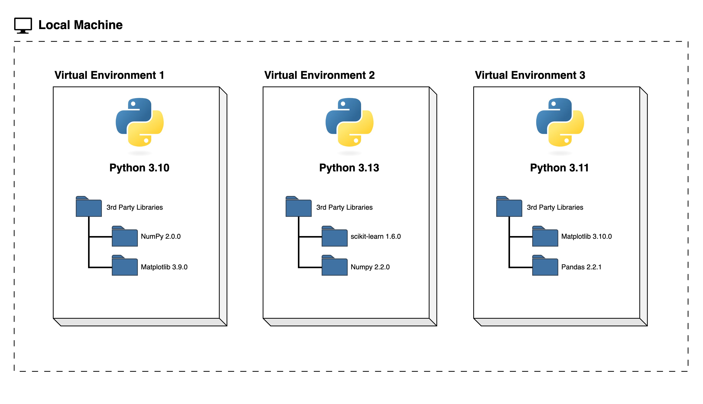
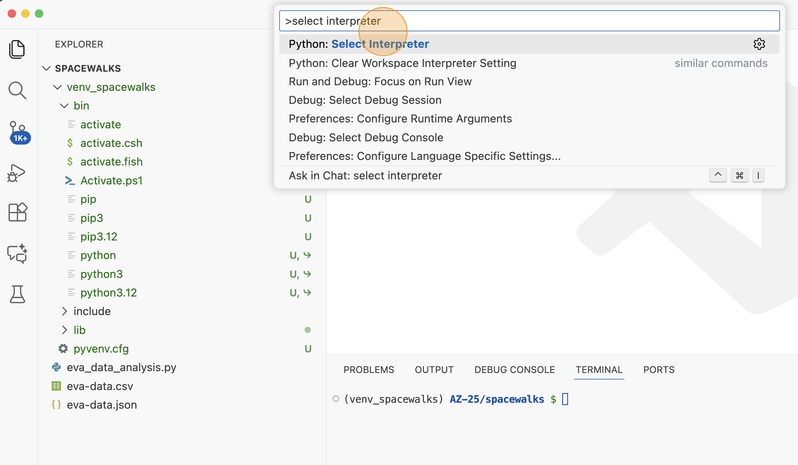
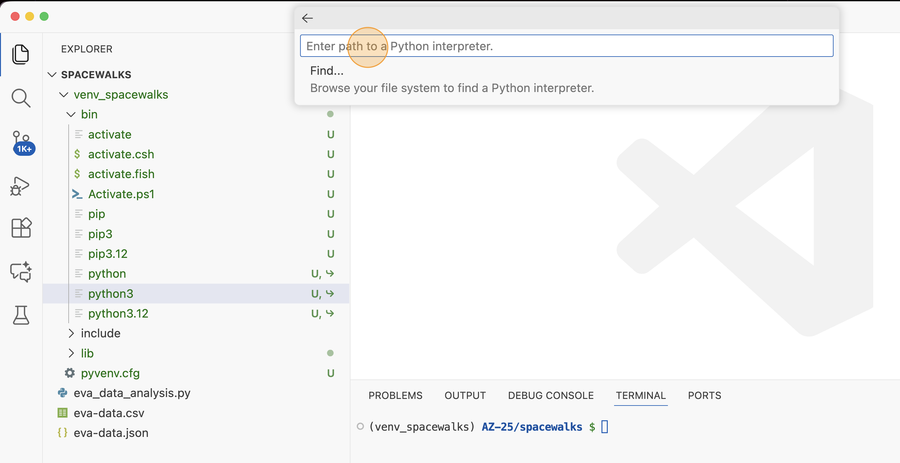
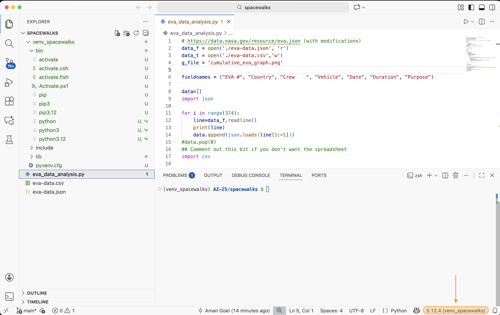

All in One View
Content from Software for open and reproducible research
Last updated on 2026-05-21 | Edit this page
Overview
Questions
- What is open and reproducible research?
- Why are these practices important, in particular in the context of software used to support such research?
Objectives
- Describe the principles of open and reproducible research and why they are of value in the research community
- Explain how the concept of reproducibility translates into practices for building better research software
- Setup machine with software and data used to teach this course
Software is fundamental to modern research - some of it would even be impossible without software. From short, thrown-together temporary scripts written to help with day-to-day research tasks, through an abundance of complex data analysis spreadsheets, to the hundreds of software engineers and millions of lines of code behind international efforts such as the Large Hadron Collider, there are few areas of research where software does not have a fundamental role.
This course teaches good practices and reproducible working methods that are agnostic of a programming language (although we will use Python code in our examples). It aims to provide researchers with the tools and knowledge to feel confident when writing good quality and sustainable software to support their research. Although the discussion will often focus on software developed in the context of research, most of the good practices introduced here are beneficial to software development more generally.
Reproducible research
The lesson is particularly focused on one aspect of good (scientific) software development practice: improving software to enhance reproducibility. That is, enabling others to run our code and obtain the same results we did.
Why should I care about reproducibility?
Scientific transparency and rigor are key factors in research. Scientific methodology and results need to be published openly and replicated and confirmed by several independent parties. However, research papers often lack the full details required for independent reproduction or replication. Many attempts at reproducing or replicating the results of scientific studies have failed in a variety of disciplines ranging from psychology (The Open Science Collaboration (2015)) to cancer sciences (Errington et al (2021)). These are called the reproducibility and replicability crises - ongoing methodological crises in which the results of many scientific studies are difficult or impossible to repeat.
Reproducible research is a practice that ensures that researchers can repeat the same analysis multiple times with the same results. It offers many benefits to those who practice it:
- Reproducible research helps researchers remember how and why they performed specific tasks and analyses; this enables easier explanation of work to collaborators and reviewers.
- Reproducible research enables researchers to quickly modify analyses and figures - this is often required at all stages of research and automating this process saves loads of time.
- Reproducible research enables reusability of previously conducted tasks so that new projects that require the same or similar tasks become much easier and efficient by reusing or reconfiguring previous work.
- Reproducible research supports researchers’ career development by facilitating the reuse and citation of all research outputs - including both code and data.
- Reproducible research is a strong indicator of rigor, trustworthiness, and transparency in scientific research. This can increase the quality and speed of peer review, because reviewers can directly access the analytical process described in a manuscript. It increases the probability that errors are caught early on - by collaborators or during the peer-review process, helping alleviate the reproducibility crisis.
However, reproducible research often requires that researchers implement new practices and learn new tools. This course aims to teach some of these practices and tools pertaining to the use of software to conduct reproducible research.
Review the Reproducible Research Discussion for a more in-depth discussion of this topic.
Practices for building better research software
The practices we will cover for building better research software fall into three areas.
1. Things you can do with your own computing environment to enhance the software
- Using virtual development environments ensures your software can be developed and run consistently across different systems, making it easier for you and others to run, reuse, and extend your code.
2. Things you can do to improve the source code of the software itself
- Organising and structuring your code and project directory keeps your software clean, modular, and reusable, enhancing its readability, extensibility, and reusability.
- Following coding conventions for your programming language produces consistently formatted code that others find it easy to read, reuse or extend in their own examples and applications.
- Writing structured documentation strings and comments within your code will make it more understandable to others who wish to use or extend it.
- Testing can save time spent on debugging and ensures that your code is correct and does what it is set out to do, giving you and others confidence in your code and the results it produces.
3. Things you can do to make the software easier for other people to use
- Using version control and collaboration platforms like GitHub, GitLab, and CodeBerg makes it easier to share code and work on it together.
- Fostering a community around your software and promoting collaboration helps to grow a user base for your software and contributes to its long-term sustainability.
- Providing clear and comprehensive documentation, including code comments, API specifications, setup guides, and usage instructions, ensures your software is easy to understand, use, and extend (by you and others).
- Accompanying your software with clear information about its licensing terms and how it should be cited ensures that others can reuse and adapt your code with confidence and that you receive credit when they do so.
Tools and practices you use (5 min)
Individually,
- reflect on what practices or tools you are already using in your software development workflow,
- list some new practices or tools that you would like to start employing or using.
Write your reflections in the shared collaborative document.
FAIR software
Some of the practices covered here also align with the FAIR Research Software Principles and are explored further in the additional episode on FAIR software. However, FAIR is just one of several frameworks that can guide the development of high-quality research software. What matters most is recognising how each of these individual practices—whether or not they come from FAIR—helps you produce software that is more reliable, maintainable, and useful to others.
Our research software project
You are going to follow a fairly typical experience of a new
researcher (e.g. a PhD student or a postdoc) joining a research group.
You were emailed some spacewalks data and analysis code bundled in the
spacewalks.zip archive, written by another group member who
worked on similar things but has since left. You need to be able to
install and run this code on your machine, check you can understand it
and then adapt it to your own project.
As part of the setup for this
course, you may have downloaded or been emailed the
spacewalks.zip archive. If not, you can download
it now. Save the spacewalks.zip archive to your home
directory and extract it - you should get a directory called
spacewalks.
Opening the project
We will use VS Code IDE (Integrated Development Environment) for software development.
IDEs are graphical application that provide a comprehensive workspace for writing, editing, testing, and debugging code - all in one place. At the core of an IDE is a code editor, and it combines several tools that developers need into a single interface to streamline the code development process. IDEs are extremely useful and modern software development would be very hard without them. Some of IDEs also provide graphical interface to a version control system which typically contains a subset of all available version control commands.
VS Code integrates many of these tools and functionalities (e.g. file and project exploring, running code in terminal, viewing different file types, running a testing framework or a debugger, version control system, etc.) either natively or via a large number of extensions. It is a popular choice among many researchers, but it is not the only one. Outside of this course, you will make a choice which IDE or code editor to use based on your and your team’s preferences.
As part of setup, we have installed a few extensions for VS Code to make our software development experience easier.
To open our directory spacewalks in VS Code – go to
File -> Open Folder and find
spacewalks.
Orient the users and navigate around VS Code.
- Explorer - the top one is a file navigator, or explorer - we can use this to open existing folders containing program files.
- Search - the next one down is a search capability, so you can search for things (and replace them with other text) over your code files.
- Source control - this gives you access to source code control, which includes Git version control functionality. This feature means you can do things like clone Git repositories (for example, from GitHub), add and commit files to a repository, things like that.
- Run and Debug - this allows you to run programs you write in a special way with a debugger, which allows you to check the state of your program as it is running, which is very useful and we’ll look into later.
- Extensions - this allows you to install extensions to VS Code to extend its functionality in some way.
- Terminal - allows access to a command line terminal to type various commands (via Terminal -> New Terminal (Windows users need to make sure the new terminal is “GitBash”; not “PowerShell” or “cmd”)).
Check that learners have installed Microsoft Python extension for Visual Studio Code. This extension provides support for Python language and will also automatically install Microsoft Pylance (IntelliSense, performant Python language support) and Microsoft Python Debugger extensions.
Inspecting the project
The first thing you may want to do is inspect the content of the code and data you received to learn more about what it does.
You may notice that the software project contains:
-
A JSON file called
data.json- a snippet of which is shown below - with data on extra-vehicular activities (EVAs, i.e. spacewalks) undertaken by astronauts and cosmonauts from 1965 to 2013 (data provided by NASA via its Open Data Portal). JSON data file snippet showing EVA/spacewalk data including EVA ID, country, crew members, vehicle type, date of the spacewalk, duration, and purpose
JSON data file snippet showing EVA/spacewalk data including EVA ID, country, crew members, vehicle type, date of the spacewalk, duration, and purpose -
A Python script called
my code v2.pycontaining some analysis code. The first few lines of a Python script
The first few lines of a Python scriptThe code in the Python script does some common research tasks:
- Reads in the data from the JSON file
- Changes the data from one data format to another and saves to a file in the new format (CSV)
- Performs some calculations to generate summary statistics about the data
- Makes a plot to visualise the data
- A folder called
astronaut-data-analysis-old- which presumably contains previous versions of the analysis acting as some sort of a backup. - A hidden file
.DS_Store- Desktop Services Store is a hidden metadata file automatically created by macOS Finder in every folder, storing user-specific view settings like icon positions, window size, and background colors, acting much like Windows’desktop.ini. This makes us think that the author was using macOS operating system but this file does not make part of the project itself.
If you do not see hidden file .DS_Store, that means that
your VS Code is configured to exclude certain files and directories from
the File Explorer View. One way to modify this is going to ‘Code’ >
‘Preferences’ > ‘Settings’ (‘Code’ > ‘Preferences’ > ‘Settings’
on macOS) and searching for ‘exclude’ and you will find the default
exclude list under Files: exclude. You can remove the
**/.DS_Store pattern and the hidden file
.DS_Store should appear in VS Code’s File Explorer.
Alternatively, open a terminal window within VS Code, navigate to
your spacewalks folder (we are assuming you downloaded it
into your home directory) and issue ls -la command to list
the directory contents.
BASH
cd ~/spacewalks
ls -la
total 288
drwx------@ 6 mbassan2 staff 192 30 Jul 10:56 .
drwxr-x---+ 55 mbassan2 staff 1760 14 Nov 14:34 ..
-rw-r--r--@ 1 mbassan2 staff 6148 30 Jul 10:54 .DS_Store
drwxrwxr-x@ 4 mbassan2 staff 128 4 Apr 2025 astronaut-data-analysis-old
-rw-rw-r--@ 1 mbassan2 staff 132981 4 Apr 2025 data.json
-rw-rw-r--@ 1 mbassan2 staff 1514 30 Jul 10:56 my code v2.pyAssess the software project (10 min)
Individually inspect the code and data. Try and see if you can understand what the code is doing and how it is organised.
In the shared document, write down anything that you think is not “quite right”, not clear, is missing, or could be done better.
Below are some suggested questions to help you assess the code. These are not the only criteria on which you could evaluate the code and you may find other aspects to comment on.
- If these files were emailed to you, or sent on a chat platform, or handed to you on a memory stick, how easy would it be to find them again in 6 months, or 3 years?
- Can you understand the code? Does it make sense to you?
- Could you run the code on your platform/operating system (is there documentation that covers installation instructions)? What programs or libraries do you need to install to make it work (and which versions)? Are these commonly used tools in your field?
- Are you allowed to reuse this code in your own work? If you did, would the owner expect credit in some form (paper authorship, citation or acknowledgement)? Are you allowed to modify the files or share them with others?
- Is the code written in a way that allows you to easily modify or extend it? How easy would it be to change its parameters to calculate a different statistic, or run the analysis on a different input file?
What the code does:
- reads data in JSON format line by line and manually parses data from each line
- appends the parsed data to a list
- exports the list with data to a CSV file
- reads all spacewalks durations and adds a cumulative sum for all spacewalk durations up to that point in time
- plots the cumulative durations on a graph where x-axes are dates of spacewalks, and y-axis is the cumulative time spent in space up till then
This is a (non-exhaustive) list of things that could be fixed/improved with our code and data:
File and variable naming
- data (
data.json) and Python script (my code v2.py) files could have more descriptive names - Python script (
my code v2.py) should not contain blank spaces as it may cause problems when running the code from command line - variables (e.g.
w,t,tt,ttt) should have more descriptive and meaningful names - version control is embedded in the file name
(
my code v2.py) - there are better ways of keeping track of changes to code and its different versions - the project contains a hidden file
.DS_Storewhich is local and personal config file that should not be shared and does not even make sense other than on macOS
Code organisation and style
- import statements should be grouped at the top
- commenting and uncommenting code should not be used to direct the flow of execution / type of analysis being done
- the code lacks comments, documentation and explanations
- code structure could be improved to be more modular and not one monolithic piece of code - e.g. use functions for reusable units of functionality
- unused variables (e.g.
fieldnamesmeant to be used when saving data to CSV file) are polluting the code and confusing the person reading the code - spaces should not be used in column names as it can lead to error when reading the data in
Code content and correctness
- fixing the loop to 375 data entries is not reusable on other data files and would likely break if the data file changed
- reading the JSON file line by line and extracting the data portions from each line (by removing “,”, “[”, ”]” characters that form part of JSON syntax) is fragile and will break if JSON file is to be reformatted
- running the code twice causes the program to fail as the result file from the previous run will exist (which the code does not check for) and the script will refuse to overwrite it
- the code does not specify the encoding when reading the data in, and we are also not sure what encoding the data was saved in originally
- how can we be confident the data analysis and plot that is produced as a result are correct?
Documentation
- there is no README documentation to orient the user
- there is no licence information to say how the code can be reused (which then means it cannot be reused at all)
- it is not clear what software dependencies the code has
- there are no installation instructions or instructions on how to run the code
As you have seen from the previous exercise - there are quite a few things that can be improved with this code. We will try to make this research software project a “bit better” for future use.
Running the code
Let’s try to run the code and see if we can reproduce the results.
Open the terminal in VS Code (unless you have already done it) and type the following command.
You will get an error that looks something like the following:
OUTPUT
Traceback (most recent call last):
File "/Users/USERNAME/Downloads/spacewalks/my code v2.py", line 2, in <module>
data_f = open('/home/sarah/Projects/astronaut-analysis/data.json', 'r')
FileNotFoundError: [Errno 2] No such file or directory: '/home/sarah/Projects/astronaut-analysis/data.json'We get this error because the paths to the data files have been hard coded as absolute paths for the original developer’s machine. Hard-coding paths is not very reproducible, as it means the paths need to be changed whenever the code is run on a new computer. We will soon fix the code to use the relative paths within the project structure and eventually we will change the code to take in arguments from the command line when it is run too.
So, we cannot even run the code on our machines. There is also a number of issues we identified with the software project that could do with improving. For the rest of this course, we will work on fixing these issues and applying some good software engineering practices.
Further reading
We recommend the following resources for some additional reading on reproducible research:
- Reproducible research through reusable code is a one day course by the Netherlands eScience Center which discusses similar themes to this course, but in a shorter format.
- The Turing Way’s “Guide for Reproducible Research”
- A Beginner’s Guide to Conducting Reproducible Research, Jesse M. Alston, Jessica A. Rick, Bulletin of The Ecological Society of America 102 (2) (2021), https://doi.org/10.1002/bes2.1801
- “Ten reproducible research things” tutorial
- FORCE11’s FAIR 4 Research Software (FAIR4RS) Working Group
- “Good Enough Practices in Scientific Computing” course
- Reproducibility for Everyone’s (R4E) resources, community-led education initiative to increase adoption of open research practices at scale
- Training materials on different aspects of research software engineering (including open source, reproducibility, research software testing, engineering, design, continuous integration, collaboration, version control, packaging, etc.), compiled by the INTERSECT project
- Curated resources by the Framework for Open and Reproducible Research Training (FORRT)
Acknowledgements and references
The content of this course borrows from or references various work.
- Reproducible research is a practice that ensures that researchers can repeat the same analysis multiple times with the same results.
- Reproducible research practices support rigor, trustworthiness, openness and transparency in scientific research; increase the quality, efficiency and speed of research; facilitate reuse and citation of all research outputs and career development of people who produce them.
- In the context of the software we write to support our research, reproducible practices mean others being able to obtain and install our software, run our code and obtain the same results we did.
- This can mean a number of things, but a good place to start is sharing your software openely and collaborating with others; using version control to know who changed what and when; setting up reproducible software development environments that can be replicated across different machines, systems and platforms; testing your software to ensure it produces correct results; documenting your software so others can understand and reuse it; following coding conventions and writing modular code so others can more easlity read, understand and reuse it.
Content from Better start with a software project
Last updated on 2026-05-21 | Edit this page
Overview
Questions
- What is a version control system?
- Why is version control essential to building good software?
- What does a standard version control workflow look like?
Objectives
- Set up version control for our software project to track changes to it
- Create self-contained commits using Git to incrementally save work
- Push new work from a local machine to a remote server on GitHub
In this episode, we will set up our new research software project using some good practices from the start. This will lay the foundation for long-term sustainability of our code, collaboration, and reproducibility.
Let’s begin by creating a new software project from our existing code, and start tracking changes to it with version control. We will also add our software project to GitHub - so we can back it up, share our code with our team and collaborators, and start project managing issues and work needed to be done.
From script to software project
In the previous episode you have unzipped spacewalks.zip
into a directory spacewalks in your home directory. If you
have not opened the software directory in VS Code already – go to
File -> Open Folder and find
spacewalks.
We also need access to a command line terminal to type various commands. In VS Code start a new terminal via Terminal -> New Terminal (Windows users need to make sure the new terminal is “GitBash”; not “PowerShell” or “cmd”). Alternatively, you can work with a shell terminal directly (and not within VS Code), if you so prefer.
If you are not already inside this directory, from your command line terminal you can navigate to it and list its contents with:
BASH
cd ~/spacewalks
ls -la
total 288
drwx------@ 6 mbassan2 staff 192 30 Jul 10:56 .
drwxr-x---+ 55 mbassan2 staff 1760 14 Nov 14:34 ..
-rw-r--r--@ 1 mbassan2 staff 6148 30 Jul 10:54 .DS_Store
drwxrwxr-x@ 4 mbassan2 staff 128 4 Apr 2025 astronaut-data-analysis-old
-rw-rw-r--@ 1 mbassan2 staff 132981 4 Apr 2025 data.json
-rw-rw-r--@ 1 mbassan2 staff 1514 30 Jul 10:56 my code v2.pyOver the rest of the course, we will transform a collection of these files into a well-structured software project that follows established good practices in research software engineering.
The first thing you may notice that our software project contains
folder astronaut-data-analysis-old which presumably tries
to keep track of older versions of the code. There is a better way to do
that using version control tool, such as Git, and we can delete this
folder so it does not cause confusion.
Version control
Before we do any further changes to our software, we want to make sure we can keep a history of what changes we have done since we inherited the code from our colleague.
We can track changes with a version control system (we will use Git). Later on, we will store those changes on a remote server too – both for safe-keeping and to make them easier to share with others. In later episodes, we will also see how version control makes it easier for multiple collaborators to work together on the same project at the same time and combine their contributions.
Version control refresher
What is a version control system?
Version control systems are tools that let you track changes in files over time in a special database that allows users to “travel through time”, and compare earlier versions of the files with the current state. Think of a version control system like turning on ‘Track Changes’ on Microsoft Word/Google Docs, but for any files you want, and a lot more powerful and flexible.
Why use a version control system?
As scientists, our main motivation for using version control is reproducibility. By tracking and storing every change we make, we can restore our project to the state it was at any point in time. This is incredibly useful for reproducing results from a specific version of the code, or tracking down which changes we (or others) made introduced bugs or changed our results.
The other benefit of version control is it provides us with a history of our development. As we make each change, we record what it was, and why we made it. This helps make our development process transparent and auditable – which is a good scientific practice.
It also makes our project more sustainable - as our data, software and methods (knowledge) remain usable and accessible over time (especially if made available in shared version controlled code repositories), even after the original funding ends or team members move on.
Git version control system
Git is the most popular version control system used
by researchers worldwide, and the one we’ll be using. Git is used mostly
for managing code when developing software, but it can track
any files – and is particularly effective with text-based files
(e.g. source code like .py, .c,
.r, but also .csv, .yml,
.json and more).
Git helps multiple people work on the same project (even the same file) at the same time. Initially, we will use Git to start tracking changes to files on our local machines; later on we will start sharing our work on GitHub allowing other people to see and contribute to our work.
Git refresher
Git stores files in repositories - directories where changes to the files can be tracked. The diagram below shows the different parts of a Git repository, and the most common commands used to work with one.
-
Working directory - a local directory (including
any subdirectories) where your project files live, and where you are
currently working. It is also known as the “untracked” area of Git. Any
changes to files will be marked by Git in the working directory. Git
will only save changes that you explicitly tell it to. Using
git add FILENAMEcommand, can you tell Git to start tracking changes to fileFILENAMEin your working directory. -
Staging area (index) - once you tell Git to start
tracking changes to files (with
git add FILENAMEcommand), Git saves those changes in the staging area on your local machine. Each subsequent change to the same file needs to be followed by anothergit add FILENAMEcommand to tell Git to update it in the staging area. To see what is in your working directory and staging area at any moment (i.e. what changes is Git tracking), you can run the commandgit status. The staging area lets you bundle together groups of changes to save to your repository. -
Local repository - stored within the
.gitdirectory of your project locally, this is where Git wraps together all your changes from the staging area and puts them using thegit commitcommand. Each commit is a new, permanent snapshot (checkpoint, record) of your project in time, which you can share or revert to. -
Remote repository - this is a version of your
project that is hosted somewhere on the Internet (e.g., on GitHub,
GitLab or somewhere else). While your project is nicely
version-controlled in your local repository, and you have snapshots of
its versions from the past, if your machine crashes you still may lose
all your work. Plus, sharing or collaborating on local work with others
requires lots of emailing back and forth. Working with a remote
repository involves ‘pushing’ your local changes to it (using
git push), and pulling other people’s changes back to your local copy (usinggit fetchorgit pull). This keeps the two in sync in order to collaborate, with a bonus that your work also gets backed up to another machine. Best practice when collaborating with others on a shared repository is to always do agit pullbefore agit push, to ensure you have any latest changes before you push your own.
Start tracking changes with Git
Open up VS Code and launch a terminal. By default, it will locate you
in your spacewalks directory. We want to tell Git to make
spacewalks a repository – a directory where Git can track
changes to our files. We can do that with the git init
command:
We can check everything is set up correctly by asking Git to tell us the status of our project:
OUTPUT
On branch main
No commits yet
Untracked files:
(use "git add <file>..." to include in what will be committed)
.DS_Store
data.json
my code v2.py
nothing added to commit but untracked files present (use "git add" to track)This tells us that Git has noticed three files in our directory, but
unlike Dropbox or OneDrive, it does not automatically track
them. We need to tell Git explicitly which files we want it to track.
This is not a problem, but rather a helpful feature, since software
projects can have vast input or output files we might not want Git to
track and store (e.g. think of GBs to TBs of space telescope data) or
require sensitive information we cannot share (for example, medical
records). Or indeed contain hidden files that have nothing to do with
the software project itself (e.g. .DS_Store) that we do not
want to track or share.
Let’s still commit our files (even though we know the code is broken) - we will note that the code is broken in our commit message. This is a best practice if you decide to commit broken code.
Adding files to a repository
We can tell Git to track a file using git add:
and then check the right thing happened:
OUTPUT
On branch main
No commits yet
Changes to be committed:
(use "git rm --cached <file>..." to unstage)
new file: data.json
new file: my code v2.py
Untracked files:
(use "git add <file>..." to include in what will be committed)
.DS_StoreGit now knows that should track the changes to
my code v2.py and data.json, but it has not
‘committed’ those changes to the record yet. A commit is a snapshot of
how your tracked files have changed at a stage in time. To create a
commit that records we added two new files, we need to run one more
command:
BASH
$ git commit -m "Add the initial spacewalks data and code
BREAKING CHANGE: Path to data is hard coded and needs to be fixed"OUTPUT
[main (root-commit) bf55eb7] Add the initial spacewalks data and code
2 files changed, 437 insertions(+)
create mode 100644 data.json
create mode 100644 my code v2.pyThe -m option means message, and records a short,
descriptive, and specific comment that will help us remember later on
what we did and why. If we run git commit without
-m, Git will still expect a message and and will launch a
text editor so that we can write a longer one.
Remember, good commit messages start with a brief (<50 characters) statement about the changes made in the commit. Generally, the message should complete the sentence “If applied, this commit will…”. If you want to go into more detail, add a blank line between the summary line and your additional notes. Use this additional space to explain why you made changes and/or what their impact will be.
If we run git status now, we see:
OUTPUT
On branch main
Untracked files:
(use "git add <file>..." to include in what will be committed)
.DS_Store
nothing added to commit but untracked files present (use "git add" to track)This tells us that everything is up to date.
At this point, Git has taken everything we have told it to save with
the git add command and stored a copy (snapshot) of the
files in a special, hidden .git directory. This is called a
commit (or revision). You can check the existence of this special
directory in VS Code’s File Explorer.
Where are my changes?
If we run ls at this point, we’ll still only see two
files – our script and our dataset. Git saves information about our
files’ history in the special .git directory mentioned
earlier. This both stops our folders being cluttered with old versions,
and also stops us accidentally deleting them!
You can see the hidden Git directory using the -a flag
to show all files and folders:
OUTPUT
.
..
.git
[snip]If you delete it, your directory will stop being a repository, and it
will lose your history of changes. You never need to look into or modify
.git yourself – Git has useful commands to do that, which
are covered later on.
Make a change
You may have noticed that the script we received contain blank spaces
in filename. This meant that, when we were typing the script’s name into
the terminal, we had to add a slash before the space like this:
my\ code\ v2.py. Using a backslash in this way is called
“escaping”. It lets the terminal know to treat the space as part of the
filename, and not a separate argument. It is a bit inconvenient and can
cause problems if you forget, so best practise is to avoid spaces in
filenames. The simplest fix is to replace the spaces with underscores
_ instead.
To rename the files using git you can use the git mv
command:
If you run git status again, you’ll see Git has noticed
the change in the filename. Note, git mv handles the name
change directly, instead of seeing a deleted file and a new file as
would be the case if we’d used mv and then
git add. It also stages the changes to be committed.
OUTPUT
On branch main
Changes to be committed:
(use "git restore --staged <file>..." to unstage)
renamed: my code v2.py -> my_code_v2.py
Untracked files:
(use "git add <file>..." to include in what will be committed)
.DS_StoreRename our data and output files
Now that we know how to rename files in Git, we can use it to make our files and code a bit easier to understand.
We may want to:
- Give our script and input data file more meaningful names,
e.g.
eva_data_analysis.pyandeva-data.json. This change also uses removes version tracking from the script name as we are using Git for version control any more as Git will keep track of that for us. - Choose informative file names for our output data file
(e.g.
eva-data.csv) and plot (cumulative_eva_graph.png). - Use relative paths (e.g.
./eva-data.json) instead of absolute paths (e.g.home/sarah/Projects/astronaut-analysis/data.csv) to the files (which were hardcoded to the path on our colleagues machine and would not work on ours). - Update the Python script with these changes.
Update filenames (5 min)
Try to make these changes yourself.
- Give our Python script and input data file informative names -
eva_data_analysis.pyandeva-data.json, respectively. - Update other file names and paths used in the script - output CSV
data (
eva-data.csvto match the new input data name) and plot(cumulative_eva_graph.png). - Stage and commit these changes in the Git repository.
Firstly, let’s update the file names in our Python script from VS Code:
PYTHON
data_f = open('./eva-data.json', 'r')
data_t = open('./eva-data.csv','w')
g_file = './cumulative_eva_graph.png'Next, we need to rename the files on the file system using Git:
BASH
git mv data.json eva-data.json
git mv my_code_v2.py eva_data_analysis.py
git add eva_data_analysis.py
git statusOUTPUT
On branch main
Changes to be committed:
(use "git restore --staged <file>..." to unstage)
renamed: data.json -> eva-data.json
renamed: my_code_v2.py -> eva_data_analysis.py
Untracked files:
(use "git add <file>..." to include in what will be committed)
.DS_StoreFinally, we can commit our changes:
Let’s try to run our code again, see where we get to.
At this point you may get the following error if you do not have
matplotlib installed on your system.
BASH
{'eva': '370', 'country': 'Russia', 'crew': 'Fyodor Yurchikhin;Alexander Misurkin;', 'vehicle': 'ISS Incr-36', 'date': '2013-08-16T00:00:00.000', 'duration': '7:29', 'purpose': 'Â\x95 Installed VINOSLIVOST experiment on MRM2, 2 MLMÂ\x96USOS power cables, FGB Â\x96 MRM2 gap spanners, MLM-USOS ETHERNET cable\nÂ\x95 Installation of gap spanners SM Â\x96 MRM2 (if time allows)\nÂ\x95 Retracted & stowed Strela-1 on DC1'}
1900-01-01 07:29:00 7.483333333333333
Traceback (most recent call last):
File "/Users/user/spacewalks/eva_data_analysis.py", line 54, in <module>
import matplotlib.pyplot as plt
ModuleNotFoundError: No module named 'matplotlib'If you did not get the above error - you should now have the result
graph file cumulative_eva_graph.png in your project root.
Note that we do not know if the plotted result file is correct or not.
You should also have the eva-data.csv file which contains
the EVA data converted from JSON to CSV format.
We will look into the matplotlib issue in a moment. But
let’s first set up our software project as a repository on GitHub so we
can back up our work and share with others.
Interacting with a remote Git server
Git is distributed version control system and lets us synchronise work between multiple copies of the same repository - which may not be on your machine (called remote repositories). So far, we have used a local repository on our machine and, even though we have been incrementally saving our work in a way that is recoverable, if we lost our machine then we would lose all our code along with it,
Fortunately, we can easily upload our local repository, with all our code and the history of our development, to a remote server so that it can be backed-up and recovered in future.

GitHub is an online software development platform that can act as a central remote server. It uses Git, and provides facilities for storing, tracking, and collaborating on software projects. Other Git hosting services are available, such as GitLab and Bitbucket.
Putting our projects on GitHub helps protect them against deletion, and also makes it easy to collaborate and share them. Our collaborators can access the project, download their own copy, and even contribute work back to us.
Let’s push our local repository to GitHub and share it publicly.
In your browser, navigate to https://github.com and sign into your account.
-
In the top right hand corner of the screen, there is a menu labelled “+” with a dropdown. Click the dropdown and select “New repository” from the options:
 Creating a new GitHub repository
Creating a new GitHub repository -
You will be presented with some options to fill in or select while creating your repository. In the “Repository Name” field, type “spacewalks”. This is the name of your project and matches the name of your local folder.
 Naming the GitHub repository
Naming the GitHub repositoryEnsure the visibility of the repository is “Public” and leave all other options blank. Since this repository will be connected to a local repository, it needs to be empty which is why we chose not to initialise with a README or add a license or
.gitignorefile. Click “Create repository” at the bottom of the page: Complete GitHub repository creation
Complete GitHub repository creation -
Now we have a remote repository on GitHub’s servers, you need to send it the files and history from your local repository. GitHub provides some instructions on how to do that for different scenarios. Change the toggle on the right side from “HTTPS” to “SSH”, then look at the heading “…or push an existing repository from the command line”. You should see instructions that look like this:
BASH
git remote add origin git@github.com/<YOUR_GITHUB_HANDLE>/spacewalks.git git branch -M main git push -u origin mainIt is very important you make sure you switch from “HTTPS” to “SSH”. In the setup, we configured our GitHub account and our local machine for SSH. If you select HTTPS, you will not be able to upload your files.
You can copy these commands using the button that looks like two overlapping squares to the right-hand side of the commands. Paste them into your terminal and run them.

- If you refresh your browser window, you should now see the two files
eva_data_analysis.pyandeva-data.jsonvisible in the GitHub repository, matching what you have locally on your machine.
If you were wondering about what those commands did, here is the explanation.
This command tells Git to create a remote called
“origin” and link it to the URL of your GitHub repository. A
remote is a version control concept where two (or more)
repositories are connected to each other, in such a way that they can be
kept in sync by exchanging commits. “origin” is a name used to refer to
the remote repository. It could be called anything, but “origin” is a
common convention for Git since it shows which is considered the “source
of truth”. This is particularly useful when many people are
collaborating on the same repository.
git branch is a command used to manage branches. We’ll
discuss branches later on in the course. We saw this command during
setup and earlier in this episode - it ensures the branch we are working
on is called “main”. This will be the default branch of the project for
everyone working on it.
The git push command is used to update a remote
repository with changes from your local repository. This command tells
Git to update the “main” branch on the “origin” remote. The
-u flag (short for --set-upstream) sets the
‘tracking reference’ for the current branch, so that in future
git push will default to sending to
origin main.
Software project in GitHub
We now have our software project in GitHub and have linked it to our local working copy. We are ready to start more work on software development and publishing and backing up that work on GitHub. Let’s briefly explore the GitHub interface to our project.

In a GitHub software project, the tabs you see at the top of a repository page help organise different aspects of the project. Here’s a brief explanation of them:
- Code - shows the source code, folders, and files in the repository. This is where the main development work is done.
- Issues - used to track bugs, tasks, feature requests, or any work that needs to be done.
- Pull requests - where contributors submit changes to the code. These are reviewed and discussed before being merged.
- Actions - automated workflows (like tests or deployments) that run on the project using GitHub Actions.
- Projects - adaptable table, board, and roadmap view of the project that integrates with your issues and pull requests to help you plan and track work effectively at the user or organisation level.
- Wiki – lets you create structured documentation for your project.
- Security – helps identify, manage, and fix vulnerabilities in your code and dependencies.
- Insights – provides analytics on project activity, contributions, and community health.
- Settings - where you configure how the repository behaves and how others can interact with it.
These tabs help manage collaboration, development, and maintenance of the project. We will cover some of them in more detail as part of this course. You may not see all of these tabs depending on your access level to the repository and the configuration settings.
Keeping track of issues and planned work in GitHub
The one tab that we want to start using early on is Issues. This is where you report issues and bugs, track tasks, feature requests and what needs to be done and what problems exist, and capture general discussions related to the project.
Each issue acts like a conversation thread, where contributors can describe a problem or idea, discuss it, attach code snippets or images, and reference commits or pull requests or mention other team members. It allows contributors to discuss and refine ideas before making changes, and helps prioritise work and organise releases. The Issues tab serves as the project’s task board and communication hub, making development more organised, transparent and inclusive.
It is important to start listing things that need doing on the project early on so you do not forget about them. The Issues tab is a good place to create that list and keep it together with the code.
In one of the the previous exercises, we have identified a number of things that could be improved with our software. Let’s add one of them as an issue now (we will continue to do this throughout the course - this is good practice).
For example, we identified that variables (e.g. w,
t, tt, ttt) should have more
descriptive and meaningful names. To add this as an issue in GitHub, go
to the Issues tab in your project’s GitHub page, and
click the “New issue” green button. In the form that appears, we add a
descriptive title for this new issue (e.g. “improve variable names”) and
write more details about the issue (e.g. “rename variables
w, t, tt, and ttt to
be more descriptive”).

Later on in the course, we will learn how to comment, reference, add more details and close issues.
Summary
We have created a new software project and used version control system Git to track changes to it. We can now look back at our work, compare different code versions, and even recover past states. We have also published our software to a remote repository located on GitHub, where it is both secure and shareable.
These skills are critical to reproducible and sustainable science. Software is science, and being able to share the specific version of code used in a paper is required for reproducibility. But we, as researchers, also benefit from having a clear, self-documented record of what we did, when and why. It makes it much easier to track down and fix our bugs, return to work on projects we took a break from, and even for other people to pick up our work.
Before we start making changes to the code, we have to set up a development environment with software dependencies for our project to ensure this metadata about our project is recorded and shared with anyone wishing to download, run or extend our software (and this includes ourselves on a different machine or operating system).
At this point, the code in your local software project’s directory should be as in: https://github.com/carpentries-incubator/bbrs-software-project/tree/03-reproducible-dev-environment
Further reading
We recommend the following resources for some additional reading on the topic of this episode:
- Software Carpentry’s Git Novice lesson
- The Turing Way’s “Guide to Version Control”
- “How Git Works” course on Pluralsight
- How to Write a Good Commit Message
- Git Commit Good Practice
Also check the full reference set for the course.
- Version control systems are software that tracks and manages changes to a project over time
- Using version control aids reproducibility since the exact state of the software that produced an output can be recovered
- A commit represents the smallest unit of change to a project
- Commit messages describe what each commit contains and should be descriptive
- GitHub is a hosting service for sharing and collaborating on software
- Using version control is one of the first steps to creating a software project from a bunch of scripts - by investing in these practices early, researchers can create software that supports their work more effectively and enables others to build upon it with confidence.
Content from Reproducible software environments
Last updated on 2026-05-21 | Edit this page
Overview
Questions
- What are virtual environments in software development and why use them?
- How can we manage Python virtual coding environments and external (third-party) libraries on our machines?
Objectives
- Set up a Python virtual coding environment for a software project
using
venvandpip.
So far we have created a local Git repository to track changes in our software project and pushed it to GitHub to enable others to see and contribute to it. We now want to start developing the code further.
At this point, the code in your local software project’s directory should be as in: https://github.com/carpentries-incubator/bbrs-software-project/tree/03-reproducible-dev-environment
Software dependencies
If we have a look at our script, we may notice a few
import lines such as: import json,
import csv, import datetime as dt and
import matplotlib.pyplot as plt throughout the code. This
means that our code depends on or requires several
libraries to function - namely json,
csv, datetime and matplotlib.
json, csv, datetime are
standard Python libraries - this means that they come
included in a Python distribution and they will be provided for you to
import out of the box. If you are using some much older Python
distributions for any reason, they may not include these libraries out
of the box and you may still need to install them manually.
Python applications also use external libraries that do not come as
part of the standard Python distribution - such as
matplotlib or pandas. This means that you will
have to use a package manager tool to install them on
your system. Applications will also sometimes need a specific version of
an external library (e.g. because they were written to work with
feature, class, or function that may have been updated in more recent
versions), or a specific version of Python interpreter. This means that
each Python application you work with may require a different setup and
a set of dependencies so it is useful to be able to keep these
configurations separate to avoid confusion between projects.
The solution for this problem is to create a self-contained
virtual environment per project, which contains a
particular version of Python installation plus a number of additional
external libraries. This is also the reason why we did not want to solve
the ModuleNotFoundError: No module named 'matplotlib' (in
the case you had it) from the previous episode there and then as it
would mean installing matplotlib system-wide (i.e. globally
on your machine). It is much better to install libraries in virtual
environments only for projects that need them.
What are virtual software environments?
So what exactly are virtual software environments, and why use them?
A Python virtual environment helps us create an isolated working copy of a software project that uses a specific version of Python interpreter together with specific versions of a number of external libraries installed into that virtual environment. Python virtual environments are implemented as directories with a particular structure within software projects, containing links to specified dependencies allowing isolation from other software projects on your machine that may require different versions of Python or external libraries.
It is recommended to create a separate virtual environment for each project. Then you do not have to worry about changes to the environment of the current project you are working on affecting other projects - you can use different Python versions and different versions of the same third party dependency by different projects on your machine independently from one another.
We can visualise the use of virtual environments for different Python projects on the same machine as follows:

Another big motivator for using virtual environments is that they make sharing your code with others much easier - as we will see shortly you can record your virtual environment in a special file and share it with your collaborators who can then recreate the same development environment on their machines.
You do not have to worry too much about specific versions of external libraries that your project depends on most of the time. Virtual environments also enable you to always use the latest available version without specifying it explicitly. They also enable you to use a specific older version of a package for your project, should you need to.
Truly reproducible environments are difficult to attain
Creating and managing isolated environments for each of your software projects and sharing descriptions of those environments alongside the relevant code is a great way to make your software and analyses much more reproducible. However, “true” computational reproducibility is very difficult to achieve. For example, the tools we will use in this lesson only track the dependencies of our software, remaining unanware of other aspects of the software’s environment such as the operating system and hardware of the system it is running on. These properties of the environment can influence the running of the software and the results it produces and should be accounted for if a workflow is to be truly reproducible.
Although there is more that we can do to maximise the reproducibility of our software/workflows, the steps described in this episode are an excellent place to start. We should not let the difficulty of attaining “perfect” reproducibility prevent us from implementing “good enough” practices that make our lives easier and are much better than doing nothing.
Managing virtual environments
There are several command line tools used for managing Python virtual
environments - we will use venv, available by default from
the standard Python distribution since
Python 3.3.
Part of managing your (virtual) working environment involves
installing, updating and removing external packages on your system. The
Python package manager tool pip is most commonly used for
this - it interacts and obtains the packages from the central repository
called Python Package Index (PyPI).
So, we will use venv and pip in combination
to help us create and share our virtual development environments.
Creating virtual environments
Creating a virtual environment with venv is done by
executing the following command:
where /path/to/new/virtual/environment is a path to a
directory where you want to place it - conventionally within your
software project so they are co-located. This will create the target
directory for the virtual environment.
For our project let’s create a virtual environment called “venv_spacewalks” from our project’s root directory.
If you list the contents of the newly created directory “venv_spacewalks”, on a Mac or Linux system (slightly different on Windows as explained below) you should see something like:
OUTPUT
total 8
drwxr-xr-x 12 alex staff 384 5 Oct 11:47 bin
drwxr-xr-x 2 alex staff 64 5 Oct 11:47 include
drwxr-xr-x 3 alex staff 96 5 Oct 11:47 lib
-rw-r--r-- 1 alex staff 90 5 Oct 11:47 pyvenv.cfgSo, running the python3 -m venv venv_spacewalks command
created the target directory called “venv_spacewalks” containing:
-
pyvenv.cfgconfiguration file with a home key pointing to the Python installation from which the command was run, -
binsubdirectory (calledScriptson Windows) containing a symlink of the Python interpreter binary used to create the environment and the standard Python library, -
lib/pythonX.Y/site-packagessubdirectory (calledLib\site-packageson Windows) to contain its own independent set of installed Python packages isolated from other projects, and - various other configuration and supporting files and subdirectories.
Once you’ve created a virtual environment, you will need to activate it.
On Mac or Linux, it is done as:
On Windows, recall that we have Scripts directory
instead of bin and activating a virtual environment is done
as:
Activating the virtual environment will change your command line’s prompt to show what virtual environment you are currently using (indicated by its name in round brackets at the start of the prompt). It will also modify the environment so that running Python will get you the particular version of Python configured in your virtual environment.
You can verify you are using your virtual environment’s version of
Python by checking the path using the command which:
Environment Variables
Some learners encounter problems at this stage, where system-level
packages are still used by Python instead of the versions installed into
the virtual environment. Previous participants solved the problem by
unsetting the PYTHONHOME, PYTHONPATH and
PYTHONSTARTUP environment variables before creating the
virtual environment for the project:
Adding a Python Interpreter in VS Code
We can create a new or activate an existing virtual environment for our project to work in. Since we have already created a virtual environment, we just need to activate it within a terminal environment in VS Code. However, each time we open a new terminal - we would need to activate the virtual environment again.
It is also a good idea to check and set the Python interpreter manually in VS Code to make sure things are configured correctly for your VS Code project. This way, VS Code will remember which Python interpreter we want to use and invoke it in the future.
You can do that as follows:
- Navigate to the location of the Python interpreter binary within the
virtual environment using the file browser. The Python binary will be
located in
venv_spacewalks/bin/python3(Linux, macOS) orvenv_spacewalks/Scripts/python3(Windows) within our project directory.

- Right-click on the binary and select “Copy Path”.
- Use the keyboard shortcut
CTRL-SHIFT-P(Windows, Linux) orCMD-SHIFT-P(macOS) or to bring up the VS Code Command Palette, then search forPython: Select Interpreter. - Click
Enter interpreter path..., and paste the path you copied followed by Enter.

If everything is setup correctly, when you select a Python file in the file explorer in VS Code you should see the interpreter and virtual environment stated in the information bar at the bottom of VS Code. Any new terminal you open in VS Code from now on in will start with the activated virtual environment. And you can also run the code using the run (play) button from VS Code’s UI - and it will use the same Python interpreter to run your code you have just configured.

Naming Virtual Environments
What is a good name to use for a virtual environment?
Using venv or .venv as the name for an
environment and storing it within the project’s directory seems to be
the standard practice - this way when you come across such a
subdirectory within a software project, by convention you know it
contains its virtual environment details. A slight downside to this is
that all different virtual environments on your machine will use the
same name and the current one is determined by the context of the path
you are currently located in. Note that .venv is also a
hidden directory and that may not be what you want to do.
We used venv_spacewalks - this deviates a from the
convention of calling them venv or .venv, but
does give a clear project-specific prompt of
(venv_spacewalks) and indicates clearly it is a virtual
environment.
Note that you can also set the command line prompt for the virtual environment:
This will create a virtual environment in venv folder
with a string “(spacewalks)” on the command line prompt. It gives a
shorter, meaningful prompt and sticks to convention at the same
time.
In the future, you and your team decide what naming convention works best for you.
When you’re done working on your project, you can exit the environment with:
If you’ve just done the deactivate, ensure you
reactivate the environment ready for the next part:
Note that, since our software project is being tracked by Git, the newly created virtual environment will show up in version control - we will see how to handle it using Git in one of the subsequent episodes.
Installing external packages
We noticed earlier that our code depends on four external
packages/libraries - json, csv,
datetime and matplotlib. As of Python 3.5,
Python comes with in-built JSON and CSV libraries - this means there is
no need to install these additional packages (if you are using a fairly
recent version of Python), but you still need to import them in any
script that uses them. However, we still need to install packages such
as matplotlib and pandas as they do not come
as standard with Python distribution.
To install the latest version of matplotlib package with
pip you use pip’s install command and specify
the package’s name, e.g.:
You can install multiple packages at once by listing them all at once.
The above command has installed package matplotlib in
our currently active venv_spacewalks environment and will
not affect any other Python projects we may have on our machines.
If you run the python3 -m pip install command on a
package that is already installed, pip will notice this and
do nothing.
To install a specific version of a Python package give the package
name followed by == and the version number,
e.g. python3 -m pip install matplotlib==3.5.3.
To specify a minimum version of a Python package, you can do
python3 -m pip install matplotlib>=3.5.1.
To upgrade a package to the latest version,
e.g. python3 -m pip install --upgrade matplotlib.
To display information about a particular installed package do:
OUTPUT
Name: matplotlib
Version: 3.9.0
Summary: Python plotting package
Home-page:
Author: John D. Hunter, Michael Droettboom
Author-email: Unknown <matplotlib-users@python.org>
License: License agreement for matplotlib versions 1.3.0 and later
=========================================================
...
Location: /opt/homebrew/lib/python3.11/site-packages
Requires: contourpy, cycler, fonttools, kiwisolver, numpy, packaging, pillow, pyparsing, python-dateutil
Required-by:To list all packages installed with pip (in your current
virtual environment):
OUTPUT
Package Version
--------------- -----------
contourpy 1.3.3
cycler 0.12.1
fonttools 4.60.1
kiwisolver 1.4.9
matplotlib 3.10.7
numpy 2.3.5
packaging 25.0
pillow 12.0.0
pip 25.2
pyparsing 3.2.5
python-dateutil 2.9.0.post0
pytz 2025.2
six 1.17.0
tzdata 2025.2To uninstall a package installed in the virtual environment do:
python3 -m pip uninstall <package-name>. You can also
supply a list of packages to uninstall at the same time.
Why not use
pip3 install <package-name>?
You may have seen or used the
pip3 install <package-name> command in the past,
which is shorter and perhaps more intuitive than
python3 -m pip install <package-name>.
What is the difference? python3 -m pip install uses
Python to run the Pip module that comes with the Python distribution
using the Python interpreter. So /usr/bin/python3.12 -m pip
means you are executing Pip for your Python interpreter located at
/usr/bin/python3.12.
pip3 install runs the Pip module as an executable
program with the same name - it may pick up whatever pip3
your PATH settings tell it to. And it may not be for the same Python
version your expect - especially if you have several Python
distributions (and Pips) installed (which is very common). There are edge cases
when the two commands may produce different results, so be warned.
The official
Pip documentation recommends python3 -m pip install and
that is what we will be using too.
Sharing virtual environments
You are collaborating on a project with a team so, naturally, you
will want to share your environment with your collaborators so they can
easily ‘clone’ your software project with all of its dependencies and
everyone can replicate equivalent virtual environments on their
machines. pip has a handy way of exporting, saving and
sharing virtual environments.
To export your active environment - use
python3 -m pip freeze command to produce a list of packages
installed in the virtual environment. A common convention is to put this
list in a requirements.txt file in your project’s root
directory:
BASH
(venv_spacewalks) $ python3 -m pip freeze > requirements.txt
(venv_spacewalks) $ cat requirements.txtOUTPUT
contourpy==1.2.1
cycler==0.12.1
DateTime==5.5
fonttools==4.53.1
kiwisolver==1.4.5
matplotlib==3.9.2
numpy==2.0.1
packaging==24.1
pillow==10.4.0
pyparsing==3.1.2
python-dateutil==2.9.0.post0
pytz==2024.1
six==1.16.0
zope.interface==7.0.1The first of the above commands will create a
requirements.txt file in your current directory. Yours may
look a little different, depending on the version of the packages you
have installed, as well as any differences in the packages that they
themselves use.
The requirements.txt file can then be committed to a
version control system (we will see how to do this using Git in a
moment) and get shipped as part of your software and shared with
collaborators and/or users.
Ignoring files
Note that you only need to share the small
requirements.txt file with your collaborators - and not the
entire venv_spacewalks directory with packages contained in
your virtual environment. We need to tell Git to ignore that directory,
so it is not tracked and shared - we do this by creating a file
.gitignore in the root directory of our project and adding
a line venv_spacewalks to it.
Remember the .DS_Store hidden file which is also not
necessary to share with our project? We can tell Git to ignore it by
adding it on a new line in .gitignore as pattern
**/.DS_Store (so it will be ignored in any sub-folder of
our project). That way it can safely reside in local projects of macOS
users and can be ignored by the rest.
Let’s add and commit .gitignore to our repository (this
file we do want to track and share).
BASH
(venv_spacewalks) $ git add .gitignore
(venv_spacewalks) $ git commit -m "Ignore venv folder and DS_Store file"The same method can be applied to ignore various other files that you do not want Git to track.
Let’s now put requirements.txt under version control too
and share it along with our code.
BASH
(venv_spacewalks) $ git add requirements.txt
(venv_spacewalks) $ git commit -m "Initial commit of requirements.txt"
(venv_spacewalks) $ git push origin mainYour collaborators or users of your software can now download your
software’s source code and replicate the same virtual software
environment for running your code on their machines using
requirements.txt to install all the necessary depending
packages.
To recreate a virtual environment from requirements.txt,
from the project root one can do the following:
Another challenge in (long-term) reproducibility
For people (including your future self) to be able to reproduce software environments described in this way, the listed dependencies need to remain available to download and possible to install on the user’s system. These are reasonably safe assumptions for widely-used, actively maintained tools on commonly-used operating systems in the short- to medium-term. However, it becomes less likely that we will be able to recreate such environments as system architectures evolve over time and maintainers stop supporting older versions of software. To achieve this kind of long-term reproducibility, you will need to explore options to provide the actual environment – with dependencies already included – alongside your software, e.g. via a containerised environment.
As your project grows - you may need to update your environment for a variety of reasons, e.g.:
- one of your project’s dependencies has just released a new version (dependency version number update),
- you need an additional package for data analysis (adding a new dependency), or
- you have found a better package and no longer need the older package (adding a new and removing an old dependency).
What you need to do in this case (apart from installing the new and
removing the packages that are no longer needed from your virtual
environment) is update the contents of the requirements.txt
file accordingly by re-issuing pip freeze command and
propagate the updated requirements.txt file to your
collaborators via your code sharing platform.
Environment management can be troublesome
Software environment management is a difficult thing to get right, which is one reason why the Python community has come up with so many different ways of doing it over the years. (That webcomic is several years old at the time of writing and the Python environment management ecosystem has only become more complicated since.) Unfortunately, even if you try to follow good practices and keep your environments isolated it is possible – perhaps even likely – that you will face difficulties with installing and updating dependencies on your projects in the coming years. Such issues are particularly likely to appear when you upgrade your computer hardware, operating system, and/or interpreter/compiler. As before, this is not a reason to avoid managing your software environments altogether – or to avoid upgrading your hardware, operating system, etc! If you have descriptions of your environments it will always be easier to reproduce them and keep working with your software than if you need to start from scratch. Furthermore, your expertise will develop as you get more practice with managing your software environments, which will equip you well to troubleshoot problems if and when they arise.
Running the code and reproducing results
We are now setup to run our code from the newly created virtual environment:
You should get a pop up window with a graph. However, some (but not all) Windows users will not. You might instead see an error like:
BASH
Traceback (most recent call last):
File "C:\Users\Toaster\Desktop\spacewalks\eva_data_analysis.py", line 30, in <module>
w.writerow(data[j].values())
File "C:\Program Files\WindowsApps\PythonSoftwareFoundation.Python.3.12_3.12.2544.0_x64__qbz5n2kfra8p0\Lib\encodings\cp1252.py", line 19, in encode
return codecs.charmap_encode(input,self.errors,encoding_table)[0]
^^^^^^^^^^^^^^^^^^^^^^^^^^^^^^^^^^^^^^^^^^^^^^^^^^^^^^^
UnicodeEncodeError: 'charmap' codec can't encode character '\x92' in position 101: character maps to <undefined>
(spacewalks) (spacewalks)This is not what we were expecting! The problem is character
encoding. ‘Standard’ Latin characters are encoded using ASCII, but
the expanded Unicode character set covers many more. In this case, the
data contains Unicode characters that are represented in the ASCII input
file with shortcuts (Â as \u00c2 and
’ as \u0092).
When we read the file, Python converts those into the Unicode
characters. Then by default Windows tries to write out
eva-data.csv using UTF-7. This saves space compared to the
standard UTF-8, but it doesn’t include all of the characters. It
automatically converts \u0092 into the shorter
\x92, then discovers that doesn’t exist in UTF-7.
The fact that different systems have different defaults, which can change or even break your code’s behaviour, shows why it is so important to make our code’s requirements explicit!
We can fix this by explicitly telling Python what encoding to use when reading and writing our files (and you should do this even if you have not had the encoding error when running the code - it is good practice and otherwise it may catch you the next time you run the code on a different platform):
PYTHON
...
data_f = open('./eva-data.json', 'r', encoding='ascii')
data_t = open('./eva-data.csv','w', encoding='utf-8')
...Remember to commit these latest changes.
BASH
(venv_spacewalks) $ git add eva_data_analysis.py
(venv_spacewalks) $ git commit -m "Specify data encoding"
(venv_spacewalks) $ git push origin mainDo not forget to commit any files that have been changed.
Summary
We now have our code running in its own virtual environment.
Virtual development environments provide significant benefits for software development by allowing developers to isolate project dependencies and configurations, preventing conflicts between projects. They support reproducibility, making it much easier to recreate the same setup across different machines or for other team members, which helps with collaboration and consistency. They allow us to share or deploy our environment setup easily, often as a single configuration file. They promote a “cleaner” way of working and avoid polluting the global system environment with project-specific tools and packages.
In the next episode we will inspect our software in more detail and see how we can improve it further.
At this point, the code in your local software project’s directory should be as in: https://github.com/carpentries-incubator/bbrs-software-project/tree/04-code-readability
Further reading
We recommend the following resources for some additional reading on the topic of this episode:
Also check the full reference set for the course.
- Virtual environments keep Python versions and dependencies required by different projects separate.
- A Python virtual environment is itself a directory structure.
- You can use
venvto create and manage Python virtual environments, andpipto install and manage external dependencies your code relies on. - By convention, you can save and export your Python virtual
environment in
requirements.txtfile in your project’s root directory, which can then be shared with collaborators/users and used to replicate your virtual environment elsewhere.
Content from Code readability
Last updated on 2026-05-21 | Edit this page
Overview
Questions
- Why does code readability matter?
- How can I organise my code to be more readable?
- What types of documentation can I include to improve the readability of my code?
Objectives
After completing this episode, participants should be able to:
- Import third-party libraries at the top of a script
- Choose function and variable names that help explain the purpose of the function or variable
- Organise code into reusable functions that achieve a singular purpose
- Write informative comments and docstrings to provide more detail about what the code is doing
In this episode, we will introduce the concept of readable code and consider how it can help create reusable scientific software and empower collaboration between researchers.
While all developers hope their code will be stable long term, software often has to change due to changes in the real world. As requirements change, so must the relevant code. When code needs to be changed, the developer that created it or more likely a different developer needs to understand that code before they can implement the new requirements. Readable code facilitates the reading and understanding of the abstraction phases and, as a result, facilitates the evolution of the codebase. Readable code saves future developers’ time and effort.
In order to develop readable code, we should ask ourselves: “If I re-read this piece of code in fifteen days or one year, will I be able to understand what I have done and why?” Or even better: “If a new person who just joined the project reads my software, will they be able to understand what I have written here?”
In this episode, we will learn a few specific software best practices we can follow to help create more readable code.
At this point, the code in your local software project’s directory should be as in: https://github.com/carpentries-incubator/bbrs-software-project/tree/04-code-readability
Place import statements at the top
Let’s have a look our code again - the first thing we may notice is
that our script currently places import statements throughout the code.
Conventionally, all import statements are placed at the top of the
script so that dependent libraries are clearly visible and not buried
inside the code (there are also standard ways of describing dependencies
- e.g. using a requirements.txt file). This will help
readability (accessibility) and reusability of our code.
Our code after the modification should look like the following.
PYTHON
import json
import csv
import datetime as dt
import matplotlib.pyplot as plt
# https://data.nasa.gov/resource/eva.json (with modifications)
data_f = open('./eva-data.json', 'r', encoding='ascii')
data_t = open('./eva-data.csv','w', encoding='utf-8')
g_file = './cumulative_eva_graph.png'
fieldnames = ("EVA #", "Country", "Crew ", "Vehicle", "Date", "Duration", "Purpose")
data=[]
for i in range(375):
line=data_f.readline()
print(line)
data.append(json.loads(line[1:-1]))
#data.pop(0)
## Comment out this bit if you don't want the spreadsheet
w=csv.writer(data_t)
time = []
date =[]
j=0
for i in data:
print(data[j])
# and this bit
w.writerow(data[j].values())
if 'duration' in data[j].keys():
tt=data[j]['duration']
if tt == '':
pass
else:
t=dt.datetime.strptime(tt,'%H:%M')
ttt = dt.timedelta(hours=t.hour, minutes=t.minute, seconds=t.second).total_seconds()/(60*60)
print(t,ttt)
time.append(ttt)
if 'date' in data[j].keys():
date.append(dt.datetime.strptime(data[j]['date'][0:10], '%Y-%m-%d'))
#date.append(data[j]['date'][0:10])
else:
time.pop(0)
j+=1
t=[0]
for i in time:
t.append(t[-1]+i)
date,time = zip(*sorted(zip(date, time)))
plt.plot(date,t[1:], 'ko-')
plt.xlabel('Year')
plt.ylabel('Total time spent in space to date (hours)')
plt.tight_layout()
plt.savefig(g_file)
plt.show()Let’s make sure we commit our changes.
Use meaningful variable names
Variables are the most common thing you will assign when coding, and it’s really important that it is clear what each variable means in order to understand what the code is doing. If you return to your code after a long time doing something else, or share your code with a colleague, it should be easy enough to understand what variables are involved in your code from their names. Therefore we need to give them clear names, but we also want to keep them concise so the code stays readable. There are no “hard and fast rules” here, and it’s often a case of using your best judgment.
Some useful tips for naming variables are:
- Short words are better than single character names. For example, if
we were creating a variable to store the speed to read a file,
s(for ‘speed’) is not descriptive enough butMBReadPerSecondAverageAfterLastFlushToLogis too long to read and prone to misspellings.ReadSpeed(orread_speed) would suffice. - If you are finding it difficult to come up with a variable name that is both short and descriptive, go with the short version and use an inline comment to describe it further (more on those in the next section). This guidance does not necessarily apply if your variable is a well-known constant in your domain - for example, c represents the speed of light in physics.
- Avoid overloading a variable (e.g. f could be Fahrenheit or for function or for file or something else)
- Try to be descriptive where possible and avoid meaningless or funny
names like
foo,bar,var,thing, etc. If possible, aim for “self-documenting” code, where the names are meaningful enough that you don’t need comments to describe them. - Avoid using references to cultural knowledge or popular culture or uncommon terms as this can confuse individuals who are not familiar with those references.
There are also some restrictions to consider when naming variables in Python:
- Only alphanumeric characters and underscores are permitted in variable names.
- You cannot begin your variable names with a numerical character as
this will raise a syntax error. Numerical characters can be included in
a variable name, just not as the first character. For example,
read_speed1is a valid variable name, but1read_speedisn’t. (This behaviour may be different for other programming languages.) - Variable names are case sensitive. So
speed_of_lightandSpeed_Of_Lightare not the same. - Programming languages often have global pre-built functions, such as
input, which you may accidentally overwrite if you assign a variable with the same name and no longer be able to access the originalinputfunction. In this case, opting for something likeinput_datawould be preferable. Note that this behaviour may be explicitly disallowed in other programming languages but is not in Python.
Rename our variables to be more descriptive (5 min)
Let’s apply this to eva_data_analysis.py.
-
Edit the code as follows to use descriptive (and consistent) variable names:
- Change
data_ftoinput_file - Change
data_ttooutput_file - Change
g_filetograph_file
Be sure to change all the occurrences of each variable name.
- Change
What other variable names in our code would benefit from renaming? Rename these too. Hint: variables
w,t,ttandtttcould also be renamed to be more descriptive.Commit your changes to your repository. Remember to use an informative commit message.
- Updated code after renaming
data_f,data_tandg_file:
PYTHON
import json
import csv
import datetime as dt
import matplotlib.pyplot as plt
# https://data.nasa.gov/resource/eva.json (with modifications)
input_file = open('./eva-data.json', 'r', encoding='ascii')
output_file = open('./eva-data.csv', 'w', encoding='utf-8')
graph_file = './cumulative_eva_graph.png'
fieldnames = ("EVA #", "Country", "Crew ", "Vehicle", "Date", "Duration", "Purpose")
data=[]
for i in range(375):
line=input_file.readline()
print(line)
data.append(json.loads(line[1:-1]))
#data.pop(0)
## Comment out this bit if you don't want the spreadsheet
w=csv.writer(output_file)
time = []
date =[]
j=0
for i in data:
print(data[j])
# and this bit
w.writerow(data[j].values())
if 'duration' in data[j].keys():
tt=data[j]['duration']
if tt == '':
pass
else:
t=dt.datetime.strptime(tt,'%H:%M')
ttt = dt.timedelta(hours=t.hour, minutes=t.minute, seconds=t.second).total_seconds()/(60*60)
print(t,ttt)
time.append(ttt)
if 'date' in data[j].keys():
date.append(dt.datetime.strptime(data[j]['date'][0:10], '%Y-%m-%d'))
#date.append(data[j]['date'][0:10])
else:
time.pop(0)
j+=1
t=[0]
for i in time:
t.append(t[-1]+i)
date,time = zip(*sorted(zip(date, time)))
plt.plot(date,t[1:], 'ko-')
plt.xlabel('Year')
plt.ylabel('Total time spent in space to date (hours)')
plt.tight_layout()
plt.savefig(graph_file)
plt.show()- Variables
w,t,ttandtttcould also be renamed to be more descriptive. We could, for example:
-
Change
wtocsv_writer: makes it clear this variable is a CSV writer object. Using “w” alone would more likely be interpreted as “width” or “weight”. -
Change
tttoduration_str: represents a string form of the duration, indicated by “_str”. -
Change
ttoduration_dt: a datetime object parsed from the string, indicated by “_dt”. -
Change
ttttoduration_hours: the duration converted into (decimal) hours.
Updated code after renaming w, t,
tt and ttt:
PYTHON
import json
import csv
import datetime as dt
import matplotlib.pyplot as plt
# https://data.nasa.gov/resource/eva.json (with modifications)
input_file = open('./eva-data.json', 'r', encoding='ascii')
output_file = open('./eva-data.csv', 'w', encoding='utf-8')
graph_file = './cumulative_eva_graph.png'
fieldnames = ("EVA #", "Country", "Crew ", "Vehicle", "Date", "Duration", "Purpose")
data=[]
for i in range(375):
line=input_file.readline()
print(line)
data.append(json.loads(line[1:-1]))
#data.pop(0)
## Comment out this bit if you don't want the spreadsheet
csv_writer=csv.writer(output_file)
time = []
date =[]
j=0
for i in data:
print(data[j])
# and this bit
csv_writer.writerow(data[j].values())
if 'duration' in data[j].keys():
duration_str=data[j]['duration']
if duration_str == '':
pass
else:
duration_dt=dt.datetime.strptime(duration_str,'%H:%M')
duration_hours = dt.timedelta(hours=duration_dt.hour, minutes=duration_dt.minute, seconds=duration_dt.second).total_seconds()/(60*60)
print(duration_dt,duration_hours)
time.append(duration_hours)
if 'date' in data[j].keys():
date.append(dt.datetime.strptime(data[j]['date'][0:10], '%Y-%m-%d'))
#date.append(data[j]['date'][0:10])
else:
time.pop(0)
j+=1
duration_dt=[0]
for i in time:
duration_dt.append(duration_dt[-1]+i)
date,time = zip(*sorted(zip(date, time)))
plt.plot(date,duration_dt[1:], 'ko-')
plt.xlabel('Year')
plt.ylabel('Total time spent in space to date (hours)')
plt.tight_layout()
plt.savefig(graph_file)
plt.show()- Let’s commit our latest changes:
As we have now updated all the variable names to be more descriptive, we can now go and close the issue on GitHub we created earlier. To do so, we open our repository in GitHub, switch to the Issues tab, find the issue to “improve variable names” we created earlier. There are more automated ways to close issues based on a commit/pull request that we will learn later, for now we will click the “Close issue” button at the bottom of the discussion.
Remove unused variables and imports
Unused variables or import statements can cause confusion about what the code is doing, making it harder to read and easier to introduce mistakes. Such things may seem harmless as they do not cause immediate syntax errors - but they can potentially lead to subtle program logic errors, unexpected behavior, wrong results and issues later on - making them especially tricky to detect and fix. Over time, this makes the codebase more fragile and harder to maintain and extend.
Remove an unused variable (2 min)
Find and remove an unused variable in our code. Then, commit the updated code to the git repo.
Variable fieldnames (containing column names for CSV
data file) is defined but never used in the code - it should be
deleted.
Updated code:
PYTHON
import json
import csv
import datetime as dt
import matplotlib.pyplot as plt
# https://data.nasa.gov/resource/eva.json (with modifications)
input_file = open('./eva-data.json', 'r', encoding='ascii')
output_file = open('./eva-data.csv', 'w', encoding='utf-8')
graph_file = './cumulative_eva_graph.png'
data=[]
for i in range(375):
line=input_file.readline()
print(line)
data.append(json.loads(line[1:-1]))
#data.pop(0)
## Comment out this bit if you don't want the spreadsheet
csv_writer=csv.writer(output_file)
time = []
date =[]
j=0
for i in data:
print(data[j])
# and this bit
csv_writer.writerow(data[j].values())
if 'duration' in data[j].keys():
duration_str=data[j]['duration']
if duration_str == '':
pass
else:
duration_dt=dt.datetime.strptime(duration_str,'%H:%M')
duration_hours = dt.timedelta(hours=duration_dt.hour, minutes=duration_dt.minute, seconds=duration_dt.second).total_seconds()/(60*60)
print(duration_dt,duration_hours)
time.append(duration_hours)
if 'date' in data[j].keys():
date.append(dt.datetime.strptime(data[j]['date'][0:10], '%Y-%m-%d'))
#date.append(data[j]['date'][0:10])
else:
time.pop(0)
j+=1
duration_dt=[0]
for i in time:
duration_dt.append(duration_dt[-1]+i)
date,time = zip(*sorted(zip(date, time)))
plt.plot(date,duration_dt[1:], 'ko-')
plt.xlabel('Year')
plt.ylabel('Total time spent in space to date (hours)')
plt.tight_layout()
plt.savefig(graph_file)
plt.show()Commit changes:
Linters (static analysis tools) can be very helpful with tasks like this. Linters identify unused variables and unused imports among other useful tasks for formatting and making your code readable.
Some common linters for Python include PyLint, Black, Ruff and Flake8.
IDEs can significantly help developers enhance code readability. They use built-in linters that automatically identify and flag issues in real-time as you write code. This process improves readability in several ways:
- enforcing coding standards: check for consistent style, formatting, and conventions, e.g. flagging inconsistent indentation, incorrect naming conventions, and excessive line length violations, which helps ensure a consistent look and feel across the entire codebase, making it easier for any developer to read and understand.
- syntax highlighting and error detection: use different colors and font styles for different parts of the code (keywords, variables, comments, etc.), providing visual cues that make the code easier to parse and read. For example, flagging syntax errors (e.g., missing brackets, semicolons, or misspelled keywords) with visual indicators like wavy red underlines (“squigglies”), allowing for immediate correction and preventing errors from becoming entrenched.
- highlighting “code smells” and inefficiencies: beyond simple syntax, advanced IDEs and their extensions can identify “code smells” and potential inefficiencies, such as unused variables, overly complex functions, or duplicate code blocks. This encourages developers to refactor the code into smaller, more meaningful functions and classes, which improves clarity and maintainability.
- providing contextual guidance: many IDEs provide rich, contextual help and suggestions on how to fix an issue and why it is a problem, helping developers learn and apply best practices for writing high-quality, readable code.
- facilitating code navigation and refactoring: features like intelligent code completion, symbol resolution, and automated refactoring support (e.g., renaming variables or extracting methods) allow developers to restructure code to be more efficient and readable without changing its core functionality. The IDE understands the underlying structure of the code, which makes these complex operations simple and safe.
Use third-party libraries
Our script currently reads the data line-by-line from the JSON data
file and uses custom code to manipulate the data. Variables of interest
are stored in lists but there are more suitable data structures
(e.g. pandas’ dataframe) to store data in our case. By
choosing custom code over popular and well-tested libraries, we are
making our code less readable and understandable and more
error-prone.
The main functionality of our code can be rewritten as follows using
the pandas library to load and manipulate the data in data
frames.
First, we need to install this dependency into our virtual environment.
Then we will edit the code to use pandas. For the sake
of time in the workshop, we will give you the updated code. The code
should now look like:
PYTHON
import matplotlib.pyplot as plt
import pandas as pd
# Data source: https://data.nasa.gov/resource/eva.json (with modifications)
input_file = open('./eva-data.json', 'r', encoding='ascii')
output_file = open('./eva-data.csv', 'w', encoding='utf-8')
graph_file = './cumulative_eva_graph.png'
eva_df = pd.read_json(input_file, convert_dates=['date'], encoding='ascii')
eva_df['eva'] = eva_df['eva'].astype(float)
eva_df.dropna(axis=0, subset=['duration', 'date'], inplace=True)
eva_df.to_csv(output_file, index=False, encoding='utf-8')
eva_df.sort_values('date', inplace=True)
eva_df['duration_hours'] = eva_df['duration'].str.split(":").apply(lambda x: int(x[0]) + int(x[1])/60)
eva_df['cumulative_time'] = eva_df['duration_hours'].cumsum()
plt.plot(eva_df['date'], eva_df['cumulative_time'], 'ko-')
plt.xlabel('Year')
plt.ylabel('Total time spent in space to date (hours)')
plt.tight_layout()
plt.savefig(graph_file)
plt.show()Once we have replaced the code in our Python script
eva_data_analysis.py with the above code, we need to make
sure that we capture the changes in our virtual development environment
too.
Now, we need to commit the changes we have made. We can add multiple files to the same commit by listing all of them. Remember to use an informative commit message.
BASH
(venv_spacewalks) $ git add eva_data_analysis.py requirements.txt
(venv_spacewalks) $ git commit -m "Refactor code and add Pandas to venv"
(venv_spacewalks) $ git push origin mainWe have committed the code and the environment changes together since they are related and form one logical unit of change.
Use comments to explain functionality
Commenting is a very useful practice to help convey the context of the code. It can be helpful as a reminder for your future self or your collaborators as to why code is written in a certain way, how it is achieving a specific task, or the real-world implications of your code.
There are several ways to add comments to code:
- An inline comment is a comment on the same line as a code statement. Typically, it comes after the code statement and finishes when the line ends and is useful when you want to explain the code line in short. Inline comments in Python should be separated by at least two spaces from the statement; they start with a # followed by a single space, and have no end delimiter.
- A single-line comment or prologue comment is a comment that comes the line before a block of code to explain it.
- A multi-line or block comment can
span multiple lines and has a start and end sequence. To comment out a
block of code in Python, you can either add a # at the beginning of each
line of the block or surround the entire block with three single
(
''') or double quotes (""").
PYTHON
x = 5 # In Python, inline comments begin with the `#` symbol and a single space.
# this is a single-line comment
y = x + 10
z = y*2 + x
'''
This is a multiline
comment
in Python.
'''Here are a few things to keep in mind when commenting your code:
- Focus on the why and the how of your code - avoid using comments to explain what your code does. If your code is too complex for other programmers to understand, consider rewriting it for clarity rather than adding comments to explain it.
- Make sure you are not reiterating something that your code already conveys on its own. Comments should not echo your code.
- Keep comments short and concise. Large blocks of text quickly become unreadable and difficult to maintain.
- Comments that contradict the code are worse than no comments. Always make a priority of keeping comments up-to-date when code changes.
Examples of unhelpful comments
PYTHON
statetax = 1.0625 # Assigns the float 1.0625 to the variable 'statetax'
citytax = 1.01 # Assigns the float 1.01 to the variable 'citytax'
specialtax = 1.01 # Assigns the float 1.01 to the variable 'specialtax'The comments in this code simply tell us what the code does, which is easy enough to figure out without the inline comments.
Examples of helpful comments
PYTHON
statetax = 1.0625 # State sales tax rate is 6.25% through Jan. 1
citytax = 1.01 # City sales tax rate is 1% through Jan. 1
specialtax = 1.01 # Special sales tax rate is 1% through Jan. 1In this case, it might not be immediately obvious what each variable represents, so the comments offer helpful, real-world context. The date in the comment also indicates when the code might need to be updated.
Add comments to our code (10 min)
- Examine
eva_data_analysis.py. Add as many comments as you think is required to help yourself and others understand what that code is doing. - Commit your changes to your repository. Remember to use an informative commit message.
Some good comments may look like the example below.
PYTHON
import matplotlib.pyplot as plt
import pandas as pd
# https://data.nasa.gov/resource/eva.json (with modifications)
input_file = open('./eva-data.json', 'r', encoding='ascii')
output_file = open('./eva-data.csv', 'w', encoding='utf-8')
graph_file = './cumulative_eva_graph.png'
print("--START--")
print(f'Reading JSON file {input_file}')
# Read the data from a JSON file into a Pandas dataframe
eva_df = pd.read_json(input_file, convert_dates=['date'], encoding='ascii')
eva_df['eva'] = eva_df['eva'].astype(float)
# Clean the data by removing any rows where duration is missing
eva_df.dropna(axis=0, subset=['duration', 'date'], inplace=True)
print(f'Saving to CSV file {output_file}')
# Save dataframe to CSV file for later analysis
eva_df.to_csv(output_file, index=False, encoding='utf-8')
# Sort dataframe by date ready to be plotted (date values are on x-axis)
eva_df.sort_values('date', inplace=True)
# Plot cumulative time spent in space over years
print(f'Plotting cumulative spacewalk duration and saving to {graph_file}')
eva_df['duration_hours'] = eva_df['duration'].str.split(":").apply(lambda x: int(x[0]) + int(x[1])/60)
eva_df['cumulative_time'] = eva_df['duration_hours'].cumsum()
plt.plot(eva_df['date'], eva_df['cumulative_time'], 'ko-')
plt.xlabel('Year')
plt.ylabel('Total time spent in space to date (hours)')
plt.tight_layout()
plt.savefig(graph_file)
plt.show()
print("--END--")Note that we have also added some useful print statements, to let us know what stage the analysis is in.
Commit changes:
Separate units of functionality
Functions are a fundamental concept in writing software and are one of the core ways you can organise your code to improve its readability. A function is an isolated section of code that performs a single, specific task that can be simple or complex. It can then be called multiple times with different inputs throughout a codebase, but its definition only needs to appear once.
Breaking up code into functions in this manner benefits readability since the smaller sections are easier to read and understand. Since functions can be reused, codebases naturally begin to follow the Don’t Repeat Yourself principle which prevents software from becoming overly long and confusing. The software also becomes easier to maintain because, if the code encapsulated in a function needs to change, it only needs updating in one place instead of many. As we will learn in a future episode, testing code also becomes simpler when code is written in functions. Each function can be individually checked to ensure it is doing what is intended, which improves confidence in the software as a whole.
Decomposing code into functions helps with reusability of blocks of code and eliminating repetition, but, equally importantly, it helps with code readability and testing.
Looking at our code, you may notice it contains different pieces of functionality:
- reading the data from a JSON file
- converting and saving the data in the CSV format
- processing/cleaning the data and preparing it for analysis
- data analysis and visualising the results
Let’s refactor our code so that reading the data in JSON format into
a dataframe (step 1) and converting it and saving to the CSV format
(step 2) are extracted into separate functions. Let’s name those
functions read_json_to_dataframe and
write_dataframe_to_csv respectively. The main part of the
script should then be simplified to invoke these new functions, while
the functions themselves contain the complexity of each of these two
steps. We will continue to work on steps 3 and 4 above later on.
After the initial refactoring, our code may look something like the following.
PYTHON
import matplotlib.pyplot as plt
import pandas as pd
def read_json_to_dataframe(input_file):
print(f'Reading JSON file {input_file}')
# Read the data from a JSON file into a Pandas dataframe
eva_df = pd.read_json(input_file, convert_dates=['date'], encoding='ascii')
eva_df['eva'] = eva_df['eva'].astype(float)
# Clean the data by removing any rows where duration is missing
eva_df.dropna(axis=0, subset=['duration', 'date'], inplace=True)
return eva_df
def write_dataframe_to_csv(df, output_file):
print(f'Saving to CSV file {output_file}')
# Save dataframe to CSV file for later analysis
df.to_csv(output_file, index=False, encoding='utf-8')
# Main code
print("--START--")
input_file = open('./eva-data.json', 'r', encoding='ascii')
output_file = open('./eva-data.csv', 'w', encoding='utf-8')
graph_file = './cumulative_eva_graph.png'
# Read the data from JSON file
eva_data = read_json_to_dataframe(input_file)
# Convert and export data to CSV file
write_dataframe_to_csv(eva_data, output_file)
# Sort dataframe by date ready to be plotted (date values are on x-axis)
eva_data.sort_values('date', inplace=True)
# Plot cumulative time spent in space over years
print(f'Plotting cumulative spacewalk duration and saving to {graph_file}')
eva_data['duration_hours'] = eva_data['duration'].str.split(":").apply(lambda x: int(x[0]) + int(x[1])/60)
eva_data['cumulative_time'] = eva_data['duration_hours'].cumsum()
plt.plot(eva_data['date'], eva_data['cumulative_time'], 'ko-')
plt.xlabel('Year')
plt.ylabel('Total time spent in space to date (hours)')
plt.tight_layout()
plt.savefig(graph_file)
plt.show()
print("--END--")We have chosen to create functions for reading in and writing out
data files since this is a very common task within research software.
While these functions do not contain that many lines of code due to
using the pandas in-built methods that do all the complex
data reading, converting and writing operations, it can be useful to
package these steps together into reusable functions if you need to read
in or write out a lot of similarly structured files and process them in
the same way.
We can further simplify the main part of our code by extracting the
code to plot a graph into a separate function
plot_cumulative_time_in_space. Let’s do that as an
exercise.
Extract functionality into a function (5 min)
Extract the code to plot a graph into a separate function
plot_cumulative_time_in_space(df, graph_file). The function
should take the following two arguments:
- a dataframe
df, and - a file object or a file path string
graph_filewhere to save the plot.
Make sure to commit and push your changes.
After extracting the code to plot a graph into a separate function, our code may look something like the following:
PYTHON
import matplotlib.pyplot as plt
import pandas as pd
def read_json_to_dataframe(input_file):
print(f'Reading JSON file {input_file}')
# Read the data from a JSON file into a Pandas dataframe
eva_df = pd.read_json(input_file, convert_dates=['date'], encoding='ascii')
eva_df['eva'] = eva_df['eva'].astype(float)
# Clean the data by removing any rows where duration is missing
eva_df.dropna(axis=0, subset=['duration', 'date'], inplace=True)
return eva_df
def write_dataframe_to_csv(df, output_file):
print(f'Saving to CSV file {output_file}')
# Save dataframe to CSV file for later analysis
df.to_csv(output_file, index=False, encoding='utf-8')
def plot_cumulative_time_in_space(df, graph_file):
print(f'Plotting cumulative spacewalk duration and saving to {graph_file}')
df['duration_hours'] = df['duration'].str.split(":").apply(lambda x: int(x[0]) + int(x[1])/60)
df['cumulative_time'] = df['duration_hours'].cumsum()
plt.plot(df['date'], df['cumulative_time'], 'ko-')
plt.xlabel('Year')
plt.ylabel('Total time spent in space to date (hours)')
plt.tight_layout()
plt.savefig(graph_file)
plt.show()
# Main code
print("--START--")
input_file = open('./eva-data.json', 'r', encoding='ascii')
output_file = open('./eva-data.csv', 'w', encoding='utf-8')
graph_file = './cumulative_eva_graph.png'
# Read the data from JSON file
eva_data = read_json_to_dataframe(input_file)
# Convert and export data to CSV file
write_dataframe_to_csv(eva_data, output_file)
# Sort dataframe by date ready to be plotted (date values are on x-axis)
eva_data.sort_values('date', inplace=True)
# Plot cumulative time spent in space over years
plot_cumulative_time_in_space(eva_data, graph_file)
print("--END--")Use docstrings to document functions
Now that we have written some functions, it is time to document them so that we can quickly recall (and others looking at our code in the future can understand) what the functions do without having to read the code.
Docstrings are a specific type of documentation that are provided within functions and Python classes. A function docstring should explain what that particular code is doing, what parameters the function needs (inputs) and what form they should take, what the function outputs (you may see words like ‘returns’ or ‘yields’ here), and errors (if any) that might be raised.
Providing these docstrings helps improve code readability since it makes the function code more transparent and aids understanding. Particularly, docstrings that provide information on the input and output of functions makes it easier to reuse them in other parts of the code, without having to read the full function to understand what needs to be provided and what will be returned.
Python docstrings are defined by enclosing the text with 3 double
quotes ("""). This text is also indented to the same level
as the code defined beneath it, which is 4 whitespaces by
convention.
Example of a multi-line docstring
PYTHON
def divide(x, y):
"""
Divide number x by number y.
Args:
x: A number to be divided.
y: A number to divide by.
Returns:
float: The division of x by y.
Raises:
ZeroDivisionError: Cannot divide by zero.
"""
return x / ySome projects may have their own guidelines on how to write docstrings, such as numpy. If you are contributing code to a wider project or community, try to follow the guidelines and standards they provide for code style.
As your code grows and becomes more complex, the docstrings can form the content of a reference guide allowing developers to quickly look up how to use the APIs, functions, and classes defined in your codebase. Hence, it is common to find tools that will automatically extract docstrings from your code and generate a website where people can learn about your code without downloading/installing and reading the code files - such as MkDocs.
Let’s write a docstring for the function
read_json_to_dataframe we introduced in the previous
exercise using the Google
Style Python Docstrings Convention. Remember, questions we want to
answer when writing the docstring include:
- What the function does?
- What kind of inputs does the function take? Are they required or optional? Do they have default values?
- What output will the function produce?
- What exceptions/errors, if any, it can produce?
autoDocstring: VS Code Python Docstring Generator
While we can write docstrings manually, VS Code extension autoDocstring and other similar tools can help create the scaffolding for docstrings and speed up the process immensely. We highly recommend installing it for Python development.
Our read_json_to_dataframe function fully described by a
docstring may look like:
PYTHON
def read_json_to_dataframe(input_file):
"""
Read the data from a JSON file into a Pandas dataframe.
Clean the data by removing any rows where the 'duration' value is missing.
Args:
input_file (file or str): The file object or path to the JSON file.
Returns:
eva_df (pd.DataFrame): The cleaned data as a dataframe structure
"""
print(f'Reading JSON file {input_file}')
# Read the data from a JSON file into a Pandas dataframe
eva_df = pd.read_json(input_file, convert_dates=['date'], encoding='ascii')
eva_df['eva'] = eva_df['eva'].astype(float)
# Clean the data by removing any rows where duration is missing
eva_df.dropna(axis=0, subset=['duration', 'date'], inplace=True)
return eva_dfWriting docstrings (5 min)
Write docstrings for the functions
write_dataframe_to_csv and
plot_cumulative_time_in_space we introduced earlier.
Our write_dataframe_to_csv function fully described by a
docstring may look like:
PYTHON
def write_dataframe_to_csv(df, output_file):
"""
Write the dataframe to a CSV file.
Args:
df (pd.DataFrame): The input dataframe.
output_file (file or str): The file object or path to the output CSV file.
Returns:
None
"""
print(f'Saving to CSV file {output_file}')
# Save dataframe to CSV file for later analysis
df.to_csv(output_file, index=False, encoding='utf-8')Our plot_cumulative_time_in_space function fully
described by a docstring may look like:
PYTHON
def plot_cumulative_time_in_space(df, graph_file):
"""
Plot the cumulative time spent in space over years.
Convert the duration column from strings to number of hours
Calculate cumulative sum of durations
Generate a plot of cumulative time spent in space over years and
save it to the specified location
Args:
df (pd.DataFrame): The input dataframe.
graph_file (file or str): The file object or path to the output graph file.
Returns:
None
"""
df['duration_hours'] = df['duration'].str.split(":").apply(lambda x: int(x[0]) + int(x[1])/60)
df['cumulative_time'] = df['duration_hours'].cumsum()
plt.plot(df['date'], df['cumulative_time'], 'ko-')
plt.xlabel('Year')
plt.ylabel('Total time spent in space to date (hours)')
plt.tight_layout()
plt.savefig(graph_file)
plt.show()Finally, our code may look something like the following:
PYTHON
import matplotlib.pyplot as plt
import pandas as pd
def read_json_to_dataframe(input_file):
"""
Read the data from a JSON file into a Pandas dataframe.
Clean the data by removing any rows where the 'duration' value is missing.
Args:
input_file (file or str): The file object or path to the JSON file.
Returns:
eva_df (pd.DataFrame): The cleaned data as a dataframe structure
"""
print(f'Reading JSON file {input_file}')
# Read the data from a JSON file into a Pandas dataframe
eva_df = pd.read_json(input_file, convert_dates=['date'], encoding='ascii')
eva_df['eva'] = eva_df['eva'].astype(float)
# Clean the data by removing any rows where duration is missing
eva_df.dropna(axis=0, subset=['duration', 'date'], inplace=True)
return eva_df
def write_dataframe_to_csv(df, output_file):
"""
Write the dataframe to a CSV file.
Args:
df (pd.DataFrame): The input dataframe.
output_file (file or str): The file object or path to the output CSV file.
Returns:
None
"""
print(f'Saving to CSV file {output_file}')
# Save dataframe to CSV file for later analysis
df.to_csv(output_file, index=False, encoding='utf-8')
def plot_cumulative_time_in_space(df, graph_file):
"""
Plot the cumulative time spent in space over years.
Convert the duration column from strings to number of hours
Calculate cumulative sum of durations
Generate a plot of cumulative time spent in space over years and
save it to the specified location
Args:
df (pd.DataFrame): The input dataframe.
graph_file (file or str): The file object or path to the output graph file.
Returns:
None
"""
print(f'Plotting cumulative spacewalk duration and saving to {graph_file}')
df['duration_hours'] = df['duration'].str.split(":").apply(lambda x: int(x[0]) + int(x[1])/60)
df['cumulative_time'] = df['duration_hours'].cumsum()
plt.plot(df['date'], df['cumulative_time'], 'ko-')
plt.xlabel('Year')
plt.ylabel('Total time spent in space to date (hours)')
plt.tight_layout()
plt.savefig(graph_file)
plt.show()
# Main code
print("--START--")
input_file = open('./eva-data.json', 'r', encoding='ascii')
output_file = open('./eva-data.csv', 'w', encoding='utf-8')
graph_file = './cumulative_eva_graph.png'
# Read the data from JSON file
eva_data = read_json_to_dataframe(input_file)
# Convert and export data to CSV file
write_dataframe_to_csv(eva_data, output_file)
# Sort dataframe by date ready to be plotted (date values are on x-axis)
eva_data.sort_values('date', inplace=True)
# Plot cumulative time spent in space over years
plot_cumulative_time_in_space(eva_data, graph_file)
print("--END--")Do not forget to commit any uncommitted changes you may have and then push your work to GitHub.
Summary
Good code readability brings many benefits to software development. It makes code easier to understand, maintain, and debug. This benefits collaborators and future developers as well as the original author. Readable code reduces the risk of errors, speeds up onboarding of new team members, and simplifies code reviews. It also supports long-term sustainability, as clear code is more adaptable and easier to extend or refactor over time.
Integrated Development Environments (IDEs) significantly enhance code readability by using built-in static analysis tools (linters) that automatically identify and flag issues in real-time as you write code. This proactive approach allows developers to identify and fix many issues as they write code, rather than later in the development cycle.
At this point, the code in your local software project’s directory should be as in: https://github.com/carpentries-incubator/bbrs-software-project/tree/05-code-structure
Further reading
We recommend the following resources for some additional reading on the topic of this episode:
- 7 tell-tale signs of unreadable code
- ‘Code Readability Matters’ from the Guardian’s engineering blog
- PEP 8 Style Guide for Python
- Coursera: Inline commenting in Python
- Introducing Functions from Introduction to Python
- W3Schools.com Python Functions
Also check the full reference set for the course.
- Readable code is easier to understand, maintain, debug and extend (reuse) - saving time and effort.
- Choosing descriptive variable and function names will communicate their purpose more effectively.
- Using comments and docstrings to describe parts of the code will help transmit understanding and context.
- Use libraries or packages for common functionality to avoid duplication.
- Creating functions from the smallest, reusable units of code will make the code more readable and help. compartmentalise which parts of the code are doing what actions and isolate specific code sections for reuse.
Content from Code structure
Last updated on 2026-05-21 | Edit this page
Overview
Questions
- How can we best structure code?
- What is a common code structure (pattern) for creating software that can read input from command line?
- What are conventional places to store data, code, results, tests, auxiliary information and metadata within our software or research project?
Objectives
After completing this episode, participants should be able to:
- Structure code into smaller, reusable components with a single responsibility/functionality.
- Use the common code pattern for creating software that can read input from command line
- Follow best practices for organising software/research project directories for improved readability, accessibility and reproducibility.
In the previous episode we have seen some tools and practices that can help up improve readability of our code - including breaking our code into small, reusable functions that perform one specific task. We are going to explore a bit more how using common code structures can improve readability, accessibility and reusability of our code, and will expand these practices on our (research or code) projects as a whole.
At this point, the code in your local software project’s directory should be as in: https://github.com/carpentries-incubator/bbrs-software-project/tree/05-code-structure
Functions for modular and reusable code
As we have already seen in the previous episode - functions play a key role in creating modular and reusable code. After extracting units of functionality into separate functions, the main part of our code became much simpler and more readable, only containing the invocation of the following three functions:
PYTHON
...
eva_data = read_json_to_dataframe(input_file)
write_dataframe_to_csv(eva_data, output_file)
plot_cumulative_time_in_space(eva_data, graph_file)
...When writing functions, you should be following the following principles:
- Each function should have a single, clear responsibility. This makes functions easier to understand, test, and reuse.
- Write functions that can be easily combined or reused with other functions to build more complex functionality.
- Functions should accept parameters to allow flexibility and reusability in different contexts; avoid hard-coding values inside functions/code (e.g. data files to read from/write to) and pass them as arguments instead.
We can further refactor our code to extract more code into separate functions:
-
text_to_durationfunction to convert the spacewalk duration text into a number to allow for arithmetic calculations elsewhere in the code -
add_duration_hoursfunction to add this numerical data (generated by thetext_to_durationfunction) as a new column in our dataset. - replace the line
df['duration_hours'] = df['duration'].str.split(":").apply(lambda x: int(x[0]) + int(x[1])/60)inplot_cumulative_time_in_spacefunction with the invocation ofadd_duration_hoursfunction
Remember to add docstrings and comments to the new functions to explain their functionalities.
Our new code (with two new functions text_to_duration
and add_duration_hours) may look like the following:
PYTHON
import matplotlib.pyplot as plt
import pandas as pd
def read_json_to_dataframe(input_file):
"""
Read the data from a JSON file into a Pandas dataframe.
Clean the data by removing any rows where the 'duration' value is missing.
Args:
input_file (file or str): The file object or path to the JSON file.
Returns:
eva_df (pd.DataFrame): The cleaned and sorted data as a dataframe structure
"""
print(f'Reading JSON file {input_file}')
# Read the data from a JSON file into a Pandas dataframe
eva_df = pd.read_json(input_file, convert_dates=['date'], encoding='ascii')
eva_df['eva'] = eva_df['eva'].astype(float)
# Clean the data by removing any rows where duration is missing
eva_df.dropna(axis=0, subset=['duration', 'date'], inplace=True)
return eva_df
def write_dataframe_to_csv(df, output_file):
"""
Write the dataframe to a CSV file.
Args:
df (pd.DataFrame): The input dataframe.
output_file (file or str): The file object or path to the output CSV file.
Returns:
None
"""
print(f'Saving to CSV file {output_file}')
# Save dataframe to CSV file for later analysis
df.to_csv(output_file, index=False, encoding='utf-8')
def plot_cumulative_time_in_space(df, graph_file):
"""
Plot the cumulative time spent in space over years.
Convert the duration column from strings to number of hours
Calculate cumulative sum of durations
Generate a plot of cumulative time spent in space over years and
save it to the specified location
Args:
df (pd.DataFrame): The input dataframe.
graph_file (file or str): The file object or path to the output graph file.
Returns:
None
"""
print(f'Plotting cumulative spacewalk duration and saving to {graph_file}')
df = add_duration_hours(df)
df['cumulative_time'] = df['duration_hours'].cumsum()
plt.plot(df['date'], df['cumulative_time'], 'ko-')
plt.xlabel('Year')
plt.ylabel('Total time spent in space to date (hours)')
plt.tight_layout()
plt.savefig(graph_file)
plt.show()
def text_to_duration(duration):
"""
Convert a text format duration "HH:MM" to duration in hours
Args:
duration (str): The text format duration
Returns:
duration_hours (float): The duration in hours
"""
hours, minutes = duration.split(":")
duration_hours = int(hours) + int(minutes)/6 # there is an intentional bug on this line (should divide by 60 not 6)
return duration_hours
def add_duration_hours(df):
"""
Add duration in hours (duration_hours) variable to the dataset
Args:
df (pd.DataFrame): The input dataframe.
Returns:
df_copy (pd.DataFrame): A copy of df with the new duration_hours variable added
"""
df_copy = df.copy()
df_copy["duration_hours"] = df_copy["duration"].apply(
text_to_duration
)
return df_copy
# Main code
print("--START--")
input_file = open('./eva-data.json', 'r', encoding='ascii')
output_file = open('./eva-data.csv', 'w', encoding='utf-8')
graph_file = './cumulative_eva_graph.png'
# Read the data from JSON file
eva_data = read_json_to_dataframe(input_file)
# Convert and export data to CSV file
write_dataframe_to_csv(eva_data, output_file)
# Sort dataframe by date ready to be plotted (date values are on x-axis)
eva_data.sort_values('date', inplace=True)
# Plot cumulative time spent in space over years
plot_cumulative_time_in_space(eva_data, graph_file)
print("--END--")Even though our code became a bit longer than previously, it is more readable and new functions we added can potentially be reused elsewhere too.
Creating a main function
Now we also want to move the main functionality into a main function. There is a common code structure (pattern) for writing a main function in Python:
PYTHON
# import modules
def main(args):
# perform some actions
if __name__ == "__main__":
# perform some actions before main()
main(args)In this pattern the main actions performed by the script are
contained within the main function (which does not need to
be called main, but using this convention helps others in
understanding your code). The main function is then called
within the if statement
__name__ == "__main__", after some other actions have been
performed (usually the parsing of command-line arguments, which will be
explained below). __name__ is a special variable which is
set by the Python interpreter before the execution of any code in the
source file. What value is given by the interpreter to
__name__ is determined by the manner in which the script is
invoked.
If we run the source file directly using the Python interpreter, e.g.:
then the interpreter will assign the hard-coded string
"__main__" to the __name__ variable:
However, if your script is imported by another Python script, e.g. in order to reuse its functions, with:
then the Python interpreter will assign the name “eva_data_analysis”
from the import statement to the __name__ variable (note
that import statement matches our script’s name):
Because of this behaviour of the Python interpreter, we can put any
code that should only be executed when running the script directly
within the if __name__ == "__main__": structure, allowing
the rest of the code within the script to be safely imported by another
script if we so wish.
While it may not seem very useful to have your script importable by another script, there are a number of situations in which you would want to do this:
- for testing of your code, you can have your testing framework import
your script, and run special test functions which then call the
mainfunction directly; - where you want to not only be able to run your script from the command-line, but also provide a programmer-friendly application programming interface (API) for advanced users.
After creating the main function, your code may look like the following:
PYTHON
import matplotlib.pyplot as plt
import pandas as pd
def main(input_file, output_file, graph_file):
print("--START--")
# Read the data from JSON file
eva_data = read_json_to_dataframe(input_file)
# Convert and export data to CSV file
write_dataframe_to_csv(eva_data, output_file)
# Sort dataframe by date ready to be plotted (date values are on x-axis)
eva_data.sort_values('date', inplace=True)
# Plot cumulative time spent in space over years
plot_cumulative_time_in_space(eva_data, graph_file)
print("--END--")
def read_json_to_dataframe(input_file):
"""
Read the data from a JSON file into a Pandas dataframe.
Clean the data by removing any rows where the 'duration' value is missing.
Args:
input_file (file or str): The file object or path to the JSON file.
Returns:
eva_df (pd.DataFrame): The cleaned and sorted data as a dataframe structure
"""
print(f'Reading JSON file {input_file}')
# Read the data from a JSON file into a Pandas dataframe
eva_df = pd.read_json(input_file, convert_dates=['date'], encoding='ascii')
eva_df['eva'] = eva_df['eva'].astype(float)
# Clean the data by removing any rows where duration is missing
eva_df.dropna(axis=0, subset=['duration', 'date'], inplace=True)
return eva_df
def write_dataframe_to_csv(df, output_file):
"""
Write the dataframe to a CSV file.
Args:
df (pd.DataFrame): The input dataframe.
output_file (file or str): The file object or path to the output CSV file.
Returns:
None
"""
print(f'Saving to CSV file {output_file}')
# Save dataframe to CSV file for later analysis
df.to_csv(output_file, index=False, encoding='utf-8')
def plot_cumulative_time_in_space(df, graph_file):
"""
Plot the cumulative time spent in space over years.
Convert the duration column from strings to number of hours
Calculate cumulative sum of durations
Generate a plot of cumulative time spent in space over years and
save it to the specified location
Args:
df (pd.DataFrame): The input dataframe.
graph_file (file or str): The file object or path to the output graph file.
Returns:
None
"""
print(f'Plotting cumulative spacewalk duration and saving to {graph_file}')
df = add_duration_hours(df)
df['cumulative_time'] = df['duration_hours'].cumsum()
plt.plot(df['date'], df['cumulative_time'], 'ko-')
plt.xlabel('Year')
plt.ylabel('Total time spent in space to date (hours)')
plt.tight_layout()
plt.savefig(graph_file)
plt.show()
def text_to_duration(duration):
"""
Convert a text format duration "HH:MM" to duration in hours
Args:
duration (str): The text format duration
Returns:
duration_hours (float): The duration in hours
"""
hours, minutes = duration.split(":")
duration_hours = int(hours) + int(minutes)/6 # there is an intentional bug on this line (should divide by 60 not 6)
return duration_hours
def add_duration_hours(df):
"""
Add duration in hours (duration_hours) variable to the dataset
Args:
df (pd.DataFrame): The input dataframe.
Returns:
df_copy (pd.DataFrame): A copy of df with the new duration_hours variable added
"""
df_copy = df.copy()
df_copy["duration_hours"] = df_copy["duration"].apply(
text_to_duration
)
return df_copy
if __name__ == "__main__":
input_file = './eva-data.json'
output_file = './eva-data.csv'
graph_file = './cumulative_eva_graph.png'
main(input_file, output_file, graph_file)Command-line interface to code
A common way to structure code is to have a command-line interface to allow the passing of various parameters. For example, we can pass the input data file to be read and the output file to be written to as parameters to our script and avoid hard-coding them. This improves interoperability and reusability of our code as it can now be run over any data file of the same structure, invoked from the command line terminal and integrated into other scripts or workflows/pipelines. For example, another script can produce our input data and can be “chained” with our code in a more complex data analysis pipeline. Another use case would be invoking our script in a loop to automatically analyse a number of input data files (compare that to running the script manually over hundreds or thousands of files - which is slow, error-prone and requires manual intervention).
We will use the sys library to read the command line
arguments passed to our script and make them available in our code as a
list - remember to import this library first.
Our modified code may now look as follows:
PYTHON
import matplotlib.pyplot as plt
import pandas as pd
import sys
def main(input_file, output_file, graph_file):
print("--START--")
# Read the data from JSON file
eva_data = read_json_to_dataframe(input_file)
# Convert and export data to CSV file
write_dataframe_to_csv(eva_data, output_file)
# Sort dataframe by date ready to be plotted (date values are on x-axis)
eva_data.sort_values('date', inplace=True)
# Plot cumulative time spent in space over years
plot_cumulative_time_in_space(eva_data, graph_file)
print("--END--")
def read_json_to_dataframe(input_file):
"""
Read the data from a JSON file into a Pandas dataframe.
Clean the data by removing any rows where the 'duration' value is missing.
Args:
input_file (file or str): The file object or path to the JSON file.
Returns:
eva_df (pd.DataFrame): The cleaned and sorted data as a dataframe structure
"""
print(f'Reading JSON file {input_file}')
# Read the data from a JSON file into a Pandas dataframe
eva_df = pd.read_json(input_file, convert_dates=['date'], encoding='ascii')
eva_df['eva'] = eva_df['eva'].astype(float)
# Clean the data by removing any rows where duration is missing
eva_df.dropna(axis=0, subset=['duration', 'date'], inplace=True)
return eva_df
def write_dataframe_to_csv(df, output_file):
"""
Write the dataframe to a CSV file.
Args:
df (pd.DataFrame): The input dataframe.
output_file (file or str): The file object or path to the output CSV file.
Returns:
None
"""
print(f'Saving to CSV file {output_file}')
# Save dataframe to CSV file for later analysis
df.to_csv(output_file, index=False, encoding='utf-8')
def plot_cumulative_time_in_space(df, graph_file):
"""
Plot the cumulative time spent in space over years.
Convert the duration column from strings to number of hours
Calculate cumulative sum of durations
Generate a plot of cumulative time spent in space over years and
save it to the specified location
Args:
df (pd.DataFrame): The input dataframe.
graph_file (file or str): The file object or path to the output graph file.
Returns:
None
"""
print(f'Plotting cumulative spacewalk duration and saving to {graph_file}')
df = add_duration_hours(df)
df['cumulative_time'] = df['duration_hours'].cumsum()
plt.plot(df['date'], df['cumulative_time'], 'ko-')
plt.xlabel('Year')
plt.ylabel('Total time spent in space to date (hours)')
plt.tight_layout()
plt.savefig(graph_file)
plt.show()
def text_to_duration(duration):
"""
Convert a text format duration "HH:MM" to duration in hours
Args:
duration (str): The text format duration
Returns:
duration_hours (float): The duration in hours
"""
hours, minutes = duration.split(":")
duration_hours = int(hours) + int(minutes)/6 # there is an intentional bug on this line (should divide by 60 not 6)
return duration_hours
def add_duration_hours(df):
"""
Add duration in hours (duration_hours) variable to the dataset
Args:
df (pd.DataFrame): The input dataframe.
Returns:
df_copy (pd.DataFrame): A copy of df with the new duration_hours variable added
"""
df_copy = df.copy()
df_copy["duration_hours"] = df_copy["duration"].apply(
text_to_duration
)
return df_copy
if __name__ == "__main__":
if len(sys.argv) < 3:
input_file = './eva-data.json'
output_file = './eva-data.csv'
print(f'Using default input and output filenames')
else:
input_file = sys.argv[1]
output_file = sys.argv[2]
print('Using custom input and output filenames')
graph_file = './cumulative_eva_graph.png'
main(input_file, output_file, graph_file)We can now run our script from the command line passing the JSON input data file and CSV output data file as:
Remember to commit our changes.
Directory structure for software projects
Expanding on the code structure theme, following conventions on consistent and informative directory structure for your projects will ensure people will immediately know where to find things within your project, especially helpful for long-term research projects or when working in teams. The directory structure for organising your research software project (or research projects in general) involves creating a clear and logical layout for files and data, ensuring easy navigation, collaboration and reproducibility.
Below are some good practices for setting up and maintaining a research project directory structure.
-
Top-level directory
- Put all files related to a project into a single directory
- Choose a meaningful name that reflects the project’s purpose or topic.
-
Subdirectories - organise the project into clear,
well-labeled sub-directories based on the type of content. Common
categories include:
- Data - store raw, intermediate, and processed data in separate sub-directories to maintain clarity and avoid overwriting and losing your raw data
- Code/scripts/src - for storing your source code
- Results - for storing analysis outputs, summary statistics, or any data generated after processing.
- Documentation - include a detailed project description and documentation on how the project is organised, methodologies, and file dependencies.
- Figures/Plots - store all visualisations like charts, graphs, and figures generated from the analysis (these can also go in the results directory).
- References - a folder for research papers, articles, or any other literature cited or referenced in the project.
-
Naming conventions
- Avoid special characters or spaces (they can cause errors when read by computers); use underscores (_) or hyphens (-) instead
- Name files to reflect their contents, version, or date (or use version control to track different versions).
-
Use version control
- Code and data should be version controlled; you can also version control manuscripts, results, etc.
- If data files are too large (or contain sensitive information) to
track by version control, untrack them using
.gitignore - Use tags/releases to mark specific versions of results (a version submitted to a journal, dissertation version, poster version, etc.) so as to avoid using version numbers in file names and proliferation of different files.
Below is an example diagram of a project structure that follows these practices:
OUTPUT
project_name/
├── README.md # overview of the project
├── data/ # data files used in the project
│ ├── README.md # describes where data came from
│ ├── raw/
│ └── processed/
├── manuscript/ # manuscript describing the results
├── results/ # results of the analysis (data, tables)
│ ├── preliminary/
│ └── final/
├── figures/ # results of the analysis (figures)
│ ├── comparison_plot.png
│ └── regression_chart.pdf
├── src/ # contains source code for the project
│ ├── LICENSE # license for your code
│ ├── requirements.txt # software requirements and dependencies
│ ├── main_script.py # main script/code entry point
│ └── ...
├── doc/ # documentation for your project
├── index.html # entry point into the documentation website
└── ...Project restructuring (10 min)
Restructure your software project so that input data is stored in
data/ directory and results (the graph and CSV data files)
saved in results/ directory off the project root.
Remove current result files eva-data.csv and
cumulative_eva_graph.png from the project root (if they
exist) as they will be recreated by re-running the code.
Remember to create the results/ empty directory before
running the code or your code will fail.
Create data/ folder and move the data file into it.
Create an empty results folder too.
Updated code:
PYTHON
import matplotlib.pyplot as plt
import pandas as pd
import sys
# https://data.nasa.gov/resource/eva.json (with modifications)
def main(input_file, output_file, graph_file):
print("--START--")
# Read the data from JSON file
eva_data = read_json_to_dataframe(input_file)
# Convert and export data to CSV file
write_dataframe_to_csv(eva_data, output_file)
# Sort dataframe by date ready to be plotted (date values are on x-axis)
eva_data.sort_values('date', inplace=True)
# Plot cumulative time spent in space over years
plot_cumulative_time_in_space(eva_data, graph_file)
print("--END--")
def read_json_to_dataframe(input_file):
"""
Read the data from a JSON file into a Pandas dataframe.
Clean the data by removing any rows where the 'duration' value is missing.
Args:
input_file (file or str): The file object or path to the JSON file.
Returns:
eva_df (pd.DataFrame): The cleaned and sorted data as a dataframe structure
"""
print(f'Reading JSON file {input_file}')
# Read the data from a JSON file into a Pandas dataframe
eva_df = pd.read_json(input_file, convert_dates=['date'], encoding='ascii')
eva_df['eva'] = eva_df['eva'].astype(float)
# Clean the data by removing any rows where duration is missing
eva_df.dropna(axis=0, subset=['duration', 'date'], inplace=True)
return eva_df
def write_dataframe_to_csv(df, output_file):
"""
Write the dataframe to a CSV file.
Args:
df (pd.DataFrame): The input dataframe.
output_file (str): The path to the output CSV file.
Returns:
(None):
"""
print(f'Saving to CSV file {output_file}')
df.to_csv(output_file, index=False)
def text_to_duration(duration):
"""
Convert a text format duration "HH:MM" to duration in hours
Args:
duration (str): The text format duration
Returns:
duration_hours (float): The duration in hours
"""
hours, minutes = duration.split(":")
duration_hours = int(hours) + int(minutes)/6 # there is an intentional bug on this line (should divide by 60 not 6)
return duration_hours
def add_duration_hours(df):
"""
Add duration in hours (duration_hours) variable to the dataset
Args:
df (pd.DataFrame): The input dataframe.
Returns:
df_copy (pd.DataFrame): A copy of df with the new duration_hours variable added
"""
df_copy = df.copy()
df_copy["duration_hours"] = df_copy["duration"].apply(
text_to_duration
)
return df_copy
def plot_cumulative_time_in_space(df, graph_file):
"""
Plot the cumulative time spent in space over years
Convert the duration column from strings to number of hours
Calculate cumulative sum of durations
Generate a plot of cumulative time spent in space over years and
save it to the specified location
Args:
df (pd.DataFrame): The input dataframe.
graph_file (str): The path to the output graph file.
Returns:
(None):
"""
print(f'Plotting cumulative spacewalk duration and saving to {graph_file}')
df = add_duration_hours(df)
df['cumulative_time'] = df['duration_hours'].cumsum()
plt.plot(df.date, df.cumulative_time, 'ko-')
plt.xlabel('Year')
plt.ylabel('Total time spent in space to date (hours)')
plt.tight_layout()
plt.savefig(graph_file)
plt.show()
if __name__ == "__main__":
if len(sys.argv) < 3:
input_file = 'data/eva-data.json'
output_file = 'results/eva-data.csv'
print(f'Using default input and output filenames')
else:
input_file = sys.argv[1]
output_file = sys.argv[2]
print('Using custom input and output filenames')
graph_file = 'results/cumulative_eva_graph.png'
main(input_file, output_file, graph_file)You can now run the code as:
Remember to commit your latest changes:
Summary
A good directory structure helps keep a project organised, making it easier to navigate, understand, and maintain. It promotes clear separation of concerns, so related files and components are grouped logically, which simplifies development and reduces the chance of errors. A well-structured project also supports collaboration, as new contributors can more easily find what they need, and it enables smoother scaling, testing, and deployment as the codebase grows.
At this point, the code in your local software project’s directory should be as in: https://github.com/carpentries-incubator/bbrs-software-project/tree/06-code-correctness
Further reading
We recommend the following resources for some additional reading on the topic of this episode:
- Organizing your projects chapter from the CodeRefinery’s Reproducible Research tutorial
- MIT Broad Research Communication Lab’s “File Structure” guide
Also check the full reference set for the course.
- Good practices for code and project structure are essential for creating readable, accessible and reproducible projects.
Content from Code correctness & testing
Last updated on 2026-05-21 | Edit this page
Overview
Questions
- How can we verify that our code is correct?
- How can we automate our software tests?
- What makes a “good” test?
- Which parts of our code should we prioritise for testing?
Objectives
After completing this episode, participants should be able to:
- Explain why code testing is important and how this improves software quality.
- Describe the different types of software tests (unit tests, integration tests, regression tests).
- Implement unit tests to verify that function behave as expected
using the Python testing framework
pytest. - Interpret the output from
pytestto identify which functions are not behaving as expected. - Write tests using typical values, edge cases and invalid inputs to ensure that the code can handle extreme values and invalid inputs appropriately.
- Evaluate code coverage to identify how much of the codebase is being tested and identify areas that need further tests.
Now that we have improved the structure and readability of our code - it is much easier to test its functionality and improve it further. The goal of software testing is to check that the actual results produced by a piece of code meet our expectations, i.e. are correct.
At this point, the code in your local software project’s directory should be as in: https://github.com/carpentries-incubator/bbrs-software-project/tree/06-code-correctness
Why use software testing?
Including testing in our research workflow helps us to produce better software and conduct better research:
- Software testing can help us be more productive as it helps us to identify and fix problems with our code early and quickly and allows us to demonstrate to ourselves and others that our code does what we claim. More importantly, we can share our tests alongside our code, allowing others to verify our software for themselves.
- The act of writing tests encourages to structure our code as individual functions and often results in a more readable, modular and maintainable codebase that is easier to extend or repurpose.
- Software testing improves the accessibility and reusability of our code - well-written software tests capture the expected behaviour of our code and can be used alongside documentation to help other developers quickly make sense of our code. In addition, a well tested codebase allows developers to experiment with new features safe in the knowledge that tests will reveal if their changes have broken any existing functionality.
- By demonstrating that our code works as expected and produces accurate results, software testing can give us the confidence to share our code with others. Software testing brings peace of mind by providing a step-by-step approach that we can apply to verify that our code is correct.
Types of software tests
There are many different types of software tests, including:
Unit tests focus on testing individual functions in isolation. They ensure that each small part of the software performs as intended. By verifying the correctness of these individual units, we can catch errors early in the development process.
Integration tests check how different parts of the code e.g. functions work together.
Regression tests are used to ensure that new changes or updates to the codebase do not adversely affect the existing functionality. They involve checking whether a program or part of a program still generates the same results after changes have been made.
End-to-end tests are a special type of integration testing which checks that a program as a whole behaves as expected.
In this course, our primary focus will be on unit testing. However, the concepts and techniques we cover will provide a solid foundation applicable to other types of testing.
Types of software tests (3 min)
Fill in the blanks in the sentences below:
- __________ tests compare the ______ output of a program to its ________ output to demonstrate correctness.
- Unit tests compare the actual output of a ______ ________ to the expected output to demonstrate correctness.
- __________ tests check that results have not changed since the previous test run.
- __________ tests check that two or more parts of a program are working together correctly.
- End-to-end tests compare the actual output of a program to the expected output to demonstrate correctness.
- Unit tests compare the actual output of a single function to the expected output to demonstrate correctness.
- Regression tests check that results have not changed since the previous test run.
- Integration tests check that two or more parts of a program are working together correctly.
Informal testing
How should we test our code? One approach is to copy/paste the code or a function into a Python terminal - different from a command line terminal - which allows you to interact with the Python interpreter more directly. From the Python terminal we can then run one function or a piece of code at a time and check that they behave as expected. As input to our code/function we are testing, we typically use some input values for which we know what the correct return value should be.
Let’s do this for our text_to_duration function. Recall
that the text_to_duration function converts a spacewalk
duration stored as a string in format “HH:MM” to a duration in decimal
hours - e.g. duration 01:15 (1 hour and 15 minutes) should
return a numerical decimal value of 1.25.
PYTHON
def text_to_duration(duration):
"""
Convert a text format duration "HH:MM" to duration in hours
Args:
duration (str): The text format duration
Returns:
duration_hours (float): The duration in hours
"""
hours, minutes = duration.split(":")
duration_hours = int(hours) + int(minutes)/6 # there is an intentional bug on this line (should divide by 60 not 6)
return duration_hoursTo start a Python terminal, you simply type python3
(with no other parameters) from the root directory of your project in a
command line terminal.
This will open an interactive Python terminal for you, which may look like this:
PYTHON
Python 3.14.0 (main, Oct 7 2025, 09:34:52) [Clang 17.0.0 (clang-1700.0.13.3)] on darwin
Type "help", "copyright", "credits" or "license" for more information.
>>> Once inside the Python terminal, you can start typing Python code.
The Python terminal will interactively run your code and return and
print results. We could copy and paste the code of our
text_to_duration function, but it is much simpler and more
elegant to import and then invoke it.
So, we have invoked our function with the value “10:00” and it returned the floating point value “10.0” as expected.
We can then further explore the behaviour of our function by running:
This all seems correct so far.
Testing code in this “informal” way in an important process to go through as we draft our code for the first time. Another tool that can help here is the Jupyter Notebook - like the Python terminal, the Jupyter Notebook is an interactive environment for writing and running code. It is a GUI tool which supports all kinds of interactive outputs, including many interactive visualisation libraries.
However, there are some serious drawbacks to this approach if used as our only form of testing.
What are the limitations of informally testing code? (5 min)
Think about the questions below. Your instructors may ask you to share your answers in a shared notes document and/or discuss them with other participants.
- Why might we choose to test our code informally?
- What are the limitations of relying solely on informal tests to verify that a piece of code is behaving as expected?
It can be tempting to test our code informally because this approach:
- is quick and easy
- provides immediate feedback
However, there are limitations to this approach:
- Working interactively is error prone
- We must reload our function in Python terminal each time we change our code
- We must repeat our tests every time we update our code which is time consuming
- We must rely on memory to keep track of how we have tested our code, e.g. what input values we tried
- We must rely on memory to keep track of which functions have been tested and which have not (informal testing may work well on smaller pieces of code but it becomes unpractical for a large codebase)
- Once we close the Python terminal, we lose all the test scenarios we have tried
Formal testing
We can overcome some of these limitations by formalising our testing process. A formal approach to testing our code is to write dedicated test functions to check it. These test functions:
- Run the function we want to test - the target function with known inputs
- Compare the output to known, valid results
- Raise an error if the function’s actual output does not match the expected output
- Are recorded in a test script that can be re-run on demand.
Let’s explore this process by writing some formal tests for our
text_to_duration function.
In VS Code, create a new Python file test_code.py in the
root of our project directory to store our tests.
Like before in the Python terminal, we need to import
text_to_duration into our test script. Then, we add our
first test function:
PYTHON
from eva_data_analysis import text_to_duration
def test_text_to_duration_integer():
input_value = "10:00"
test_result = text_to_duration("10:00") == 10
print(f"text_to_duration('10:00') == 10? {test_result}")
test_text_to_duration_integer()We can run this code from the command line terminal as:
We should get the following output:
OUTPUT
text_to_duration('10:00') == 10? TrueThis test checks that when we apply text_to_duration to
input value 10:00, the output matches the expected value of
10.
In this example, we use a print statement to report whether the
actual output from text_to_duration meets our
expectations.
However, this does not meet our requirement to “Raise an error if the function’s output does not match the expected output” and means that we must carefully read our test function’s output to identify whether it has failed.
To ensure that our code raises an error if the function’s output does
not match the expected output, we use Python’s assert
statement. The assert statement in Python checks whether a
condition is True or False. If the statement
is True, assert does not return a value and
the code continues to run. However, if the statement is
False, assert raises an
AssertError.
Let’s rewrite our test with an assert statement:
PYTHON
from eva_data_analysis import text_to_duration
def test_text_to_duration_integer():
assert text_to_duration("10:00") == 10
test_text_to_duration_integer()Notice that when we run test_text_to_duration_integer(),
nothing happens - there is no output. That is because our function is
working correctly and returning the expected value of 10.
Let’s add another test to check what happens when duration is not an integer number and if our function can handle durations with a non-zero minute component, and rerun our test code.
PYTHON
from eva_data_analysis import text_to_duration
def test_text_to_duration_float():
assert text_to_duration("10:15") == 10.25
def test_text_to_duration_integer():
assert text_to_duration("10:00") == 10
test_text_to_duration_float()
test_text_to_duration_integer()ERROR
(venv_spacewalks) $ python3 test_code.py
Traceback (most recent call last):
File "/Users/user/Desktop/spacewalks/test_code.py", line 9, in <module>
test_text_to_duration_float()
File "/Users/user/Desktop/spacewalks/test_code.py", line 4, in test_text_to_duration_float
assert text_to_duration("10:15") == 10.25
^^^^^^^^^^^^^^^^^^^^^^^^^^^^^^^^^^
AssertionErrorNotice that this time, our test
test_text_to_duration_float fails. Our assert statement has
raised an AssertionError - a clear signal that there is a
problem in our code that we need to fix.
We know that duration 10:15 (10 hours and 15 minutes)
should be converted to a decimal number 10.25. What is
wrong with our code? If we look at our text_to_duration
function, we may identify the following line of our code as
problematic:
You may notice that we have introduced a bug in one of the earlier episodes when we refactored the code - the minutes component should have been divided by 60 and not 6.
This is quite critical - our code was running (seemingly) OK (i.e. it did not fail) and was producing the graph which we could not tell was wrong just by looking at it as this was a subtle bug. We were only able to uncover this bug by properly testing our code.
Let’s fix the problematic line in eva_data_analysis.py
and rerun out tests.
This time our tests run without problem.
Should we add more tests or the tests we have so far are enough? What
happens if our duration value is 10:20 (ten hours and 20
minutes) and our result is not a rational floating point number (like
10.25) but an irrational number such as
10.333333333? Let’s tests for this.
PYTHON
from eva_data_analysis import text_to_duration
def test_text_to_duration_float():
assert text_to_duration("10:20") == 10.33333333
def test_text_to_duration_integer():
assert text_to_duration("10:00") == 10
test_text_to_duration_float()
test_text_to_duration_integer()ERROR
(venv_spacewalks) $ python3 test_code.py
Traceback (most recent call last):
File "/Users/user/work/SSI/lessons/astronaut-data-analysis/test_code.py", line 17, in <module>
test_text_to_duration_float()
File "/Users/user/work/SSI/lessons/astronaut-data-analysis/test_code.py", line 9, in test_text_to_duration_float
assert text_to_duration("10:20") == 10.33333333
^^^^^^^^^^^^^^^^^^^^^^^^^^^^^^^^^^^^^^
AssertionErrorOur test is failing again - what is wrong now?
On computer systems, representation of irrational numbers is
typically not exact as they do not have an exact binary representation.
For this reason, we cannot use a simple double equals sign
(==) to compare the equality of floating point numbers.
Instead, we check that our floating point numbers are equal within a
very small tolerance (e.g. 1e-5). Hence, our code should look like:
PYTHON
...
def test_text_to_duration_float():
assert abs(text_to_duration("10:20") - 10.33333333) < 1e-5
...You may have noticed that we have to repeat a lot of code to add each individual test for each test case. You may also have noticed that our test script stopped after the first test failure and none of the tests after that were run. To run our remaining tests we would have to manually comment out our failing test and re-run the test script. As our code base grows, testing in this way becomes cumbersome and error-prone. These limitations can be overcome by automating our tests using a testing framework.
Testing frameworks
Testing frameworks can automatically find all the tests in our code base, run all of them (so we do not have to invoke them explicitly or, even worse, forget to invoke them), and present the test results as a readable summary.
We will use the Python testing framework pytest with its
code coverage extension pytest-cov. To install these
libraries into our virtual environment, from the command line terminal
do:
Let’s make sure that our tests are ready to work with
pytest.
-
pytestautomatically discovers tests based on specific naming patterns. It looks for files that start withtest_or end with_test.py. Then, within these files,pytestlooks for functions that start withtest_. Our test file already meets these requirements, so there is nothing to do here. However, our script does contain lines to run each of our test functions. These are no-longer required aspytestwill run our tests so we can remove them: It is also conventional when working with a testing framework to place test files in a
testsdirectory at the root of our project and to name each test file after the code file that it targets. This helps in maintaining a clean structure and makes it easier for others to understand where the tests are located.
A set of tests for a given piece of code is called a test suite. Our
test suite is currently located in the root folder of our project. Let’s
move it to a dedicated test folder and rename our
test_code.py file to test_eva_analysis.py.
You can do it from VS Code or by typing the following commands in the command line terminal:
Before we re-run our tests using pytest, let’s update
our second test to use pytest’s function
approx() which is specifically intended for comparing
floating point numbers within a tolerance.
PYTHON
import pytest
from eva_data_analysis import text_to_duration
def test_text_to_duration_float():
assert text_to_duration("10:20") == pytest.approx(10.33333333)
def test_text_to_duration_integer():
assert text_to_duration("10:00") == 10Let’s also add some inline comments to clarify what each test is doing and expand our syntax to highlight the logic behind our approach:
PYTHON
import pytest
from eva_data_analysis import text_to_duration
def test_text_to_duration_float():
"""
Test that text_to_duration returns expected ground truth values
for typical durations with a non-zero minute component
"""
actual_result = text_to_duration("10:20")
expected_result = 10.33333333
assert actual_result == pytest.approx(expected_result)
def test_text_to_duration_integer():
"""
Test that text_to_duration returns expected ground truth values
for typical whole hour durations
"""
actual_result = text_to_duration("10:00")
expected_result = 10
assert actual_result == expected_result
Writing our tests this way highlights the key idea that each test should compare the actual results returned by our function with expected values.
Similarly, writing inline comments for our tests that complete the sentence “Test that …” helps us to understand what each test is doing and why it is needed.
We can now run our tests with pytest from our project’s
root directory (not from the tests directory):
Let’s now reintroduce our old bug in function
text_to_duration that affects the durations with a non-zero
minute component like “10:20” but not those that are whole hours,
e.g. “10:00”:
Let’s re-run our tests with pytest from our project’s
root directory (not from the tests directory):
ERROR
========================================== test session starts ===========================================
platform darwin -- Python 3.11.7, pytest-8.3.3, pluggy-1.5.0
rootdir: /Users/user/work/SSI/lessons/astronaut-data-analysis-not-so-good
plugins: cov-5.0.0
collected 2 items
tests/test_eva_analysis.py F. [100%]
================================================ FAILURES ================================================
________________________________________ test_text_to_duration_float _____________________________________
def test_text_to_duration_float():
> assert text_to_duration("10:20") == pytest.approx(10.33333333)
E assert 13.333333333333334 == 10.33333333 ± 1.0e-05
E
E comparison failed
E Obtained: 13.333333333333334
E Expected: 10.33333333 ± 1.0e-05
tests/test_eva_analysis.py:5: AssertionError
=========================================== short test summary info =======================================
FAILED tests/test_eva_analysis.py::test_text_to_duration_float - assert 13.333333333333334 == 10.33333333 ± 1.0e-05
========================================= 1 failed, 1 passed in 0.67s =====================================
From the above output from pytest’s execution of out
tests, we notice that:
- If a test function finishes without triggering an assertion, the
test is considered successful and is marked with a dot
(
.). - If an assertion fails or an error occurs, the test is marked as a
failure with an
F, and the output includes details about the error to help identify what went wrong.
Let’s fix our bug once again, and rerun our tests using
pytest.
OUTPUT
========================================== test session starts ===========================================
platform darwin -- Python 3.11.7, pytest-8.3.3, pluggy-1.5.0
rootdir: /Users/user/work/SSI/lessons/astronaut-data-analysis-not-so-good
plugins: cov-5.0.0
collected 2 items
tests/test_eva_analysis.py .. [100%]
=========================================== 2 passed in 0.63s =============================================This time, all our tests passed.
Interpreting pytest output (15 min)
A colleague has asked you to conduct a pre-publication review of their code which analyses time spent in space by various individual astronauts.
You tested their code using pytest, and got the
following output. Inspect it and answer the questions below.
Example pytest output
OUTPUT
============================================================ test session starts
platform darwin -- Python 3.12.3, pytest-8.2.2, pluggy-1.5.0
rootdir: /Users/Desktop/AnneResearcher/projects/Spacetravel
collected 9 items
tests/test_analyse.py FF.... [ 66%]
tests/test_prepare.py s.. [100%]
====================================================================== FAILURES
____________________________________________________________ test_total_duration
def test_total_duration():
durations = [10, 15, 20, 5]
expected = 50/60
actual = calculate_total_duration(durations)
> assert actual == pytest.approx(expected)
E assert 8.333333333333334 == 0.8333333333333334 ± 8.3e-07
E
E comparison failed
E Obtained: 8.333333333333334
E Expected: 0.8333333333333334 ± 8.3e-07
tests/test_analyse.py:9: AssertionError
______________________________________________________________________________ test_mean_duration
def test_mean_duration():
durations = [10, 15, 20, 5]
expected = 12.5/60
> actual = calculate_mean_duration(durations)
tests/test_analyse.py:15:
_ _ _ _ _ _ _ _ _ _ _ _ _ _ _ _ _ _ _ _ _ _ _ _ _ _ _ _ _ _ _ _ _ _ _ _ _ _ _ _
durations = [10, 15, 20, 5]
def calculate_mean_duration(durations):
"""
Calculate the mean of a list of durations.
"""
total_duration = sum(durations)/60
> mean_duration = total_duration / length(durations)
E NameError: name 'length' is not defined
Spacetravel.py:45: NameError
=========================================================================== short test summary info
FAILED tests/test_analyse.py::test_total_duration - assert 8.333333333333334 == 0.8333333333333334 ± 8.3e-07
FAILED tests/test_analyse.py::test_mean_duration - NameError: name 'length' is not defined
============================================================== 2 failed, 6 passed, 1 skipped in 0.02s - How many tests has our colleague included in the test suite?
- The first test in
test_prepare.pyhas a status ofs; what does this mean (search online to find out)? - How many tests failed?
- Why did
test_total_durationfail? - Why did
test_mean_durationfail?
- Nine tests were detected in the test suite
-
s- stands for “skipped”. Sometimes a test will be skipped based on a condition, for example when testing on a particular operating system. - Two tests failed: the first and second test in the test file
test_analyse.py -
test_total_durationfailed because the calculated total duration differs from the expected value by a factor of 10 i.e. the assertionactual == pytest.approx(expected)evaluated toFalse -
test_mean_durationfailed because there is a syntax error incalculate_mean_duration. Our colleague has used the commandlength(not a python command) instead oflen. As a result, running the function raises aNameErrorrather than returning a calculated value causing the function to be interrupted prematurely and the test to fail.
Test suite design
We now have the tools in place to automatically run tests. However, that alone is not enough to properly test code. We will now look into what makes a good test suite and good practices for testing code.
Let’s start by considering the following scenario. A collaborator on
our project has sent us the following code which adds a new column
called crew_size to our data containing the number of
astronauts participating in any given spacewalk. How do we know that it
works as intended and that it will not break the rest of our code? For
this, we need to write a test suite with a comprehensive coverage of the
new code.
PYTHON
import matplotlib.pyplot as plt
import pandas as pd
import sys
import re # added this line
def main(input_file, output_file, graph_file):
print("--START--")
# Read the data from JSON file
eva_data = read_json_to_dataframe(input_file)
# Calculate and add crew size to data
eva_data = add_crew_size_column(eva_data) # added this line
# Convert and export data to CSV file
write_dataframe_to_csv(eva_data, output_file)
# Sort dataframe by date ready to be plotted (date values are on x-axis)
eva_data.sort_values('date', inplace=True)
# Plot cumulative time spent in space over years
plot_cumulative_time_in_space(eva_data, graph_file)
print("--END--")
...
def calculate_crew_size(crew):
"""
Calculate the size of the crew for a single crew entry
Args:
crew (str): The text entry in the crew column containing a list of crew member names
Returns:
(int): The crew size
"""
if crew.split() == []:
return None
else:
return len(re.split(r';', crew))-1
def add_crew_size_column(df):
"""
Add crew_size column to the dataset containing the value of the crew size
Args:
df (pd.DataFrame): The input data frame.
Returns:
df_copy (pd.DataFrame): A copy of the dataframe df with the new crew_size variable added
"""
print('Adding crew size variable (crew_size) to dataset')
df_copy = df.copy()
df_copy["crew_size"] = df_copy["crew"].apply(
calculate_crew_size
)
return df_copy
...
Writing good tests
The aim of writing good tests is to verify that each of our functions behaves as expected with the full range of inputs that it might encounter. It is helpful to consider each argument of a function in turn and identify the range of typical values it can take. Once we have identified this typical range or ranges (where a function takes more than one argument), we should:
- Test all values at the edge of the range
- Test at least one interior point
- Test invalid values
Let’s have a look at the calculate_crew_size function
from our colleague’s new code and write some tests for it.
Unit tests for calculate_crew_size (10 min)
Implement unit tests for the calculate_crew_size
function. Cover typical cases and edge cases.
Hint - use the following template when writing tests:
PYTHON
def test_MYFUNCTION (): # FIXME
"""
Test that ... #FIXME
"""
# Typical value 1
actual_result = _______________ #FIXME
expected_result = ______________ #FIXME
assert actual_result == expected_result
# Typical value 2
actual_result = _______________ #FIXME
expected_result = ______________ #FIXME
assert actual_result == expected_result
We can add the following test functions to our test suite.
PYTHON
import pytest
from eva_data_analysis import (
text_to_duration,
calculate_crew_size
)
...
def test_calculate_crew_size():
"""
Test that calculate_crew_size returns expected ground truth values
for typical crew values
"""
actual_result = calculate_crew_size("Valentina Tereshkova;")
expected_result = 1
assert actual_result == expected_result
actual_result = calculate_crew_size("Judith Resnik; Sally Ride;")
expected_result = 2
assert actual_result == expected_result
# Edge cases
def test_calculate_crew_size_edge_cases():
"""
Test that calculate_crew_size returns expected ground truth values
for edge case where crew is an empty string
"""
actual_result = calculate_crew_size("")
assert actual_result is NoneLet’s run our tests:
Parameterising tests
Looking at our new test functions, we may notice that they do not follow the “Don’t Repeat Yourself (DRY) principle” which prevents software - including testing code - from becoming repetitive and too long. In our test code, a small block of code is repeated twice with different input values:
PYTHON
def test_calculate_crew_size():
"""
Test that calculate_crew_size returns expected ground truth values
for typical crew values
"""
actual_result = calculate_crew_size("Valentina Tereshkova;")
expected_result = 1
assert actual_result == expected_result
actual_result = calculate_crew_size("Judith Resnik; Sally Ride;")
expected_result = 2
assert actual_result == expected_resultTo avoid such repetitions in our test code, we use test
parameterisation. This allows us to apply our test function to
a list of input/expected output pairs without the need for repetition.
To parameterise the test_calculate_crew_size function, we
can rewrite is as follows:
PYTHON
...
@pytest.mark.parametrize("input_value, expected_result", [
("Valentina Tereshkova;", 1),
("Judith Resnik; Sally Ride;", 2),
])
def test_calculate_crew_size(input_value, expected_result):
"""
Test that calculate_crew_size returns expected ground truth values
for typical crew values
"""
actual_result = calculate_crew_size(input_value)
assert actual_result == expected_result
...Notice the following key changes to our code:
- The unparameterised version of
test_calculate_crew_sizefunction did not have any arguments and our input/expected values were all defined in the body of our test function. - In the parameterised version of
test_calculate_crew_size, the body of our test function has been rewritten as a parameterised block of code that uses the variablesinput_valueandexpected_resultwhich are now arguments of the test function. - A Python decorator
@pytest.mark.parametrizeis placed immediately before the test function and indicates that it should be run once for each set of parameters provided.
In Python, a decorator is a function that can modify the behaviour of
another function. @pytest.mark.parametrize is a decorator
provided by pytest that modifies the behaviour of our test
function by running it multiple times - once for each set of inputs.
This decorator takes two main arguments:
Parameter names: a string with the names of the parameters that the test function will accept, separated by commas – in this case “input_value” and “expected_value”
Parameter values: a list of tuples, where each tuple contains the values for the parameters specified in the first argument.
As you can see, the parameterised version of our test function is shorter, more readable and easier to maintain.
Just enough tests
In this episode, so far we have (only) written tests for two
individual functions: text_to_duration and
calculate_crew_size.
We can quantify the proportion of our code base that is run (also referred to as “exercised”) by a given test suite using a metric called code coverage:
\[ \text{Line Coverage} = \left( \frac{\text{Number of Executed Lines}}{\text{Total Number of Executable Lines}} \right) \times 100 \]
We can calculate our test coverage using the pytest-cov
library as follows.
OUTPUT
platform darwin -- Python 3.14.0, pytest-9.0.1, pluggy-1.6.0
rootdir: /Users/user/Desktop/spacewalks
plugins: cov-7.0.0
collected 5 items
tests/test_eva_analysis.py ..... [100%]
====================================================== 5 passed in 0.93s =======================================================
(venv_spacewalks) mbassan2@Mac spacewalks % python3 -m pytest --cov
===================================================== test session starts ======================================================
platform darwin -- Python 3.14.0, pytest-9.0.1, pluggy-1.6.0
rootdir: /Users/user/Desktop/spacewalks
plugins: cov-7.0.0
collected 5 items
tests/test_eva_analysis.py ..... [100%]
======================================================== tests coverage ========================================================
_______________________________________ coverage: platform darwin, python 3.14.0-final-0 _______________________________________
Name Stmts Miss Cover
------------------------------------------------
eva_data_analysis.py 57 38 33%
tests/test_eva_analysis.py 17 0 100%
------------------------------------------------
TOTAL 74 38 49%
====================================================== 5 passed in 0.84s =======================================================To get an in-depth report about which parts of our code are tested
and which are not, we can add the option
--cov-report=html.
This option generates a folder htmlcov in the project
root directory containing a code coverage report in HTML format. This
provides structured information about our test coverage including:
- a table showing the proportion of lines in each function that are currently tested, and
- an annotated copy of our code where untested lines are highlighted in red.
Ideally, all the lines of code in our code base should be exercised by at least one test. However, if we lack the time and resources to test every line of our code we should:
- avoid testing Python’s built-in functions or functions imported from
well-known and well-tested libraries like
pandasornumpy. - focus on the the parts of our code that carry the greatest “reputational risk”, i.e. that could affect the accuracy of our reported results.
Test coverage of less than 100% indicates that more testing may be helpful.
Test coverage of 100% does not mean that our code is bug-free.
Evaluating code coverage (10 min)
Generate the code coverage report for your software using the
python3 -m pytest --cov --cov-report=html command.
Inspect the htmlcov folder created by the above command
in the root directory of your project, then open the
htmlcov/index.html file in a Web browser and extract the
following information:
- What proportion of the code base is currently “not” exercised by the test suite?
- Which functions in our code base are currently untested?
- You can find this information on the “Files” tab of the HTML report
saved in the
htmlcov/index.htmlfile. The proportion of the code base NOT covered by our tests is 68% (100% - 32%) - this may differ for your version of the code. - You can find this information on the “Functions” tab of the HTML
report. The following functions in our code base are currently untested:
- read_json_to_dataframe
- write_dataframe_to_csv
- add_duration_hours
- plot_cumulative_time_in_space
- add_crew_size_variable
At this point, now is a good time to commit our test suite to our codebase and push the changes to GitHub.
BASH
(venv_spacewalks) $ git add eva_data_analysis.py
(venv_spacewalks) $ git commit -m "Add additional analysis functions"
(venv_spacewalks) $ git add tests/
(venv_spacewalks) $ git commit -m "Add test suite"
(venv_spacewalks) $ python3 -m pip freeze > requirements.txt
(venv_spacewalks) $ git add requirements.txt
(venv_spacewalks) $ git commit -m "Added pytest and pytest-cov libraries."
(venv_spacewalks) $ git push origin mainSupport for pytest in VS
Code
VS Code supports the running of unit tests within its IDE, including
tests written in pytest. To enable this support, you will
first need to configure the pytest framework in VS Code.
Open the Test Explorer view by clicking on the test beaker
icon on the VS Code Activity Bar on the left hand side.
You should see a Configure Python Tests button if a test
framework is not enabled. Clicking on it prompts you to select a test
framework and a folder containing your tests (which in this project, is
the tests subfolder). Tests can also be configured anytime
by using the Python: Configure Tests command from the
Command Palette.
Configuration for the built-in unittest unit testing
framework is also supported; see the specific settings as described in
the Test
configuration settings of the VS Code documentation for Python.
Once you have configured the test framework to use, you can run tests
either from the Project Explorer or
Test Explorer in the VS Code Activity Bar:
- From the
Project Explorer, right-click on the test folder and selectRun Tests. - Alternatively, from the
Test Explorerview in VS Code (click on the test beaker icon on the VS Code Activity Bar on the left hand side), locateeva_data_analysisand hover over it. You will see a few “run” buttons next to it. Click either the play buttonRun Testor the play button with the little checkRun Test with Coverage.
In either case, you should get the test results on the test results pane at the bottom of the window.
Our eva_data_analysis.py code may now look something
like:
PYTHON
import matplotlib.pyplot as plt
import pandas as pd
import sys
import re
def main(input_file, output_file, graph_file):
print("--START--")
# Read the data from JSON file
eva_data = read_json_to_dataframe(input_file)
# Calculate and add crew size to data
eva_data = add_crew_size_column(eva_data)
# Convert and export data to CSV file
write_dataframe_to_csv(eva_data, output_file)
# Sort dataframe by date ready to be plotted (date values are on x-axis)
eva_data.sort_values('date', inplace=True)
# Plot cumulative time spent in space over years
plot_cumulative_time_in_space(eva_data, graph_file)
print("--END--")
def read_json_to_dataframe(input_file):
"""
Read the data from a JSON file into a Pandas dataframe.
Clean the data by removing any rows where the 'duration' value is missing.
Args:
input_file (file or str): The file object or path to the JSON file.
Returns:
eva_df (pd.DataFrame): The cleaned data as a dataframe structure
"""
print(f'Reading JSON file {input_file}')
# Read the data from a JSON file into a Pandas dataframe
eva_df = pd.read_json(input_file, convert_dates=['date'], encoding='ascii')
eva_df['eva'] = eva_df['eva'].astype(float)
# Clean the data by removing any rows where duration is missing
eva_df.dropna(axis=0, subset=['duration', 'date'], inplace=True)
return eva_df
def write_dataframe_to_csv(df, output_file):
"""
Write the dataframe to a CSV file.
Args:
df (pd.DataFrame): The input dataframe.
output_file (file or str): The file object or path to the output CSV file.
Returns:
None
"""
print(f'Saving to CSV file {output_file}')
# Save dataframe to CSV file for later analysis
df.to_csv(output_file, index=False, encoding='utf-8')
def plot_cumulative_time_in_space(df, graph_file):
"""
Plot the cumulative time spent in space over years.
Convert the duration column from strings to number of hours
Calculate cumulative sum of durations
Generate a plot of cumulative time spent in space over years and
save it to the specified location
Args:
df (pd.DataFrame): The input dataframe.
graph_file (file or str): The file object or path to the output graph file.
Returns:
None
"""
print(f'Plotting cumulative spacewalk duration and saving to {graph_file}')
df = add_duration_hours(df)
df['cumulative_time'] = df['duration_hours'].cumsum()
plt.plot(df['date'], df['cumulative_time'], 'ko-')
plt.xlabel('Year')
plt.ylabel('Total time spent in space to date (hours)')
plt.tight_layout()
plt.savefig(graph_file)
plt.show()
def text_to_duration(duration):
"""
Convert a text format duration "HH:MM" to duration in hours
Args:
duration (str): The text format duration
Returns:
duration_hours (float): The duration in hours
"""
hours, minutes = duration.split(":")
duration_hours = int(hours) + int(minutes)/60
return duration_hours
def add_duration_hours(df):
"""
Add duration in hours (duration_hours) variable to the dataset
Args:
df (pd.DataFrame): The input dataframe.
Returns:
df_copy (pd.DataFrame): A copy of the dataframe df with the new crew_size variable added
"""
df_copy = df.copy()
df_copy["duration_hours"] = df_copy["duration"].apply(
text_to_duration
)
return df_copy
def calculate_crew_size(crew):
"""
Calculate the size of the crew for a single crew entry
Args:
crew (str): The text entry in the crew column containing a list of crew member names
Returns:
(int): The crew size
"""
if crew.split() == []:
return None
else:
return len(re.split(r';', crew))-1
def add_crew_size_column(df):
"""
Add crew_size column to the dataset containing the value of the crew size
Args:
df (pd.DataFrame): The input data frame.
Returns:
df_copy (pd.DataFrame): A copy of the dataframe df with the new crew_size variable added
"""
print('Adding crew size variable (crew_size) to dataset')
df_copy = df.copy()
df_copy["crew_size"] = df_copy["crew"].apply(
calculate_crew_size
)
return df_copy
if __name__ == "__main__":
if len(sys.argv) < 3:
input_file = 'data/eva-data.json'
output_file = 'results/eva-data.csv'
print(f'Using default input and output filenames')
else:
input_file = sys.argv[1]
output_file = sys.argv[2]
print('Using custom input and output filenames')
graph_file = 'results/cumulative_eva_graph.png'
main(input_file, output_file, graph_file)(Optional) More practice with a test suite
There is an optional exercise to implement additional tests and practice writing tests some more.
Continuous Integration for automated testing
Continuous Integration (CI) services provide the infrastructure to automatically run every test function in the test code suite every time changes are pushed to a remote repository. There is an extra episode on configuring CI for automated tests on GitHub for some additional reading.
Summary
During this episode, we have covered how to use software tests to
verify the correctness of our code. We have seen how to write a unit
test, how to manage and run our tests using the pytest
framework and how identify which parts of our code require additional
testing using test coverage reports.
These skills reduce the probability that there will be a mistake in our code and support reproducible research by giving us the confidence to engage in open research practices. Tests also document the intended behaviour of our code for other developers and allow us to safely experiment with changes to our code, knowing that our tests will tell us if we break any existing functionality. In other words, software testing supports building better software by making our code more accessible and reusable.
At this point, the code in your local software project’s directory should be as in: https://github.com/carpentries-incubator/bbrs-software-project/tree/07-software-documentation.
Further reading
We recommend the following resources for some additional reading on the topic of this episode:
- The Defensive Programming episode from the Software Carpentry Python Programming lesson
- Using Python to double check your work (Software Sustainability Blog Post) by Peter Inglesby
- The Python Testing and Continuous Integration lesson on The Carpentries Incubator by François Michonneau
- Test Driven Development (University of York Research Coding Club Blog Post) by Peter Hill and Stephen Biggs-Fox
- Automated testing - Preventing yourself and others from breaking your functioning code Coderefinery lesson
- The Automatically Testing Software episode from the Intermediate Research Software Development lesson on The Carpentries Incubator by Aleksandra Nenadic et al.
Also check the full reference set for the course.
- Code testing supports building better software by improving the accessibility and re-usability of research code.
- Unit testing is crucial as it ensures each function works correctly.
- Using the
pytestframework, you can write basic unit tests for Python functions to verify their correctness. - Identifying and handling edge cases in unit tests is essential to ensure your code performs correctly under a variety of conditions.
- Test coverage can help you to identify parts of your code that require additional testing.
Content from Software documentation
Last updated on 2026-05-21 | Edit this page
Overview
Questions
- How should we document our code?
- Why are documentation and repository metadata important?
- What are the minimum elements of documentation needed?
Objectives
After completing this episode, participants should be able to:
- Use a
READMEfile to provide an overview and aCITATION.cfffile to add citation instructions to a code repository - Describe the main types of software documentation (tutorials, how to guides, reference and explanation).
- Apply a documentation framework to write effective documentation of any type.
- Describe the different formats available for delivering software documentation (Markdown files, wikis, static webpages).
- Implement MkDocs to generate and manage comprehensive project documentation
We have seen how writing inline comments and docstrings within our code can help with improving its readability. The purpose of software documentation is to communicate other important information about our software (its purpose, dependencies, how to install and run it, etc.) to the people who need it – both users and developers.
At this point, the code in your local software project’s directory should be as in: https://github.com/carpentries-incubator/bbrs-software-project/tree/07-software-documentation
Why document our software?
Software documentation is often perceived as a thankless and time-consuming task with few tangible benefits and is often neglected in research projects. However, like software testing, documenting our software help us produce better software and conduct (more) reproducible research:
- Good documentation captures important methodological details ready for when we come to publish our research
- Good documentation can help us return to a project seamlessly after time away
- Documentation can facilitate collaborations by helping us onboard new project members quickly and more easily
- Good documentation can save us time by answering frequently asked questions (FAQs) about our code for us
- Software documentation improves reusability of our code
- Good documentation can make our software more understandable and reusable by others, and can bring us some citations and credit
- How-to guides and tutorials ensure that users can install our software independently and make use of its basic features
- Reference guides and background information can help developers understand our code sufficiently to modify/extend/repurpose it.
Code-level documentation
In previous episodes we encountered several different forms of in-code documentation aspects, including in-line comments and docstrings. These are an excellent way to improve the readability of our code, but by themselves are insufficient to ensure that our code is easy to use, understand and modify - this requires additional software-level documentation.
There are many different types of software-level documentation.
Technical documentation
Software-level technical documentation encompasses:
- Tutorials - lessons that guide learners through a series of
exercises to build proficiency using the code
- How-To Guides - step by step instructions on how to accomplish specific goals using the code.
- Reference - a lookup manual to help users find relevant information about the software e.g. functions and their parameters.
- Explanation - conceptual discussion of the code to help users understand implementation decisions
Project-level documentation
Project-level documentation includes various information and metadata about software that help to discover it, explain the legal terms of reusing it, describe its functionality on a high level and how to install, run and contribute to it.
Repository metadata files
A common way to provide project-level documentation is to include various metadata files in the software repository together with code. Many of these files can be described as “social documentation”, i.e. they indicate how users should “behave” in relation to our software project. Some common examples of repository metadata files and their role are explained in the table below.
| File | Description |
|---|---|
| README | Provides an overview of the project. It can either include inline information or pointers to separate installation instructions and dependencies, usage instructions for running the code or example use cases, links to other metadata files (LICENSE, CITATION, CONTRIBUTING, AUTHORS, etc.) and technical documentation (tutorials / how-tos / references) |
| CONTRIBUTING | Explains to developers how to contribute code to the project including processes and standards that should be followed |
| CODE_OF_CONDUCT | Defines expected standards of conduct when engaging in a software project |
| LICENSE | Defines the (legal) terms of using, modifying and distributing the code |
| CITATION | Provides instructions on how to cite the code |
| AUTHORS | Provides information on who authored the code (can also be included in CITATION) |
Just enough documentation
For many small projects the following three pieces of project-level documentation may be sufficient: README, LICENSE and CITATION.
Let’s look at each of these files in turn.
README file
A README file acts as a “landing page” for your code repository on GitHub and should provide sufficient information for users to and developers to get started using your code.
README and the FAIR principles (10 min)
The following lists some of the major sections you may find in a typical README file. Which are essential to support the FAIR software (Findable, Accessible, Interoperable, Reusable) principles and which are good to have but optional?
- Description and purpose of the code
- Audience (who the code is intended for)
- Installation instructions
- Pointers to dependencies and their versions
(e.g.
requirements.txtorpyproject.toml) - Contribution guidelines
- How to get help
- License
- Software citation
- Usage examples
- FAQs
- Code of Conduct
To support the FAIR principles (Findability, Accessibility, Interoperability, and Reusability), certain sections in a README file are more important than others. Below is a breakdown of the sections that are essential or optional in a README to align with these principles.
Essential
- Purpose of the code - clearly explains what the code does; essential for findability and reusability.
- Installation instructions - provides step-by-step instructions on how to install the software, ensuring accessibility.
- Usage Example - provides examples of how to use the code, helping users understand its functionality and enhancing reusability.
- License- specifies the terms under which the code can be used, which is crucial for legal clarity and reusability.
- Dependencies and their versions - lists the external libraries and tools required to run the code, including their versions; essential for reproducibility and interoperability.
- Software citation - provides citation information for academic use, ensuring proper attribution and reusability.
Optional
- Audience (who the code is intended for) - helps users identify if the code is relevant to them, improving findability and usability.
- How to get help - informs users where they can get help, ensuring better accessibility.
- Contribution guide - encourages and guides contributions from the community, enhancing the code’s development and reusability.
- FAQs - provide answers to common questions, aiding in troubleshooting and improving accessibility.
- Code of Conduct - sets expectations for behaviour in the community, fostering a welcoming environment and enhancing accessibility.
Let’s create a simple README for our repository - from VS Code or
command line terminal create file README.md (in Markdown
format) or README.txt (in plain text format).
We can start by adding a one-liner that explains the purpose of our code and who it is for.
# Spacewalks
## Overview
Spacewalks is a Python analysis tool for researchers to generate visualisations
and statistical summaries of NASA's extravehicular activity datasets.Now let’s add a list of Spacewalks’ key features:
## Features
Key features of Spacewalks:
- Generates a CSV table of summary statistics of extravehicular activity crew sizes
- Generates a line plot to show the cumulative duration of space walks over timeNow let’s tell users about any pre-requisites required to run the software:
## Pre-requisites
Spacewalks was developed using Python version 3.12
To install and run Spacewalks you will need have Python >=3.12
installed. You will also need the following libraries (minimum versions in brackets)
- [NumPy](https://www.numpy.org/) >=2.0.0 - Spacewalk's test suite uses NumPy's statistical functions
- [Matplotlib](https://matplotlib.org/stable/index.html) >=3.0.0 - Spacewalks uses Matplotlib to make plots
- [pytest](https://docs.pytest.org/en/8.2.x/#) >=8.2.0 - Spacewalks uses pytest for testing
- [pandas](https://pandas.pydata.org/) >= 2.2.0 - Spacewalks uses pandas for data frame manipulation Spacewalks README (10 min)
Extend the README for Spacewalks by adding:
- Installation instructions
- A simple usage example
Installation instructions:
NB: In the solution below the back ticks of each code block have been escaped to avoid rendering issues (if you are copying and pasting the text, make sure you unescape them).
## Installation instructions
- Clone the Spacewalks repository to your local machine using Git.
If you don't have Git installed, you can download it from the official Git website.
git clone https://github.com/your-repository-url/spacewalks.git
cd spacewalks
- Install the necessary dependencies:
python3 -m pip install pandas==2.2.2 matplotlib==3.8.4 numpy==2.0.0 pytest==7.4.2
- To ensure everything is working correctly, run the tests using pytest.
python3 -m pytestUsage instructions:
## Usage Example
To run an analysis using the eva_data_analysis.py script from the command line terminal,
launch the script using Python as follows:
python3 eva_data_analysis.py eva-data.json eva-data.csv
The first argument is path to the JSON data file.
The second argument is the path the CSV output file.LICENSE file
Copyright allows a creator of work (such as written text, photographs, films, music, software code) to state that they own the work they have created. Copyright is automatically implied - even if the creator does not explicitly assert it, copyright of the work exists from the moment of creation. A licence is a legal document which sets down the terms under which the creator is releasing what they have created for others to use, modify, extend or exploit.
Because any creative work is copyrighted the moment it is created, even without any kind of licence agreement, it is important to state the terms under which software can be reused. The lack of a licence for your software implies that no one can reuse the software at all - hence it is imperative you declare it. A common way to declare your copyright of a piece of software and the license you are distributing it under is to include a file called LICENSE in the root directory of your code repository.
There is an optional extra episode in this course on different open source software licences that you can choose for your code and that we recommend for further reading.
Tools to help you choose a licence
- A short intro on different open source software licences included as extra content to this course.
- The open source guide on applying, changing and editing licenses.
- choosealicense.com online tool has some great resources to help you choose a license that is appropriate for your needs, and can even automate adding the LICENSE file to your GitHub code repository.
Select a licence (10 min)
Choose a license for your code. Discuss with your neighbour or the group your choice of license and reason for choosing it.
Add a license to your code (5 min)
Add a LICENSE file containing the full text of your chosen license to your code repository.
- Licence can be done in either of the following two ways:
- Create a LICENSE file in the root of your software repository on your local machine and copy into it the text of your chosen licence (you can find it online). Push your local changes to your GitHub repository.
- In your repository on GitHub, go to
Add fileoption and start typing file name “LICENSE” - GitHub will recognise that you want to add a licence and will offer you a choice of difference licences to choose from. Select one and commit your changes, then dogit pulllocally to bring those changes to your machine.
- Add a copyright statement, the name of the license you are using and
a mention of the LICENSE file to at least one source code file
(e.g.
eva_data_analysis.py) - Link to your LICENSE file from README to make this information about your code more prominent.
After completing the above, check the “About” section of your repository’s GitHub landing webpage and see if there is now a license listed.
CITATION file
We should add a citation file to our repository to provide instructions on how to cite our code. A citation file can be a plain text (CITATION.txt) or a Markdown file (CITATION.md), but there are certain benefits to using use a special file format called the Citation File Format (CFF), which provides a way to include richer metadata about code (or datasets) we want to cite, making it easy for both humans and machines to use this information.
Why use CFF?
For developers, using a CFF file can help to automate the process of publishing new releases on Zenodo via GitHub. GitHub also “understands” CFF, and will display citation information prominently on the landing page of a repository that contains citation info in CFF.
For users, having a CFF file makes it easy to cite the software or dataset with formatted citation information available for copy+paste and direct import from GitHub into reference managers like Zotero.
CFF file format
A CFF file is using the YAML key-value pair format. At a minimum a CFF file must contain the title of the software/data, the type of asset (software or data) and at least one author:
YAML
# This CITATION.cff file was generated with cffinit.
# Visit https://bit.ly/cffinit to generate yours today!
cff-version: 1.2.0
title: My Software
message: >-
If you use this software, please cite it using the
metadata from this file.
type: software
authors:
- given-names: Anne
family-names: ResearcherAdditional and optional metadata includes an abstract, repository URL and more.
Creating CFF file and making your software citable
We can create (and later update) a CFF file for our software using an
online application called cffinit by following
these steps:
Head to
cffinitonline tool.-
Then, work through the metadata input form to complete the minimum information needed to generate a CFF.
We can use the following description as an “Abstract”: “A Python script to analyse NASA extravehicular activity data”
Add the URL of the code repository as a “Related Resources”.
Add at least two key words under the “Keywords” section.
At the end of the process, download the CFF file and inspect it. It should look like this:
YAML
# This CITATION.cff file was generated with cffinit.
# Visit https://bit.ly/cffinit to generate yours today!
cff-version: 1.2.0
title: Spacewalks
message: >-
If you use this software, please cite it using the
metadata from this file.
type: software
authors:
- given-names: Jaffa
name-particle: Sarah
- given-names: Aleksandra
family-names: Nenadic
- given-names: Kamilla
family-names: Kopec-Harding
repository-code: >-
https://github.com/YOUR-REPOSITORY-URL/spacewalks.git
abstract: >-
A Python script to analyse NASA extravehicular activity
data
keywords:
- NASA
- Extravehicular activityCFF files can also be updated using the cffinit online
tool by pasting the previous version of CFF file and working through the
form to update various fields.
Citing
To cite our software (or dataset), once a CFF file has been pushed to our remote repository, GitHub’s “Cite this repository” button can be used to generate a citation in various formats (APA, BibTeX).
Spacewalks software citation (5 min)
Add the citation file for our Spacewalks software to the root folder of our repository on GitHub. You can either do it directly on GitHub or creating the file locally and the committing and pushing to GitHub from the command line.
Documentation tools
Once our project reaches a certain size or level of complexity we may want to add additional documentation such as a standalone tutorial or “background” explaining our methodological choices.
Once we move beyond using a README as our primary source of documentation, we need to consider how we will distribute our documentation to our users. Options include:
- A
docs/folder of Markdown files - Adding a Wiki to our repository
- Creating a set of web pages for our documentation using a static site generator for our documentation such as Sphinx or MkDocs.
Creating a static site is a popular solution as it has the key benefit being able to automatically generate a reference manual from any docstrings we have added to our code.
MkDocs
Let’s setup the static documentation site generator tool MkDocs.
BASH
python3 -m pip install mkdocs
python3 -m pip install "mkdocstrings[python]"
python3 -m pip install mkdocs-materialLet’s creates a new MkDocs project in the root of the spacewalks directory:
OUTPUT
INFO - Writing config file: ./mkdocs.yml
INFO - Writing initial docs: ./docs/index.mdThis command creates a new MkDocs project in the current directory
with a docs folder containing an index.md file
and a mkdocs.yml configuration file in the root of our
project.
Now, let’s fill in the mkdocs.yml configuration file for
our project.
YAML
site_name: Spacewalks Documentation
use_directory_urls: false
theme:
name: "material"
font: false
nav:
- Spacewalks Documentation: index.md
- Tutorials: tutorials.md
- How-To Guides: how-to-guides.md
- Reference: reference.md
- Background: explanation.mdNote font: false variable is for GDPR compliance;
use_directory_url: false variable tells MKDocs tools how to
handle URLs for documentation that is served as a website (we will cover
this in a moment).
Let’s add support for mkdocstrings - this will allow us
to automatically add our docstrings into our documentation using a
simple tag.
YAML
site_name: Spacewalks Documentation
use_directory_urls: false
theme:
name: "material"
font: false
nav:
- Spacewalks Documentation: index.md
- Tutorials: tutorials.md
- How-To Guides: how-to-guides.md
- Reference: reference.md
- Background: explanation.md
plugins:
- mkdocstringsLet’s populate our docs/ folder to match our
configuration file.
BASH
(venv_spacewalks) $ touch docs/tutorials.md
(venv_spacewalks) $ touch docs/how-to-guides.md
(venv_spacewalks) $ touch docs/reference.md
(venv_spacewalks) $ touch docs/explanation.mdLet’s populate our reference file reference.md with some
preamble to include before the reference manual that will be generated
from the docstrings we created.
MARKDOWN
This file documents the key functions in the Spacewalks tool.
It is provided as a reference manual.
::: eva_data_analysisFinally, let’s build our documentation.
OUTPUT
INFO - Cleaning site directory
INFO - Building documentation to directory: /Users/AnnResearcher/Desktop/Spacewalks/site
WARNING - griffe: eva_data_analysis.py:105: No type or annotation for returned value 'int'
WARNING - griffe: eva_data_analysis.py:84: No type or annotation for returned value 1
WARNING - griffe: eva_data_analysis.py:33: No type or annotation for returned value 1
INFO - Documentation built in 0.31 secondsOnce the build step is completed, our documentation site is saved to
a site folder in the root of our project folder. These
files will be distributed with our code. We can either direct users to
read these files locally on their own device using their browser, or we
can choose to host our documentation as a website that our uses can
navigate to.
Note that we used the setting use_directory_urls: false
in the mkdocs.yml file. This setting ensures that the
documentation site is generated with URLs that are easy to navigate
locally on a user’s device.
Explore your documentation (5 min)
Explore documentation in site/ folder built with MkDocs
for your project, starting from the index.html file.
Open index.html file in a Web browser to see how it
renders.
Check site/reference.html to see how docstrings from
your functions are provided here as a reference manual.
Finally, let us commit our documentation to the main branch of our Git repository and push the changes to GitHub.
BASH
(venv_spacewalks) $ git add mkdocs.yml
(venv_spacewalks) $ git add docs/
(venv_spacewalks) $ git add site/
(venv_spacewalks) $ git commit -m "Add project-level documentation"
(venv_spacewalks) $ python3 -m pip freeze > requirements.txt
(venv_spacewalks) $ git add requirements.txt
(venv_spacewalks) $ git commit -m "Added mkdocs plugin"
(venv_spacewalks) $ git push origin mainHosting documentation
We saw how MkDocs documentation can be distributed with our repository and viewed “offline” using a Web browser.
We can also make our documentation available as a live website by deploying our documentation to a hosting service.
GitHub Pages
As our repository is hosted in GitHub, we can use GitHub Pages - a service that allows GitHub users to host websites directly from their GitHub repositories.
There are two types of GitHub Pages: project pages and user/organization Pages. While similar, they have different deployment workflows, and we will only discuss project pages here. For information about deploying to user/organisational pages, see MkDocs Deployment pages.
Project Pages deploy site files to a branch (by default the
gh-pages branch, but it can be any other branch) within the
project repository. To deploy our documentation:
Warning! Before we proceed to the next step, we MUST ensure that there are no uncommitted changes or untracked files in our repository.
If there are, the commands used in the upcoming steps will include them in our documentation!
- (If not done already), let us commit our documentation to the main branch of our git repository and push the changes to GitHub.
BASH
(venv_spacewalks) $ git add mkdocs.yml
(venv_spacewalks) $ git add docs/
(venv_spacewalks) $ git add site/
(venv_spacewalks) $ git commit -m "Add project-level documentation"
(venv_spacewalks) $ git push origin main- Once we are on the main branch and all our changes are up to date, run the following command from the command line terminal to deploy our documentation to GitHub.
BASH
# Important:
# - This command will push the documentation to the gh-pages branch of your repository
# - It will ALSO include uncommitted changes and untracked files (read the warning above!!) <- VERY IMPORTANT!!
(venv_spacewalks) $ mkdocs gh-deployOUTPUT
INFO - Cleaning site directory
INFO - Building documentation to directory: /Users/AnnResearch/Desktop/Spacewalks/site
WARNING - griffe: eva_data_analysis.py:105: No type or annotation for returned value 'int'
WARNING - griffe: eva_data_analysis.py:84: No type or annotation for returned value 1
WARNING - griffe: eva_data_analysis.py:33: No type or annotation for returned value 1
INFO - Documentation built in 0.37 seconds
WARNING - Version check skipped: No version specified in previous deployment.
INFO - Copying '/Users/AnnResearcher/Desktop/Spacewalks/site' to 'gh-pages' branch and pushing to
GitHub.
Enumerating objects: 63, done.
Counting objects: 100% (63/63), done.
Delta compression using up to 11 threads
Compressing objects: 100% (60/60), done.
Writing objects: 100% (63/63), 578.91 KiB | 7.93 MiB/s, done.
Total 63 (delta 7), reused 0 (delta 0), pack-reused 0
remote: Resolving deltas: 100% (7/7), done.
remote:
remote: Create a pull request for 'gh-pages' on GitHub by visiting:
remote: https://github.com/kkh451/spacewalks/pull/new/gh-pages
remote:
To https://github.com/kkh451/spacewalks-dev.git
* [new branch] gh-pages -> gh-pages
INFO - Your documentation should shortly be available at: https://kkh451.github.io/spacewalks/This command will build our documentation with MkDocs, then commit
and push the files to the gh-pages branch using the GitHub
ghp-import tool which is installed as a dependency of
MkDocs.
For more options, use:
Notice that the deploy command did not allow us to preview the site before it was pushed to GitHub; so, it is a good idea to check changes locally with the build commands before deploying.
Other options
You can find out about other deployment options including free documentation hosting service ReadTheDocs on the MkDocs deployment pages.
Documentation guides
Once we start to consider other forms of documentation beyond the README, we can also increase reusability of our code by ensuring that the content and style of our documentation matches its purpose.
Documentation guides such as Write the Docs, The Good Docs Project and the Diataxis framework provide a range of resources including documentation templates to help to help us do this.
Spacewalks how-to guide (15 min)
Review the Diataxis guidance page on writing a How-to guide. Identify three features of an effective how-to guide.
Following the Diataxis guidelines, add a how-to guide to the
docs/how-to-guides.mdfile in your documentation folder to show users how to change the destination filename for the output CSV dataset generated by the Spacewalks software.
An effective how-to guide should:
- be goal oriented and focus on action
- avoid teaching or explanation
- use appropriate language, e.g. conditional imperatives
- have an informative title.
An example how-to guide for our project in the file
docs/how-to-guides.md could like:
## How to change the file path of Spacewalk's output dataset
This guide shows you how to set the file path for Spacewalk's output data set to a location of your choice.
By default, the cleaned data set in CSV format, generated by the Spacewalk software, is saved to the `results/` folder within the working directory with file name `eva-data.csv`.
If you would like to modify the name or location of the output dataset, set the second command line argument to your chosen file path.
For example, if you want to save the output data set to the subfolder `data/clean/` you can invoke the script as:
python3 eva_data_analysis.py eva-data.json data/clean/eva-data-clean.csv
The specified destination folder `data/clean/` must exist before running spacewalks analysis script.Remember to rebuild your documentation after the above change:
The Diataxis framework provides guidance for developing technical documentation for different purposes. Tutorials differ in purpose and scope to how-to guides, and as a result, differ in content and style.
Spacewalks tutorial (10 min)
Let’s adapt the how-to guide from the previous challenge into a tutorial that explains how to change the file path for the output dataset when running the analysis script.
Here is what an example tutorial may look like.
## Introduction
In this tutorial, we will learn how to change the file path for the output dataset generated by the Spacewalk software.
By the end of this tutorial, you will be able to specify a custom file path for the cleaned dataset.
## Prerequisites
Before you start, ensure you have the following:
- Python installed on your system
- The Spacewalk script (`eva_data_analysis.py`)
- An input dataset (`eva-data.json`)
## Prepare the destination directory
First, let us decide where we want to save the cleaned dataset and make sure the directory exists.
For this tutorial, we will use `data/clean/` as the destination folder.
Let's create the directory if it does not exist - e.g. from the command line do:
mkdir -p data/clean
Run the analysis script with a custom path
Next, execute the Spacewalk script and specify the custom file path for the output dataset:
Replace data/eva-data.json) and data/clean/eva-data-clean.csv).
Here is the complete command:
BASH
(venv_spacewalks) $ python3 eva_data_analysis.py data/eva-data.json data/clean/eva-data-clean.csvNotice how the output to the command line clearly indicates that we are using a custom output file path.
OUTPUT
Using custom input and output filenames
Reading JSON file data/eva-data.json
Saving to CSV file data/clean/eva-data-clean.csv
Adding crew size variable (crew_size) to dataset
Saving to CSV file data/clean/eva-data-clean.csv
Plotting cumulative spacewalk duration and saving to results/cumulative_eva_graph.pngAfter running the script, let us check the data/clean
directory to ensure the cleaned dataset has been saved correctly.
You should see eva-data-clean.csv file listed in the
data/clean folder.
Exercise: custom output path
- Create a new directory named
output/datain your working directory. - Run the Spacewalk script to save the cleaned dataset in the newly
created
output/datadirectory with the filenamecleaned-eva-data.csv. - Verify that the dataset has been saved correctly.
Solution
BASH
# Create the directory:
(venv_spacewalks) $ mkdir -p output/data
# Run the script:
(venv_spacewalks) $ python3 eva_data_analysis.py data/eva-data.json output/data/cleaned-eva-data.csv
# Verify the output:
(venv_spacewalks) $ ls output/data
# You should see cleaned-eva-data.csv listedCongratulations! You have successfully changed the file path for Spacewalks output dataset and completed an exercise to practice the process. You can now customize the output location and filename according to your needs.
Now that we have seen examples of both a how-to guide and a tutorial, let’s compare the two.
Tutorial vs. how-to guide - discussion (5 min)
How does the content and language of our example tutorial differ from our example how-to guide?
In terms of content:
- The tutorial clearly signposts what will be covered
- The tutorial includes a narrative of each step and the expected output
- The tutorial highlights important behaviour the learner should notice
- The tutorial includes an exercise to practice skills
In terms of language:
- The tutorial uses the “we” language
- The tutorial uses imperative to provide clear instructions, e.g. “First do x, then do y.”
Do not forget to commit any uncommitted changes you may have and then push your work to GitHub.
Summary
In this episode we have highlighted the importance of software project documentation (e.g. README, license, and citation files) in making research code understandable, reusable, and reproducible.
We have also explored tools and formats for delivering tutorials, how-to guides, and reference materials - like Markdown files, Wikis, and static site generators (e.g. MkDocs) - and highlighted the Diátaxis framework for structuring documentation effectively.
At this point, the code in your local software project’s directory should be as in: https://github.com/carpentries-incubator/bbrs-software-project/tree/08-open-collaboration
Further reading
We recommend the following resources for some additional reading on the topic of this episode:
- “The Art of Readme” article by Kira Oakley - a useful discussion of best practices for writing a high-quality README
- What are best practices for research software documentation? (Software Sustainability blog post) by Stephan Druskat et al.
- Preparing Software for Reuse and Release episode from the Intermediate Research Software Development lesson on The Carpentries Incubator by Aleksandra Nenadic et al.
- CodeRefinery lesson: How to document your research software
- CITATION.cff file format
Also check the full reference set for the course.
- Documentation allows users to run and understand software without having to work things out for themselves directly from the source code.
- Software documentation supports the FAIR principles by improving the reusability of research code.
- A (good) README, CITATION file and LICENSE file are the minimum documentation elements required to support FAIR research code.
- Documentation can be provided to users in a variety of formats
including a
docsfolder of Markdown files, a repository Wiki and static webpages. - A static documentation site can be created using the tool MkDocs.
- Documentation frameworks such as Diataxis provide content and style guidelines that can helps us write high quality documentation.
Content from Software management & collaboration
Last updated on 2026-05-21 | Edit this page
Overview
Questions
- How do can we create unique identifiers for our code so others can cite it?
- How do we archive our code for future preservation?
- How do we track issues with code in GitHub?
- How can we ensure that multiple developers can work on the same files simultaneously?
Objectives
After completing this episode, participants should be able to:
- Create a digital object identifier (DOI) for a software project and archive it on Zenodo.
- Track the work needed to be done on code (such as bugs and new features) using issues in GitHub.
- Use Git branches to work on code in parallel with other team members.
- Merge code changes from separate development branches into the main branch using pull requests.
Sharing code openly promotes collaboration, transparency, and innovation by allowing others to review, use, and improve the code. It fosters knowledge exchange, accelerates scientific progress, and enhances the reproducibility of research. Additionally, open sharing encourages community contributions and can lead to better-maintained, more reliable software.
Adding a license and other metadata to our code (covered in the previous episode) are the first steps towards sharing the code publicly. There are several other important steps to consider which we will cover here.
At this point, the code in your local software project’s directory should be as in: https://github.com/carpentries-incubator/bbrs-software-project/tree/08-open-collaboration
Sharing code to encourage collaboration
Making the code public
By default repositories created on GitHub are private and only their creator can see them. This prevents sensitive information from being unintentionally made public. In our case - we added an open source license to our repository and want to make sure people can actually access and use it.
To make your repository public (if it is not public already):
- Go to your repository on GitHub and click on the
Settingslink near the top right corner. - Scroll down to the bottom of the page and the “Danger Zone” settings.
- Click on “Change Visibility” and you should see a message saying “Change to public”. If it says “Change to private” then the repository is already public.
- You will then be asked to confirm that you indeed want to make the repository public and agree to the warning that the code will now be publicly visible. As a security measure, you will then have to put in your GitHub password.
Transferring to an organisation
At the moment, our repository sits under an individual GitHub user account. This is fine for smaller projects where one person is the main contributor. However, larger or more complex projects are typically hosted under a dedicated GitHub organisation. A GitHub organisation can group multiple repositories, manage contributor access through GitHub teams, and keep all project-related work in one place. You can create a GitHub organisation to centrally manage all repositories for a single organisation or a multi-institution project.”
If we are a member of a GitHub organisation and have the appropriate permissions then we can transfer a repository from our personal namespace to the organisation’s. This can be done with another option in the “Danger Zone” settings - the “Transfer ownership” button. Pressing this will then prompt us as to which organisation we want to transfer the repository to (if we have access to multiple GitHub organisations).
Getting an identifier and archiving code
Putting code on GitHub or GitLab (or any similar code hosting service) is good practice for code sharing, versioning and even code packaging, it is not enough for long-term software archiving. This is because these are commercial services - if they change their policies, remove repositories (e.g. for inactivity, or security reasons), or even shut down (which has happened to code sharing platforms in the past), your code could disappear. Archival means long-term preservation independent of any one platform.
Several archival solutions for research software are emerging. Zenodo is a data archive run by CERN which allows anyone to upload data up to 50GB for free and receive a Digital Object Identifier (DOI). Zenodo’s definition of “data” is quite broad and can include code - so it also supports DOI-backed software archiving linked to publications, ensuring persistent citation and access.
DOIs provide globally unique, citable references for a data or a software artefact (both software as a whole and its different releases) that integrates with various academic and research systems. Archival of and unique identifiers for software are important as they aid reproducibility, proper citation, and long-term accessibility of software.
Let us now look into how we can archive a GitHub repository to Zenodo and get a DOI for our software project at the same time. Note that, instead of using the real Zenodo website, we will practice using Zenodo Sandbox.
Zenodo Sandbox
Zenodo Sandbox is a testing environment for Zenodo, a repository for research outputs, allowing users to safely experiment with its features without affecting the live system. It is a clone of Zenodo, created for testing purposes, that works exactly the same way as Zenodo you can use it for learning, training, experimenting, and preparing uploads without impacting the primary Zenodo repository until you are ready to publish and release your code (or other research outputs) officially. It will also not create real DOIs for a number of test repositories we use for this course and saturate the DOI space (remember that a DOI, once created, is meant to exist forever).
We can archive our GitHub repository to Zenodo (Sandbox) by doing the following:
- Go to the Zenodo Sandbox login page and choose to login with GitHub.
- Authorise Zenodo Sandbox to connect to GitHub.
- Go to the GitHub page in your Zenodo Sandbox account. This can be found in the pull down menu with your user name in the top right corner of the screen.
- You will now have a list of all of your GitHub repositories. Next to each will be an “On” button. If you have created a new repository you might need to press the “Sync” button to update the list of repositories Zenodo Sandbox knows about.
- Press the “On” button for the repository you want to archive. If this was successful you will be told to refresh the page.
- The repository should now appear in the list of “Enabled” repositories at the top of the screen, but it does not yet have a DOI. To get one we have to make a “release” on GitHub. To do so, click on the repository and then press the green button to create a release. This will take you to GitHub’s release page for your software repository where you will be asked to give a title and description of the release. You will also have to create a “tag” for your release - a way of having a friendly name for the version of some code in Git instead of using a long hash code. Often we will create a sequential version number for each release of the software and have the tag name match this, for example v1.0 or just 1.0.
- If we now refresh the Zenodo Sandbox page for this repository we will see that it has been assigned a DOI.
The DOI does not just link to GitHub, Zenodo will have taken a copy
(a snapshot) of our repository at the point where we created the
release. This means that even if we delete it from GitHub or even if
GitHub were ever to go away or remove it, there will still be a copy of
our software on Zenodo. Zenodo will allow people to download the entire
repository (more accurately, its state at the time it was tagged for
release) as a single zip file.
Zenodo will have actually created two DOIs for you. One represents the identifier for your software as a whole and will always link to the latest (most recent) release if you make more releases. The other is specific to the release you made and will always point to that version. We can see both of these by clicking on the DOI link in the Zenodo page for the repository.
One of the things which is displayed on this page is a badge image that you can copy the link for and add to the README file in your GitHub repository so that people can find the Zenodo version of the repository. If you click on the DOI image in the “Details” section of the Zenodo page then you will be shown instructions for obtaining a link to the DOI badge in various formats including Markdown. Here is the badge for this repository and the corresponding Markdown:

[](https://doi.org/10.5281/zenodo.11869450)The integration between GitHub and Zenodo does not interact well with
some browsers’ privacy features and extensions. Firefox can be
particularly problematic with this and might open new tabs to login to
GitHub and then give an error saying:
Your browser did something unexpected. Please try again. If the error continues, try disabling all browser extensions.
If this happens try disabling the extra privacy features/extensions or
using another browser such as Chrome.
Adding a DOI to the citation file
Now that we have our DOI it is good practice to include this
information in our software’s citation file. Earlier we created a
CITATION.cff file with information about how to cite our
software. A DOI can be added to the CITATION.cff file using
the dedicated doi key or by including it as an entry in the
identifiers: array. Both methods are valid according to the
CFF specification. We can also add the version field to
CITATION.cff, which corresponds to the version number of
the software related to the DOI we are adding.
We can add a DOI to the file by creating an identifiers
section that includes the variables of doi and
value of the Zenodo URL as a bulleted entry. Optionally, we
can also add a date-released field indicating the date we
released this software as a new variable. Here is an updated version of
our CITATION.cff from the previous episode with a version
number, DOI and release date added.
YAML
# This CITATION.cff file was generated with cffinit.
# Visit https://bit.ly/cffinit to generate yours today!
cff-version: 1.2.0
title: Spacewalks
message: >-
If you use this software, please cite it using the
metadata from this file.
type: software
authors:
- given-names: Jaffa
name-particle: Sarah
- given-names: Aleksandra
family-names: Nenadic
- given-names: Kamilla
family-names: Kopec-Harding
repository-code: >-
https://github.com/YOUR-REPOSITORY-URL/spacewalks.git
abstract: >-
A Python script to analyse NASA extravehicular activity
data
keywords:
- NASA
- Extravehicular activity
version: 1.0.1
identifiers:
- type: doi
value: 10.5281/zenodo.1234
date-released: 2024-06-01Going further with publishing code
We now have our code published online, licensed as open source, archived with Zenodo, accessible via a DOI and with a citation file to encourage people to cite it. What else might we want to do in order to improve how findable, accessible or reusable it is? One further step we could take is to publish the code with a peer reviewed journal. Some traditional journals will accept software submissions, although these are usually as a supplementary material for a paper. There also journals which specialise in research software such as the Journal of Open Research Software, The Journal of Open Source Software or SoftwareX. With these venues, the submission will be the software itself and not a paper, although a short abstract or description of the software is often required.
Working with collaborators
The strength of online collaboration platforms such as GitHub does not just lie in the ability to share code. They also allow us to track problems with that code, for multiple developers to work on it independently and bring their changes together and to review those changes before they are accepted.
Tracking issues with code
As mentioned before in episode on version control systems, a key feature of GitHub (as opposed to Git itself) is the issue tracker.
GitHub issues is a place for keeping track of any problems or bugs in the code, feature requests, and lists of future work. They provide a record of all the problems with the code, and improvements that could be made, along with solutions and discussions around them. This helps the team to keep track of what they are working on now or need to work on later, and reduces the chance of receiving redundant reports of issues you already know about. Sometimes advanced users will also use issue trackers of public projects to report problems they are having (and sometimes this is understandably misused by users seeking help using documented features of the program).
To practice making an issue, we will file a “feature request”, where we describe new functionality that may improve the codebase. Let’s say we want to implement additional functionality in our code to create a summary table for the total/cumulative EVA/spacewalk time for each astronaut.
Before we start working on the implementation - we will create a new issue in our GitHub repository for this feature request track the work on it. Recall that we can find the issue tracker on the “Issues” tab in the top left of the GitHub home page for the repository. Click on this and then click on the green “New Issue” button on the right hand side of the screen. We can then enter a title and description of our issue.
An issue should include a short title, e.g. the key features of the new code, and a more detailed description of the feature, e.g.:
- Title: Add a summary table of total EVA time by astronaut
- Description: A summary table of total EVA time split by astronaut would be helpful for individual level analysis.
After the issue is created it will be assigned a sequential ID number
- because we have already created one issue on our repository, for this
issue it should be 02.
Discussing an issue
Once the issue is created, further discussion can take place with
additional comments. These can include code snippets and file
attachments such as screenshots or logfiles. We can also reference other
issues (by writing a # symbol and the number of the other
issue) or mention other collaborators (by writing @
followed by their GitHub username) to draw their attention to our
comment. This is sometimes used to identify related issues or if an
issue is a duplicate.
Working in parallel with Git branches
Next, we will learn how to suggest this change back to the repository. So far, we’ve been working on our own making changes and directly committing to the main branch. When we start to have collaborators, we may want to adopt a development workflow such as GitHub flow (aka feature branch workflow) that facilitates simultaneous editing on the project and quality control on the changes made.
Branching is a feature of Git that allows two or more parallel
streams of work. Commits can be made to one branch without interfering
with another. Branches are commonly used as a way for one developer to
work on a new feature or a bug fix while other developers work on other
features. When those new features or bug fixes are complete, the branch
will be merged back with the main branch.
Creating a new branch
New Git branches are created with the git branch
command. This should be followed by the name of the branch to create. It
is common practice when the bug we are fixing or feature we are adding
has a corresponding issue to name the branch after the issue number and
name. For example, we might call the branch
02-sum-by-astro-feat instead of something less descriptive
like feature-request or bugfix.
For example, the command:
will create a new branch called 02-sum-by-astro-feat. We
can view the names of all the branches by running
git branch with no parameters. By default there should be
one branch called main (formerly master) and
our new 02-sum-by-astro-feat branch. The command will put
* next to the currently active branch.
OUTPUT
02-sum-by-astro-feat
* mainWe can see that creating a new branch has not switched our working
branch to that branch. To switch branches we can either use the
git switch or git checkout command followed by
the branch name. For example:
To create a branch and change to it in a single command we can use
git switch with the -c option (or
git checkout with the -b option) -
e.g. git switch -c switch 02-sum-by-astro-feat. Note that
git switch command is only available in more recent
versions of Git.
Committing to a branch
Once we have switched to a branch any further commits that are made
will go to that branch. When we run a git commit command we
will see the name of the branch we are committing to in the output of
git commit. Let’s add the following function to our code to
implement the requested feature.
Copy and paste this function to
eva_data_analysis.py:
PYTHON
def summary_duration_by_astronaut(df):
"""
Summarise the duration data by each astronaut and saves resulting table to a CSV file
Args:
df (pd.DataFrame): Input dataframe to be summarised
Returns:
sum_by_astro (pd.DataFrame): Data frame with a row for each astronaut and a summarised column
"""
print(f'Calculating summary of total EVA time by astronaut')
subset = df.loc[:,['crew', 'duration']] # subset to work with only relevant columns
subset = add_duration_hours(subset) # need duration_hours for easier calcs
subset = subset.drop('duration', axis=1) # dropping the extra 'duration' column as it contains string values not suitable for calulations
subset = subset.groupby('crew').sum()
return subsetThen add the following line after the graph_file
variable is created:
Next, change the signature of the main() function to
main(input_file, output_file, duration_by_astronaut_output_file, graph_file)
and also its invocation (in order to pass the new CSV file as an
argument):
Finally, in the main() function, add the invocation of
the new function (e.g. after converting and exporting original data to
CSV file):
PYTHON
# Calculate summary table for total EVA per astronaut
duration_by_astronaut_df = summary_duration_by_astronaut(eva_data)
# Save summary duration data by each astronaut to CSV file
write_dataframe_to_csv(duration_by_astronaut_df, duration_by_astronaut_output_file)Note how we reused our old write_dataframe_to_csv
function to write the new data to a different CSV file and did not have
to repeat that code again.
Finally, our whole script eva_data_analysis.py may look
like:
PYTHON
import matplotlib.pyplot as plt
import pandas as pd
import sys
import re
def main(input_file, output_file, duration_by_astronaut_output_file, graph_file):
print("--START--")
# Read the data from JSON file
eva_data = read_json_to_dataframe(input_file)
# Convert and export data to CSV file
write_dataframe_to_csv(eva_data, output_file)
# Calculate summary table for total EVA per astronaut
duration_by_astronaut_df = summary_duration_by_astronaut(eva_data)
# Save summary duration data by each astronaut to CSV file
write_dataframe_to_csv(duration_by_astronaut_df, duration_by_astronaut_output_file)
# Sort dataframe by date ready to be plotted (date values are on x-axis)
eva_data.sort_values('date', inplace=True)
# Plot cumulative time spent in space over years
plot_cumulative_time_in_space(eva_data, graph_file)
print("--END--")
def read_json_to_dataframe(input_file):
"""
Read the data from a JSON file into a Pandas dataframe.
Clean the data by removing any rows where the 'duration' value is missing.
Args:
input_file (file or str): The file object or path to the JSON file.
Returns:
eva_df (pd.DataFrame): The cleaned data as a dataframe structure
"""
print(f'Reading JSON file {input_file}')
# Read the data from a JSON file into a Pandas dataframe
eva_df = pd.read_json(input_file, convert_dates=['date'], encoding='ascii')
eva_df['eva'] = eva_df['eva'].astype(float)
# Clean the data by removing any rows where duration is missing
eva_df.dropna(axis=0, subset=['duration', 'date'], inplace=True)
return eva_df
def write_dataframe_to_csv(df, output_file):
"""
Write the dataframe to a CSV file.
Args:
df (pd.DataFrame): The input dataframe.
output_file (file or str): The file object or path to the output CSV file.
Returns:
None
"""
print(f'Saving to CSV file {output_file}')
# Save dataframe to CSV file for later analysis
df.to_csv(output_file, index=False, encoding='utf-8')
def plot_cumulative_time_in_space(df, graph_file):
"""
Plot the cumulative time spent in space over years.
Convert the duration column from strings to number of hours
Calculate cumulative sum of durations
Generate a plot of cumulative time spent in space over years and
save it to the specified location
Args:
df (pd.DataFrame): The input dataframe.
graph_file (file or str): The file object or path to the output graph file.
Returns:
None
"""
print(f'Plotting cumulative spacewalk duration and saving to {graph_file}')
df = add_duration_hours(df)
df['cumulative_time'] = df['duration_hours'].cumsum()
plt.plot(df['date'], df['cumulative_time'], 'ko-')
plt.xlabel('Year')
plt.ylabel('Total time spent in space to date (hours)')
plt.tight_layout()
plt.savefig(graph_file)
plt.show()
def text_to_duration(duration):
"""
Convert a text format duration "HH:MM" to duration in hours
Args:
duration (str): The text format duration
Returns:
duration_hours (float): The duration in hours
"""
hours, minutes = duration.split(":")
duration_hours = int(hours) + int(minutes)/60
return duration_hours
def add_duration_hours(df):
"""
Add duration in hours (duration_hours) variable to the dataset
Args:
df (pd.DataFrame): The input dataframe.
Returns:
df_copy (pd.DataFrame): A copy of df with the new duration_hours variable added
"""
df_copy = df.copy()
df_copy["duration_hours"] = df_copy["duration"].apply(
text_to_duration
)
return df_copy
def calculate_crew_size(crew):
"""
Calculate the size of the crew for a single crew entry
Args:
crew (str): The text entry in the crew column containing a list of crew member names
Returns:
(int): The crew size
"""
if crew.split() == []:
return None
else:
return len(re.split(r';', crew))-1
def add_crew_size_column(df):
"""
Add crew_size column to the dataset containing the value of the crew size
Args:
df (pd.DataFrame): The input data frame.
Returns:
df_copy (pd.DataFrame): A copy of the dataframe df with the new crew_size variable added
"""
print('Adding crew size variable (crew_size) to dataset')
df_copy = df.copy()
df_copy["crew_size"] = df_copy["crew"].apply(
calculate_crew_size
)
return df_copy
def summary_duration_by_astronaut(df):
"""
Summarise the duration data by each astronaut and saves resulting table to a CSV file
Args:
df (pd.DataFrame): Input dataframe to be summarised
Returns:
sum_by_astro (pd.DataFrame): Data frame with a row for each astronaut and a summarised column
"""
print(f'Calculating summary of total EVA time by astronaut')
subset = df.loc[:,['crew', 'duration']] # subset to work with only relevant columns
subset = add_duration_hours(subset) # need duration_hours for easier calcs
subset = subset.drop('duration', axis=1) # dropping the extra 'duration' column as it contains string values not suitable for calulations
subset = subset.groupby('crew').sum()
return subset
if __name__ == "__main__":
if len(sys.argv) < 3:
input_file = 'data/eva-data.json'
output_file = 'results/eva-data.csv'
print(f'Using default input and output filenames')
else:
input_file = sys.argv[1]
output_file = sys.argv[2]
print('Using custom input and output filenames')
graph_file = 'results/cumulative_eva_graph.png'
duration_by_astronaut_output_file = 'results/duration_by_astronaut.csv'
main(input_file, output_file, duration_by_astronaut_output_file, graph_file)Now, let’s test run our script, to make sure we do not get any errors.
If we do:
we should see the new result CSV file with EVA durations summary listed.
Let’s add and commit the new version of the code to our
02-sum-by-astro-feat branch. First we will check that we
are on the right branch using either git branch or
git status.
Closing an issue
Once an issue is solved then it can be closed. This can be done either by pressing the “Close” button in the GitHub web interface (as we did before) or by making a commit which includes the word “fixes”, “fixed”, “close”, “closed” or “closes” followed by a # symbol and the issue number in the commit message.
BASH
(venv_spacewalks) $ git branch
(venv_spacewalks) $ git add eva_data_analysis.py
(venv_spacewalks) $ git commit -m "Add duration by astronaut functionality. Fixes #2."In the output of git commit -m command - the first part
of the output line will show the name of the branch we just made the
commit to.
OUTPUT
[02-sum-by-astro-feat 330a2b1] Add duration by astronaut functionality. Fixes #2.If we now switch back to the main branch our new commit
will no longer be there in the source file or the output of
git log.
And if we go back to the 02-sum-by-astro-feat branch it
will re-appear.
If we want to push our changes to a remote such as GitHub we have to
tell the git push command which branch to push to. If the
branch doesn’t exist on the remote (as it currently won’t) then it will
be created. We need to use the -u switch to the
git push command to tell GitHub to create the enw remote
branch for us (which will be also linked to our local branch). The
-u switch is only needed the first time we push to a new
remote branch that is being created - next time we just do a normal
git push.
If we now refresh the GitHub home page for our repository we should
see the 02-sum-by-astro-feat branch appear in the list of
branches.
If we are working alone, when we have completed working on a branch
(for example adding a feature or fixing a bug) then we can merge our
branch back into the main one (or any other branch). This is done with
the git merge command.
This must be run on the TARGET branch of the merge, so we
will have to use a git switch command to set this.
Now we are back on the main branch we can go ahead and merge the changes from the bugfix branch:
Pull requests
On larger projects, with collaborators, we might include a code review process before changes are merged. A quality control step like this is especially important if the main branch of the project is being released as the public version of the software. GitHub has a process for this that is called a Pull Request. Other Git services such as GitLab have different names for this; GitLab calls them merge requests. Pull requests are situations where one developer requests that another merges code from a branch (or “pull” it from another copy of the repository). The person receiving the request then has the chance to review the code, write comments suggesting changes or even change the code themselves before merging it. It is also very common for automated checks of code to be run on a pull request to ensure the code is of good quality and is passing automated tests.
As a simple example of a pull request, we can now create a pull
request for the changes we made on our 02-sum-by-astro-feat
branch and pushed to GitHub earlier on. The GitHub webpage for our
repository will now be saying something like “02-sum-by-astro-feat had
recent pushes n minutes ago - Compare & Pull request”.
Click on this button and create a new pull request.
Give the pull request a title and write a brief description of it, then click the green “Create pull request” button. GitHub will then check if we can merge this pull request without any problems.
There should be a green “Merge pull request” button, but if we click on the down arrow inside this button there are three options on how to handle this request:
- Create a merge commit
- Squash and merge
- Rebase and merge
The default is option 1, which will keep all of the commits made on our branch intact. This can be useful for seeing the whole history of our work, but if we’ve done a lot of minor edits or attempts at creating the feature it can be excessive to have all of this history saved. This is where the second option comes in, this will place all of our changes from the branch into just a single commit, this might be much more obvious to other developers who will now see our feature addition as a single commit in the history. The third option merges the branch histories together in a different way that doesn’t make merges as obvious, this can make the history easier to read but effectively rewrites the commit history and will change the commit hash IDs. Some projects that you contribute to might have their own rules about what kind of merge they will prefer. For the purposes of this exercise we’ll stick with the default merge commit.
Go ahead and click on “Merge pull request”, then “Confirm merge”. The changes will now be merged together. GitHub gives us the option to delete the branch we were working on, since its history is preserved in the main branch there is no reason to keep it.
Using forks instead of branches
A fork is similar to a branch, but instead of it being part of the
same repository it is a entirely new copy of the repository. Forks are
commonly used by Github users who wish to work on a project that they
are not a member of. Typically forking will copy the repository to our
own namespace (e.g. github.com/username/reponame instead of
github.com/projectname/reponame).
To create a fork on github use the “Fork” button to the right of the repository name. After we create our fork we can make some changes and these could even be on the main branch inside our forked repository. GitHub will track that a fork has been made displays a “Contribute” button to create a pull request back to the original repository. Using this we can request that the changes on our fork are incorporated by the upstream project.
Practice with Issues and PRs (20 min)
We have a bug in our code! If we look at the results in
results/duration_by_astronaut.csv, the crew column has
groups of crew and we wanted to calculate this per astronaut.
- Create an issue in GitHub to report this bug. A good issue description for a bug should include:
- What the problem is, including any error messages that are displayed.
- What version of the software it occurred with.
- Any relevant information about the system running it, for example the operating system being used.
- Versions of any dependent libraries.
- How to reproduce it.
- (Optionally) description of the expected behaviour, e.g. if there is not an error message but the user thinks the result or behaviour is not correct.
We might also reference the previous issue in the description, to provide even more context (e.g. “related to #N” where N is the number of the feature request issue).
- Create a pull request fix the code. You can try to create the code
yourself or copy the test code below.
- Hint: Do not forget to make a new branch from the
mainbranch, not your02-sum-by-astro-featbranch.
- Hint: Do not forget to make a new branch from the
- (Optionally) Have a partner review your pull request.
- Merge your pull request
- Switch your local computer back to the
mainbranch and pull the latest changes from the remote/originmainbranch. - (Bonus/optional) Delete your merged branches from your local computer and in GitHub.
PYTHON
def summary_duration_by_astronaut(df):
"""
Summarise the duration data by each astronaut and saves resulting table to a CSV file
Args:
df (pd.DataFrame): Input dataframe to be summarised
Returns:
sum_by_astro (pd.DataFrame): Data frame with a row for each astronaut and a summarised column
"""
subset = df.loc[:,['crew', 'duration']] # subset to work with only relevant columns
subset.crew = subset.crew.str.split(';').apply(lambda x: [i for i in x if i.strip()]) # splitting the crew into individuals and removing blank string splits from ending ;
subset = subset.explode('crew') # separating lists of crew into individual rows
subset = add_duration_hours(subset) # need duration_hours for easier calcs
subset = subset.drop('duration', axis=1) # dropping the extra 'duration' column as it contains string values not suitable for calulations
subset = subset.groupby('crew').sum()
return subsetReopening an Issue
In practice, a report of incorrect implementation of a new feature might be made as a comment on the original feature request issue rather than via a new issue. The project maintainers might then reopen that issue until the correction is made. For the purposes of this workshop, we want you to get more practice by opening a separate issue.
Summary
This episode emphasises the importance of collaboration in creating sustainable research software. It covers practices like using open version control repositories (e.g., GitHub), inviting contributions through issue templates, PR and code review processes, and establishing clear governance, licensing, and codes of conduct. The episode also highlights the ethos of open collaboration so that anyone can contribute and benefit from the project, reinforcing transparency, inclusivity, and community-driven development.
At this point, the code in your local software project’s directory should be as in: https://github.com/carpentries-incubator/bbrs-software-project/tree/final
Further reading
We recommend the following resources for some additional reading on the topic of this episode:
- Licencing and citation episodes from the Software Carpentry’s Git Novice lesson
- Carpentries GitHub Skill ups for instructors and maintainers
- RSG Southampton Git lesson - collaboration section
- Open source definition, by the Open Source Initiative
- What is free software?
Also check the full reference set for the course.
- Zenodo can be used to archive a GitHub repository and obtain a DOI for it.
- We include a CITATION file with our code to tell people how to cite it.
- GitHub can help us track bugs or issues with software.
- Git branches can be used to allow multiple developers to work on the same part of code in parallel.
- The
git branchcommand shows the list of branches and can create new branches. - The
git switchcommand changes which branch we are working on. - The
git mergecommand merges another branch into the current one. - Pull requests allow developers to work on their own branch/fork and then request other developers review their changes before they are merged.
Content from Wrap-up
Last updated on 2026-05-21 | Edit this page
Overview
Questions
- What changes are you going to start implementing in your software development routine?
Objectives
After completing this episode, participants should be able to:
- Reflect on the good research software development principles we covered in the course and their relevance in supporting reproducible research
- Start making changes to their own software development practices to implement some of the principles we covered
In this course, we explored some core practices that help researchers build high-quality, sustainable, and reusable software to support reproducible computational research.
You learned how to structure a project and track changes to it from the start, work with reproducible environments, write readable and well-organised code, test it for correctness, document it clearly, and share it for collaboration and reuse. By putting these skills together, you now have a toolkit for developing research software that is more robust, more transparent, and easier for both you and others to use and maintain.
As you continue your work, remember that small, consistent improvements in your practices make a big difference over time. Some practices may require time and persistence to implement and embed in your routine. Others are small changes you can start practicing today.

The final branch of the software project repository contains an improved version of the example code after good practices have been applied.
Summary of tools and practices for building better research software
The table below provides a summary of some good practices for developing research software, together with different tools that can help with such practices and how they contribute to the the FAIR and other good software principles.
| Practices | Tools | FAIR | Readable/Understandable | Correct/Reliable | Sustainable/Maintainable |
|---|---|---|---|---|---|
| Use version control |
git, GitHub, GitLab, BitBucket |
F | |||
| Write modular code with well defined interfaces | R | x | x | ||
| Connect reusable software components into automated/reproducible software pipelines | Command line tools, CLI, workflow tools (Galaxy, Snakemake, WorkflowHub, CWL) | I, R | |||
| Use reproducible software development environments |
venv, conda, uv, Docker,
etc. |
R | |||
| Use conventional folder structures, format your code to comply with coding conventions | PEP8, IDEs (highlighting syntax and format, and conforming to coding conventions) | R | |||
| Use standard exchange data formats/communication protocols/interfaces | CSV, YAML, JSON, CLI, REST, HTTP(S), etc. | I | x | ||
| Test your software | Unit, functional, integration, regression, etc. tests, IDEs (testing and debugging), CI/CD (automation) | x | |||
| Document your software | Comments and documentation strings, README, guides, contributions guidelines, MkDocs, ReadtheDocs | R | x | ||
| Share your software & encourage review | Code sharing platforms/services (e.g. GitHub, GitLab, BitBucket) and their code review facilities | F, A | x | ||
| License your software | Various open source licences for code (MIT, BSD, GPL, LGPL, etc.), LICENSE repository files | R | |||
| Use persistent identifiers for your software | DOIs, SWHIDs, Zenodo, FigShare, Software Heritage, etc. | F | x | ||
| Provide citation & metadata info for your software | CITATION.cff, cffinit, DOIs, Zenodo, CFF, CodeMeta,
etc. |
R | x | ||
| Build community & encourage collaboration around your software | Code of Conduct, README, CONTRIBUTING, open source project governance processes | x |
Best practices are always evolving and there is usually more we could be doing to make our software even better, even more reproducible, even FAIRer. The skills and techniques introduced in this lesson are a great place to start!
Tools for assessing FAIRness
Here are some tools that can check your software and provide an assessment of its FAIRness:
Wider research software development principles
Software and people who develop it have significance within the research environment and a broader impact on society and the planet. FAIR research software principles cover some aspects and operate within the wider research software development principles - recommended by the Software Sustainability Institute’s Director Neil Chue Hong during his keynote at RSECon23. These principles can help us explore and reflect on our own work and guide us on a path to better research.


Further reading
Check out the full reference set for the course.
- The principles, practices and tools promoted in this course (including the FAIR principles for research software) support computational research and researchers by saving time, reducing barriers to discovery, and increasing impact of the research output.
- When developing software for your research, think about how it will help you and your team, your peers and domain/community and the world.